Book Seven · Fire 火 · The Five Orders of Space
One swap of neighbours, from the truncated triangle through DICTO's 4D scutoid tissues to the bells
DICTO
artist, Osaka, Japan · ORCID 0009-0001-2620-2036
https://dictospheres.com · contact@dictospheres.com
Book · Draft of 13 November 2026 · DICTO DOI: reserved at release · Licence CC BY-SA 4.0
DICTO: ideas, names, constructions and direction. Computation, verification and drafting with Claude (Anthropic).
Scripts, exact checks and data: https://github.com/DICTOR-Master/kaleidohedra/tree/research-fig3/studies (folders named in the appendix Checks and data).
Cover by DICTO: Plain Bob Minimus, the oldest method on four bells, as a red tour over the truncated octahedron with every corner labelled by its row (Figure 15.1).
Three bells, one swap of neighbours at a time, draw a hexagon. What else does that one move build?
The arc of the book, agreed with DICTO on 13 November 2026; Where the paradigm came from is re-edited from #105 (DICTO DOI: 10.5281/zenodo.24121177), Section 6.
Ring three bells, one after another: 1, 2, 3. Ring them again, but let two neighbours swap places: 2, 1, 3. Keep going, one swap of neighbours at a time, and after six rows you are back at 1, 2, 3, having rung every order of the three bells once. Now write each row as a point, with the bells' places as its coordinates, and join two rows when one swap turns one into the other. The six points are the corners of a hexagon, and each of its six sides is one swap. This book follows that single move. With four values the swaps build Kelvin's cell, the shape soap foam strives for. Inside living tissue, the same move is a cell trading one neighbour for another, the scutoid. One dimension up, every solid of the right kind, swept by a moving slice, turns out to be a whole tissue of such swaps, counted exactly. And at the top of the climb, every solid in the book turns out to be one family, joined by swaps. Then the book comes back down, to the bells.
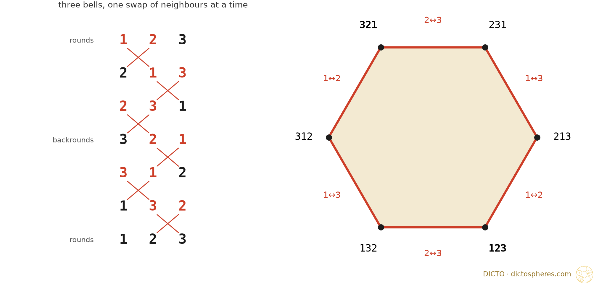
Write the values 1, 2, 3 in every order and join two orders when one becomes the other by swapping two neighbouring values: the six orders are the corners of a hexagon. With 1, 2, 3, 4 they are the 24 corners of the truncated octahedron, Kelvin's cell; with 1, …, 5, the 120 corners of a four-dimensional solid. That solid of all orders is the permutohedron. It is a classical object, named by Guilbaud and Rosenstiehl in 1963 and studied by Schoute half a century before them; what is new in this book is the use made of it. Seen through the permutohedron, much of DICTO's earlier work turns out to be one story: the truncated triangle (the hexagon with every angle 120° and sides alternating between two lengths) is the permutohedron of three values, Kelvin's cell and the whole golden-bond slider (the truncated octahedra T(x) that fill space in pairs, from the octahedron to the cuboctahedron) are permutohedra of four values, and the 4D Vacuus (the walls through the centre spanned by the ridges, #87, #105) is held together by permutohedra of four values at the heart of the permutohedron of five. "Now we have the permutohedron paradigm, everything earlier reconfigures slightly" (DICTO, 11 November 2026; spelling tidied).
One word. DICTO's papers and the chapters first drafted for this book call the move an exchange of neighbours; the series to which the book belongs calls it a swap. In this book the two words are one word: an exchange is a swap, and every edge of every permutohedron is one.
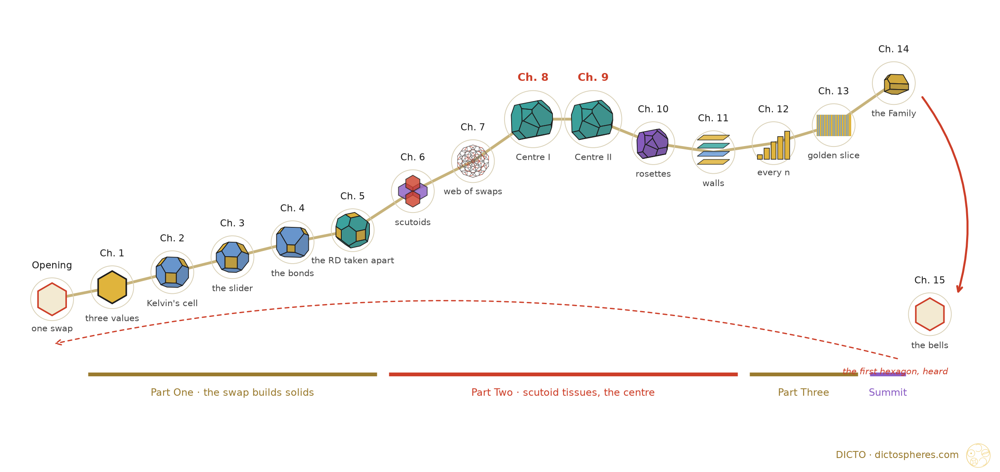
One move runs through every chapter: two neighbouring values change places. It is every edge of every permutohedron, the step of a slider, the trade of neighbours inside a scutoid, a contact gained and a contact lost in a 4D tissue, a wall of the Swap Rule, the edge direction that every member of the family keeps, and the stroke of a band of ringers.
Beginning: one swap. One swap of neighbouring values, repeated, draws the hexagon, and every edge of every permutohedron is a swap (Chapter 1). The same move builds Kelvin's cell, which fills space alone (Chapter 2), the slider of solids that fill space in pairs, with its silent golden station (Chapter 3), and the bonds between two kinds of site (Chapter 4), until, in a build of half rhombic dodecahedra, the edges stop being swaps (Chapter 5).
Middle: the climb into the cells. In a slice a swap is a scutoid, a cell that trades one neighbour for another (Chapter 6). One dimension up, the permutohedron of five values is the web of swaps, with its Vacuus and the mirrors of the Queens (Chapter 7). The centre of the book: swept by a moving slice, it is a tissue of cells that are born, swap neighbours and die, counted by the Eulerian numbers (Chapter 8), and so is every simple 4-polytope, its swaps counted by its h-vector and balanced between the Queens (the 600-cell and the 120-cell), 601 each way (Chapter 9). Where many neighbours swap at once the tissue makes rosettes, which balance exactly with symmetry and fail to without it (Chapter 10). The walls of the Swap Rule of close packing (a law on the volumes of the pieces between stacked layers of balls, #61) are 4D scutoids (Chapter 11). Then the swaps are counted in every dimension (Chapter 12) and the golden slice is cut (Chapter 13).
Summit: one family. Slide the walls of the permutohedron without turning them and every edge stays parallel to a swap: every solid of the climb lies in one family, from Kelvin's cell, which fills space, to the associahedron, which hands out a law of particle physics (Chapter 14).
End: the bells. Ringers may only swap neighbours. Three bells ring the hexagon of this first page, four ring Kelvin's cell, five ring the 4D permutohedron of the centre (Chapter 15). The book ends where it began, now heard.
The DICTO 1:2 Truncated Octahedron, the truncated octahedron whose squares have side 1 and whose hexagons have sides 1 and 2 in turn, grew from two lines of earlier work. The first began in Polyhedraverse, where rhombic dodecahedra cut in half and rejoined gave a slightly irregular truncated octahedron that still filled space (#58). #48 then placed truncated octahedra in a family T(x), each filling space with its partner T(1/x), from Kelvin's cell at x = 1 to the golden pair, the Icosaxes and the Unborn Axes, at x = τ; the 1:2 is its member x = 1/2. #52 read the family as one weight sliding between the two kinds of site of the caesium-chloride network, and #93 proved that each pair on the walk fills space in that one way only. The hexagons of the 1:2 are truncated triangles, the face that #88 found running through the golden cuts: there their sides are in the ratio φ, here in the ratio 2; and #88 and #89 found the golden pairs as slices of four-dimensional solids. The second line is the Vacuus: #44 cut the Platonic solids from their centres into Aristotle's pyramids, and #87 kept only the walls between those pyramids, one fin on every edge, so that the octahedron's Vacuus is three squares through its centre and the cuboctahedron's four hexagons. #105 joined the two: one dimension up, the walls become three-dimensional central slices of the 4D permutohedron, and the five at its heart are 1:2 Truncated Octahedra, the stop x = 1/2 of the slider of #48. Read back through the permutohedron, the path has one thread, the swap of neighbours, and this book follows it.
(1) The swap builds solids. The truncated triangle is the permutohedron of three values: for values a < b < c the six orders span a hexagon with every angle 120° and sides alternating √2(b − a) and √2(c − b), and every such hexagon arises this way; so every 2-face of every permutohedron is a truncated triangle or a rectangle, and the golden cuts of #88 are gap ratios (Chapter 1, Lemma 1.1). The 36 edges of Kelvin's cell are 12 swaps of each of three pairs (Chapter 2). The golden loop of DICTONIC (the truncated octahedra T(x) of #48, which fill space in pairs) is the symmetric spacings of four values, each filling space with its reciprocal in one way only, and the fourth harmonic falls silent at its golden stop alone (Chapter 3); the weight that drives the web of bonds is the relative difference of the gaps, d = (g − m)/(g + m) (Chapter 4, Theorem 4.1). Fourteen Hemi RDs, half rhombic dodecahedra as built in Polyhedraverse, close into the chamfered cube, a zonohedron that is not a permutohedron, and with cube pyramids it fills space, both exactly (Chapter 5).
(2) The centre: scutoid tissues. Scutoids are swaps seen in a slice, and they make flat-faced shells and a cycle that fills space (Chapter 6). The 150 two-dimensional faces of the 4D permutohedron lie in exactly 65 central slices of four kinds, and five 1:2 Truncated Octahedra, slotted along ten regular hexagons, make its heart; a face lies on a mirror exactly when the Mirror Law (a rule read off the Coxeter diagram of the symmetry group) says so (Chapter 7). A sweep of the 4D permutohedron is a scutoid tissue, 26 births, 66 swaps and 26 deaths (Chapter 8), and a sweep of any simple 4-polytope is a scutoid tissue counted by its h-vector, with a balance law between the Queens (Chapter 9). Which uniform polytopes sweep cleanly and which only in rosettes is read from the Coxeter chain, and every rosette tissue of the Atlas (the 81 polytopes of the reflection-group chains, #108) balances too, by symmetry; without symmetry the law fails (Chapter 10). The Swap Rule of close packing below s = 1/4 is proved stacking by stacking and its walls are swaps one dimension up (Chapter 11).
(3) Every dimension. The Vacuus slices of the permutohedron of n values are counted for every n, 3, 15, 65, 225, 770, 2443, 7761, and its sweep by the Eulerian numbers (Chapter 12); the golden cut through the 4D permutohedron filling is a filling of space by cells of exactly 35 kinds, non-periodic in one direction only (it repeats along a plane), whose window version has 60 tile shapes (Chapter 13).
(4) The summit and the return. Moving the walls instead of the values gives the permutohedron's whole family, from Kelvin's cell to the associahedron, whose canonical form is a scattering amplitude; the road between them keeps the permutohedron's shape to the last moment, and in three dimensions the members that fill space by sliding are exactly Fedorov's five (Chapter 14). English change ringing walks the permutohedron: on four bells there are exactly 5396 extents, the three double methods are the most symmetric, and the plain hunt is the only shortest way from rounds to backrounds, for every number of bells (Chapter 15).
Each chapter opens with a paragraph for a general reader (in a box with a red rule), retells earlier results through the permutohedron or adds new ones, works one example by hand, and ends with the question it hands to the next chapter. Under every chapter title a line names the papers it comes from with their DICTO DOIs, or says that the chapter is new. Theorems, figures and sections are numbered by chapter (Theorem 7.2 is the second numbered statement of Chapter 7). Every result is labelled as it stands: proved (with the proof or the paper that proves it), exact (computed in exact arithmetic, with the study named), numerical, or open; the Epilogue lists the main claims of every chapter with their status, and the appendix names the study and commit behind each check. The known theory is credited to its authors throughout. Where a result has its home in another book of the series, the chapter retells it and names the home.
The series takes its definitions from the DICTOnary (Book One, II: The DICTOnary of Atoms): one name per shape, an established literature name kept and DICTO's beside it. This book uses these names; those without another author were named by DICTO: permutohedron (classical; Guilbaud and Rosenstiehl); Kelvin's cell, the truncated octahedron (Kelvin 1887); truncated triangle (Coxeter's t{3}; #20, #88); elongated hexagon (DICTO, Chapter 5); the golden cuts and the Greater and Lesser Golden Cut solids (#88, #89); Icosaxes and Unborn Axes (#48); DICTO 1:2 and DICTO 2:1 Truncated Octahedron (#105; also called the 1:2 and the 2:1 after the first mention in a chapter); DICTONIC solids and bonds, among them the golden loop (the truncated octahedra T(x) and their partners, #48, #52); Hemi RD (the half rhombic dodecahedron, Chapter 5); Vacuus (#87); scutoid (Gómez-Gálvez et al. 2018) and 4D scutoid (#104); White Queen and Red Queen, the 600-cell and the 120-cell (#63, #65); DICTO 13-COA (13-Corner Octet Atom; also called the 13-COA), the augmented cuboctahedron (Stewart 1970; Chapter 14). The names first given in this book are listed for the DICTOnary's next version.
| permutohedron of v₁, …, vn | the convex hull of all n! points whose coordinates are v₁, …, vn in some order; for 1, …, n it is the standard permutohedron, of dimension n − 1 |
| gaps | the differences gk = vk+1 − vk between consecutive values |
| swap (exchange) of neighbours | two values next to each other in size change places: an edge of the permutohedron. In a tissue: two cells stop touching and two others start |
| truncated triangle | a hexagon with every angle 120° and sides alternating between two lengths (Coxeter's t{3}) |
| elongated hexagon | a hexagon whose opposite sides are equal and whose two long sides are opposite (Chapter 5) |
| φ, τ | both the golden ratio (1 + √5)/2; Chapters 1–4 and their earlier figures write τ, as #48 does, the later chapters φ |
| T(x) | the permutohedron of four values with gaps x : 1 : x (#48), from Kelvin's cell (x = 1) to the golden pair (x = τ); the DICTO 1:2 Truncated Octahedron is x = 1/2 |
| Vacuus, slice | the hyperplanes through the centre spanned by the ridges of a centrally symmetric polytope (#87); a slice is the polytope cut by one of them |
| sweep, birth, swap, death | a hyperplane moving through a polytope; in four dimensions its slice is a tissue of cells, and at each corner a cell is born, two pairs of cells swap contact, or a cell dies (Chapter 8) |
| h-vector, Eulerian numbers | hi counts the corners with i edges going down in a generic sweep; for the permutohedron of n values these are the Eulerian numbers |
| #n | DICTO's paper number n; each is listed with its DICTO DOI in Papers referred to |
This is Book Seven of The Five Orders of Space, the second book of the Fire ring 火, whose solid is the tetrahedron and whose colour is red. Fire is the encounter: two neighbours meet and change places. The series page at the back of the book shows the five rings and where this book stands among them. The swaps that this book does not follow, of faces with corners, of a number with its Galois twin, of a solid with its turn, belong to Book Eleven, A Brief Geometry of Space.
One swap of neighbouring values draws the hexagon; with four values the swaps build Kelvin's cell, the slider and the bonds, until the edges stop being swaps.
Every truncated triangle is the permutohedron of three values, and every 2-dimensional face of every permutohedron is a truncated triangle or a rectangle
Retold from #88 (DICTO DOI: 10.5281/zenodo.23896439) and #20 (DICTO DOI: 10.5281/zenodo.23357896), with #48 and #105. Lemma 1.1 and its reading of the solids of #48, #88 and #105 as gap ratios are new in this book.
Take three numbers and write them in every order. Swapping two neighbours moves you from one order to the next, and the six orders, as points, make a hexagon with every corner 120°, the shape this series calls a truncated triangle. Every edge of it, and of every solid in this book that is built from orders, is one swap of two neighbouring values; its length is √2 times the gap between the two values swapped.
Write three numbers in every possible order. Joining two orders when one becomes the other by exchanging two neighbouring values gives six corners and six edges, and they close up into a hexagon. When the three numbers are evenly spaced, as 1, 2, 3, the hexagon is regular. Spread them unevenly, as 1, 2, 4, and the hexagon keeps its angles but its sides alternate short and long: the triangle it was cut from shows through. That hexagon, every angle 120° and the sides alternating between two lengths, is the truncated triangle (Coxeter's t{3}; #20 and #88, where the golden cuts of the Platonic solids were found). This chapter shows that the truncated triangle is exactly the permutohedron of three values, and that every 2-dimensional face of every permutohedron is a truncated triangle or a rectangle.

Proof. The sum of the coordinates does not change under reordering, so the six points lie in one plane. Exchanging the two smallest values moves a point by (b − a)(ei − ej) for the two positions i, j that hold them, a step of length √2(b − a); exchanging the two largest moves it by √2(c − b). Starting from (a, b, c) and making the two exchanges in turn returns to the start after six steps (the braid ring s₁s₂s₁ = s₂s₁s₂), so the six points are the corners of a hexagon with alternating sides. From (a, b, c) the six steps are (b − a)(1, −1, 0), (c − b)(1, 0, −1), (b − a)(0, 1, −1), (c − b)(−1, 1, 0), (b − a)(−1, 0, 1), (c − b)(0, −1, 1): each direction is the one before turned by 60° (dot product 1, lengths √2), so the hexagon is convex and every angle is 120°. Conversely, an equiangular hexagon is fixed up to congruence by its sides, since each side's direction is the previous one turned by 60°; sides alternating s and t thus give the hexagon of the gaps s/√2 and t/√2. Equal gaps give equal sides. ∎ (Checked symbolically, with the faces of the solids below computed from their hulls: key_lemma.py, log kept with the study.)
Either set of alternate sides extends to an equilateral triangle: the lines of the sides √2(c − b) give a triangle of side √2(2(b − a) + (c − b)) with corners of side √2(b − a) cut off, and the lines of the other three sides give the triangle with the roles exchanged. On the permutohedron of four values the hexagon sits on a face of an octahedron, and the corners cut off are the sides it shares with the squares, the outer gap. #88's two golden cuts of the octahedron are the two choices: the Greater (the Icosaxes of #48), where the sides shared with the corners are the long ones, and the Lesser (the Unborn Axes), where they are the short ones.
Proof. The 2-faces are the ordered splits of the n positions into n − 2 blocks, each block holding values consecutive in size: one block of three and the rest single, or two blocks of two (Ziegler, Example 0.10, for 1, …, n; for arbitrary distinct values the faces are the same, Postnikov). If the moving values are three consecutive in size, vk, vk+1, vk+2, the face is the hexagon of Lemma 1. If they are two separate neighbouring pairs, the two exchanges commute and move in orthogonal directions, so the face is a rectangle with the two step lengths as sides. ∎
| solid | values | gaps | hexagons (Lemma 1) | four-sided faces | source |
|---|---|---|---|---|---|
| Kelvin's truncated octahedron, the 3D permutohedron | 1, 2, 3, 4 | 1, 1, 1 | regular | squares | #48 at x = 1 |
| DICTO 1:2 Truncated Octahedron (squares of side 1, hexagons 1 and 2 in turn) | 1, 2, 4, 5 | 1, 2, 1 | truncated triangles, ratio 2 | squares (gaps 1, 1) | #105 |
| DICTO 2:1 Truncated Octahedron | −5, −1, 1, 5 | 4, 2, 4 | truncated triangles, ratio 2 | squares (gaps 4, 4) | #105 |
| the golden bond (Icosaxes) | −τ³, −1, 1, τ³ | 2τ, 2, 2τ | golden truncated triangles, ratio τ | squares | #48 at x = τ; #88 |
For the golden bond the gaps are 2τ, 2, 2τ because τ³ − 1 = 2τ; so its hexagons have sides in the ratio τ, the golden cut that #88 found on the octahedron's faces. Each row was checked by computing the faces from the hull (key_lemma.py). The golden cut is a gap ratio: a face is golden when the three values on it are spaced in the ratio τ. The 1:2 and 2:1 have similar hexagons, ratio 2, and differ in their squares (Chapter 3). The truncated triangles of #95, in a chiral family, are permutohedra of three values on a solid that is not itself a permutohedron.

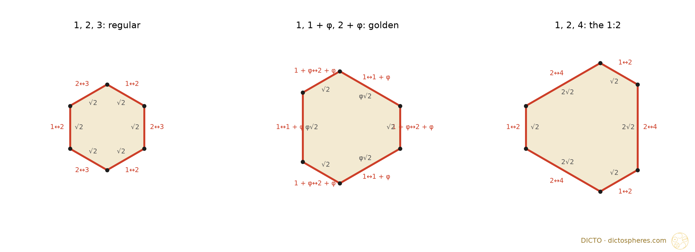
Every edge of every permutohedron is a swap of neighbouring values, and its length is the gap swapped; every 120° hexagon is three values. Add a fourth value: does the solid fill space?
DICTO: #20 The FUJI Family (the truncated triangle first used); #48 The Golden Split; #88 Every Platonic Solid Has Exactly Two Golden Cuts (the truncated triangle and its two golden cuts); #93 One Double Pyramid, Two Splits; #95 Pentagons for the Kites; #105 DICTO 1:2 Truncated Octahedron: The 4D Vacuus of the Permutohedron. G. M. Ziegler, Lectures on Polytopes, Springer (1995), Example 0.10 (the faces of the permutohedron); A. Postnikov, Permutohedra, associahedra, and beyond, IMRN 2009 (permutohedra of arbitrary values); H. S. M. Coxeter, Regular Polytopes (t{3}). That the faces of a permutohedron of arbitrary values are hexagons and rectangles is classical (Postnikov); the reading of the truncated triangle as the permutohedron of three values, and of the golden cuts and solids of #88 and #105 as gap ratios, is this book's.
The 24 orders of four values, joined by 36 swaps of three kinds, are Kelvin's cell, the one permutohedron that fills space alone
Retold from #100 (DICTO DOI: 10.5281/zenodo.24030326), #26 (DICTO DOI: 10.5281/zenodo.23333183) and #58 (DICTO DOI: 10.5281/zenodo.23665944), with #48 and #105. The reading of the 36 edges by the pair they swap is new in this book.
In 1887 Lord Kelvin proposed the truncated octahedron as the way to divide space into cells of equal volume with the least wall between them; slightly curved, it stood as the best answer for more than a century, until Weaire and Phelan beat it in 1994 with a foam of two kinds of cell. The truncated octahedron is also the solid of all 24 orders of 1, 2, 3, 4, joined by swaps. This chapter reads Kelvin's cell as that solid: its 36 edges are swaps of three kinds, its squares and hexagons are the two ways two swaps can meet, and it is the one solid of its line that fills space alone.
Write the four values 1, 2, 3, 4 in every order, as points of space: (1, 2, 3, 4), (2, 1, 3, 4), and so on, 24 points in all. They lie in the flat three-dimensional space of points whose coordinates add up to 10, and their hull is a solid with 6 squares and 8 regular hexagons, every edge of one length: the truncated octahedron, Kelvin's cell. Each corner has three edges, one for each pair of neighbouring values, 1 and 2, 2 and 3, 3 and 4.
Proof. At every corner one edge swaps each pair k, k + 1 (Chapter 1), so there are 24 · 3 / 2 = 36 edges, and each pair is swapped along 24 / 2 = 12 of them. By Corollary 1.2 a 2-face moves either two disjoint pairs, here only {1, 2} with {3, 4}, which gives the four-sided faces, 4!/(2! 2!) = 6 of them (the positions of the two smallest values), or three consecutive values, {1, 2, 3} or {2, 3, 4}, with the remaining value at any of the four positions: 4 + 4 = 8 hexagons. ∎
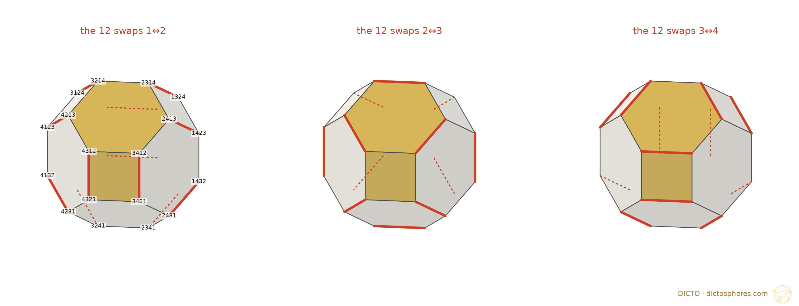
Spread the four values symmetrically, with gaps x, 1, x, and Kelvin's cell becomes the slider of Chapter 3, from the octahedron to the cuboctahedron. Every solid of the slider fills space with a partner (Theorem 3.2). Kelvin's cell is the only one that fills space alone, and #100 proves it with Dehn's invariant, the sum over the edges of length ⊗ angle (Dehn 1901), which vanishes for every solid that tiles space by copies of itself (Debrunner 1980): on the sweep from the octahedron through Kelvin's cell and the cuboctahedron to the cube, the invariant is zero only at Kelvin's cell and at the cube (#100, Theorem 1.1; Figure 2.2).
The swap explains where the zero falls. The two cells of the two-site pattern behind the slider (Chapter 4) change places under μ ↔ 3 − μ, and Kelvin's cell, at μ = 3/2, is the one left in place. On that line the Dehn coefficient of the cell is 12√2(3 − 2μ), a quantity that changes sign under the swap, so it must vanish at the fixed point; and the wall area per cell is the same at μ and 3 − μ and bends down, so it is largest there (studies/2026-11-13-swaps-and-fixed-points, checks K3 and K4, proved there in exact arithmetic). Kelvin's cell is where the swap stands still. This is one of the few places where a law sits at the fixed point of a swap for a stated reason; the study that catalogued the swaps of the series found that most laws do not.

In the filling, each Kelvin's cell meets 14 others, 8 across its hexagons and 6 across its squares. #26 builds the thirteen of them that sit round one cell in three layers, 4 + 5 + 4: twelve neighbours, 8 across hexagons and 4 across squares, with the top and bottom squares left open as two windows onto the gold centre (Figure 2.3). It is one of the seven periodic thirteens of #26, each a cell and twelve neighbours in its honeycomb. Seen through this book, every contact in the block is a face of the solid of orders: a hexagon where three values cycle, a square where two far-apart swaps commute. The same cell also arose from the other side: rhombic dodecahedra cut in half and rejoined in Polyhedraverse gave a slightly irregular truncated octahedron that still filled space (#58); Chapter 5 follows a later build of that kind to where it leaves the family.
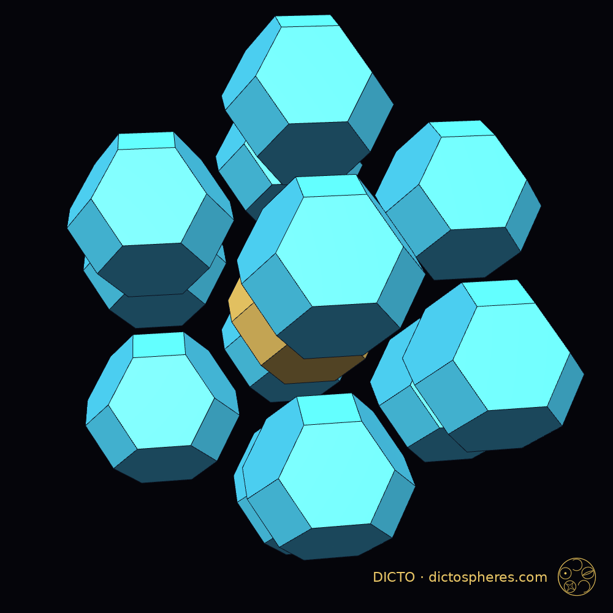
With equal gaps the swaps build Kelvin's cell, which fills space alone, at the one place where the pair swap of its line stands still. What if the gaps, the lengths of the swaps, move?
DICTO: #100 The Dehn Test Picks the Lone Tilers (Theorem 1.1, Figure 1); #26 DICTO ATOM-13×13 (the TO-13 block); #58 (the RD halves rejoined); #48, #105; studies/2026-11-13-swaps-and-fixed-points (checks K3, K4). W. Thomson (Lord Kelvin), On the division of space with minimum partitional area, Phil. Mag. (5) 24 (1887) 503–514; D. Weaire and R. Phelan, A counter-example to Kelvin's conjecture on minimal surfaces, Phil. Mag. Lett. 69 (1994) 107–110; M. Dehn, Über den Rauminhalt, Math. Ann. 55 (1901) 465–478; H. E. Debrunner, Über Zerlegungsgleichheit von Pflasterpolyedern mit Würfeln, Arch. Math. 35 (1980) 583–587; G. M. Ziegler, Lectures on Polytopes (the faces of the permutohedron). The reading of the 36 edges by the pair they swap, and of Kelvin's cell as the fixed point of the pair swap, is this book's; the Dehn test is #100's, the parity and concavity checks are the swaps study's.
The permutohedra of four values spaced symmetrically are the solids of DICTONIC's golden loop; each fills space with its reciprocal in one way only, and at the golden stop the fourth harmonic falls silent
Retold from #48 (DICTO DOI: 10.5281/zenodo.23596362), #105 (DICTO DOI: 10.5281/zenodo.24121177), #93 (DICTO DOI: 10.5281/zenodo.23933666) and #94 (DICTO DOI: 10.5281/zenodo.23934349). Proposition 3.1 and the reading of the golden loop as symmetric spacings are new in this book.
Change how far apart the four values are, keeping them balanced about their middle, and the solid keeps all the cube's symmetry while it changes shape: a slider, from the octahedron through Kelvin's cell to the cuboctahedron. Every stop on it fills space with one partner, in one way only. And if you listen to the corners as notes on a sphere, the slider falls silent in its fourth tone at exactly one stop, the golden one.
The 24 orders of 1, 2, 3, 4 are the corners of Kelvin's truncated octahedron. Space the four values differently and the corners move, but the solid keeps its 6 four-sided faces and 8 hexagons (Chapter 1). Most spacings break its symmetry. This chapter shows which spacings keep all of it, and that those are exactly the solids of DICTONIC's golden loop, the truncated octahedra T(x) of #48 that fill space in pairs (Theorem 3.2).
Proof. Permuting the four coordinates maps the set of orders to itself: 24 symmetries. The solid is a truncated octahedron combinatorially, whose combinatorial symmetries number 48, so there are 24 or 48. A group of 48 orthogonal maps containing the tetrahedral group is the full octahedral group, which contains the central inversion x ↦ −x (mean at the origin); so all 48 occur exactly when the inversion is a symmetry, that is, when −v₁, …, −v₄ are again v₁, …, v₄: the values are symmetric about their mean. ∎ (Checked by computing the full symmetry group of the corners for four symmetric and three non-symmetric spacings: symmetry.py.)
Proof. The filling is #48, Theorem 4; the identification of #48's T(x) with the permutohedron of gaps x : 1 : x is #105, Theorem 4; the uniqueness is #93, Theorem A, where T(x) and T(1/x) are Pμ and Qμ with μ = 1 + x/(1 + x) (#90, Proposition 6). ∎

| x | T(x) | partner T(1/x) | source |
|---|---|---|---|
| → 0 | the octahedron | the cuboctahedron | #48; #53, Corollary 1 |
| 1/2 | DICTO 1:2 Truncated Octahedron (values 1, 2, 4, 5) | DICTO 2:1 Truncated Octahedron | #105 |
| 1 | Kelvin's truncated octahedron (1, 2, 3, 4) | itself | #48 |
| τ | Icosaxes (−τ³, −1, 1, τ³) | Unborn Axes | #48 |
This is why the loop runs only through symmetric spacings: each site of the two cube lattices in Theorem 3.2 has all 48 symmetries of the cube, so its cell must have them too, and by Proposition 3.1 that forces the values to be symmetric about their mean. Chapter 4 shows that the weight between the two kinds of site measures the spacing itself.
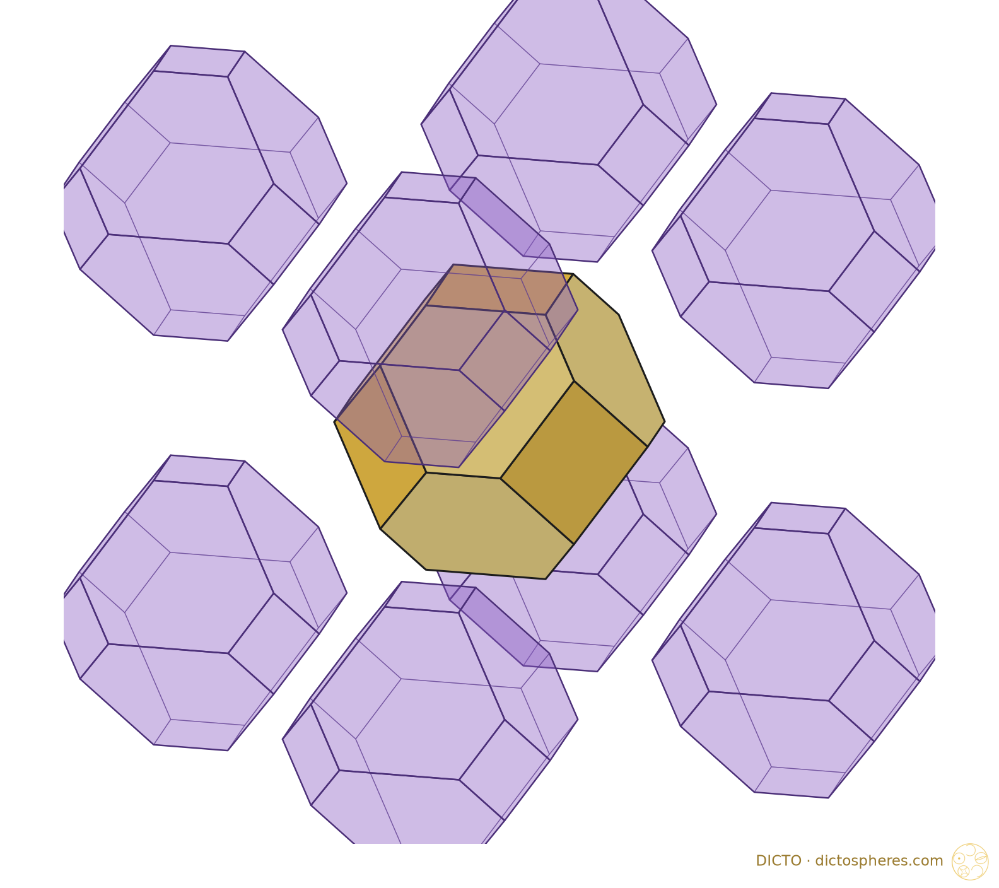

A solid can be listened to. Give each of its corners, seen from the centre, a unit weight on the sphere and expand in spherical harmonics: the strength Ql of each degree l is the solid's harmonic fingerprint, the bond-orientational order of Steinhardt, Nelson and Ronchetti (1983), with which physicists tell cubic, hexagonal and icosahedral order of atoms apart. Cubic solids ring in the fourth degree; icosahedral ones never do. #94 applied it to the sweep Pμ = C ∩ μC* of the cube and its polar octahedron, of which the slider of this chapter is the octahedron half: T(x) is Pμ with μ = 1 + x/(1 + x) (#90, Proposition 6), from the octahedron (μ = 1) through Kelvin's cell (μ = 3/2) to the cuboctahedron (μ = 2).
Proof (#94). For 1 < μ ≤ 2 the corners are the 24 points (±1, ±a, 0) in all orders, a = μ − 1. With the cubic harmonic K4 = x⁴ + y⁴ + z⁴ − (3/5)r⁴, Q4 vanishes exactly when the mean of K4/r⁴ over the corners does, that is when (1 + a⁴)/(1 + a²)² = 3/5, or a⁴ − 3a² + 1 = (a² + a − 1)(a² − a − 1) = 0; in 0 < a < 1 the only root is a = 1/φ, μ = φ. At a = 1/φ the corners are the cyclic arrangements of (0, ±1, ±1/φ) in both orders, the two icosahedra of the pyritohedral pair, and an icosahedron is silent in every degree that carries no icosahedral harmonic. ∎
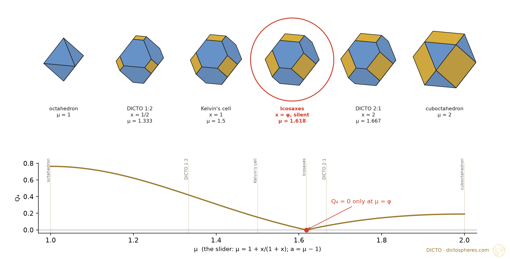
So the slider carries two special stops for two different reasons. Kelvin's cell is where the pair swap stands still, and the laws it carries there (filling space alone, the most wall per cell) are forced by that swap (Chapter 2). The golden stop is where the corners become two icosahedra; the swap study found no swap of this line whose fixed point is φ, so the silence is a law of its own kind, a gap ratio meeting the five-fold symmetry, not a fixed point.
Symmetric gaps give one slider; each stop fills space with its partner in one way only, and at the golden stop the fourth harmonic falls silent. What holds each pair together?
DICTO: #48 The Golden Split (Theorem 4); #53 The Global Web of Bonds (Corollary 1); #90 Golden on the Octahedron, Silver on the Cube (Proposition 6); #93 One Double Pyramid, Two Splits (Theorem A); #105 DICTO 1:2 Truncated Octahedron: The 4D Vacuus of the Permutohedron (Theorem 4, Figure 5). M. Koca, N. O. Koca, M. Al-Mukhaini and A. Al-Qanobi, arXiv:1506.04600 (2015), eq. 49 (T(x)); W. Thomson (Lord Kelvin), Phil. Mag. (5) 24 (1887) 503–514. The filling and its uniqueness are #48's and #93's; the reading of the loop as the symmetric spacings of four values is this book's. The silent station: #94 The Silent Golden Station (Main theorem (A), (B)), with #90 (Proposition 6) for the identification of the slider with the octahedron half of its sweep; P. J. Steinhardt, D. R. Nelson and M. Ronchetti, Phys. Rev. B 28 (1983) 784–805 (the harmonic fingerprint).
The weight that drives the web of bonds is the relative difference of the gaps between four values
Retold from #52 (DICTO DOI: 10.5281/zenodo.23629252), #53 (DICTO DOI: 10.5281/zenodo.23631140) and #90 (DICTO DOI: 10.5281/zenodo.23931136), with #105. The reading of the weight as the spacing, d = (g − m)/(g + m), is new in this book.
Put two kinds of site in space, like the caesium and chlorine atoms of caesium chloride, one at the corners of a cubic grid and the other at the centres of its cubes, and let one kind pull harder than the other. Each site claims the space closest to it in the weighted sense, and the cells they claim are permutohedra of four values. How hard they pull is how unevenly the values are spaced.
In the web of bonds (#52, #53) one number drives everything: the weight difference d between the two kinds of site of the body-centred cubic arrangement. Sliding d from −1 to 1 moves the shared walls, and the cells pass from the octahedron through the DICTO 1:2 Truncated Octahedron (the permutohedron of 1, 2, 4, 5; d = −1/3), Kelvin's truncated octahedron (d = 0), the golden bond (Icosaxes; d = 1/τ³) and the DICTO 2:1 Truncated Octahedron (the partner of the 1:2; d = 1/3) to the cuboctahedron; #52 and #53 call this the golden loop. Chapter 3 read the cells as permutohedra of four values; this chapter shows that the weight itself is a statement about those values: it measures how unevenly they are spaced.
d = (g − m) / (g + m),
and the cell of each B site is the permutohedron whose gaps are in the reciprocal ratio, m, g, m (the same formula with −d).Proof. By #90 (Proposition 6) the A cell is C ∩ μC* with μ = (3 + d)/2, that is {|yi| ≤ 1, |e·y| ≤ (3 + d)/2} for the eight e = (±1, ±1, ±1): the walls towards the six nearest A sites 2ei and the eight nearest B sites e. (No other site cuts it: the power cell lies inside this region, and these regions for A and B already fill space by #90, so the two are equal; checked also exactly, corner by corner, against every site within ±8 at d = −99/100, −1/3, 0, 1/τ³, 1/3 and 99/100.) The permutohedron of −q, −p, p, q is, after the isometry of #105 (Theorem 4), the hull of the signed orders of (p + q, q − p, 0): its squares lie on the planes |yi| = p + q and its hexagons on |e·y| = 2q. Scaling to p + q = 1 and matching 2q = (3 + d)/2 gives q = (3 + d)/4 and p = (1 − d)/4, so the gaps are g = q − p = (1 + d)/2 and m = 2p = (1 − d)/2, and (g − m)/(g + m) = d. Changing d to −d exchanges g and m. ∎ (Checked exactly at d = −1/3, 0, 1/τ³, 1/3 and 2/7, corner by corner: weight_map.py, log kept with the study.)

| stop | weight d | gaps g : m : g (A cell) | A cell | B cell |
|---|---|---|---|---|
| Kelvin | 0 | 1 : 1 : 1 | Kelvin's truncated octahedron | the same |
| 1:2 / 2:1 | −1/3 | 1/2 : 1 : 1/2 (values 1, 2, 4, 5) | 1:2 Truncated Octahedron | 2:1 Truncated Octahedron |
| the golden bond | 1/τ³ | τ : 1 : τ | Icosaxes | Unborn Axes |
At d = 0 (equal weights, the body-centred cubic Voronoi tiling) the gaps are equal: Kelvin's cell. The partner T(1/x) of #48 is the same rule seen from the other kind of site. The golden bond is the golden spacing. At d = (τ − 1)/(τ + 1) = 1/τ³ the outer gaps are τ times the middle one; by Chapter 1 every hexagon of the cell is then a golden truncated triangle. The 1:2 and 2:1 pair is the spacing 1 : 2. At d = −1/3 (μ = 4/3) the A cell is the permutohedron of 1, 2, 4, 5 and the B cell that of −5, −1, 1, 5; by #93 (Theorem A, P4/3 and Q4/3) they fill space in this one way only.
In #48's parameter, x = (1 + d)/(1 − d) is the gap ratio g/m, and the weight is d = (x − 1)/(x + 1), the form given in #53 (Corollary 1); #52 states the same walk at the scale L = φ (φ = τ, the golden ratio), where the weight difference carries the factor φ²/4; #90's μ is (3 + d)/2.
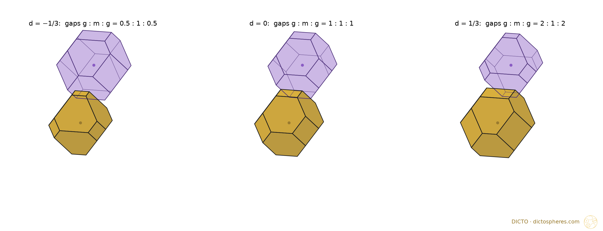
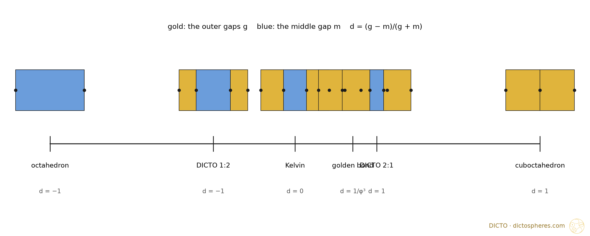
The bond weight is d = (g − m)/(g + m), a ratio of swap lengths, and every edge of every bond cell is a swap. Are all the solids of the series built by swaps?
DICTO: #48 The Golden Split (Theorem 4, T(x) and T(1/x)); #52 The Web of Bonds (the power-diagram walk, Main theorem); #53 The Global Web of Bonds (Corollary 1, λ = (x − 1)/(x + 1)); #90 Golden on the Octahedron, Silver on the Cube (Proposition 6, the cells C ∩ μC*); #93 One Double Pyramid, Two Splits (Theorem A); #105 (Theorem 4, the isometry); Chapter 1 of this book (the truncated triangle). F. Aurenhammer, Power diagrams: properties, algorithms and applications, SIAM J. Comput. 16 (1987) 78–96; W. Thomson (Lord Kelvin), Phil. Mag. (5) 24 (1887) 503–514 (the truncated octahedron as the body-centred cubic cell). The power-diagram walk and its cells are #52's, #53's and #90's; reading the weight as the relative difference of the gaps between four values is this book's.
Fourteen half rhombic dodecahedra close into the chamfered cube, a zonohedron that is not a permutohedron, and with cube pyramids it fills space
New in this book, from DICTO's Hemi RD build in Polyhedraverse (11 November 2026); background in #58 (DICTO DOI: 10.5281/zenodo.23665944) and #87 (DICTO DOI: 10.5281/zenodo.23896015).
DICTO cut rhombic dodecahedra in half in Polyhedraverse and put fourteen halves together. The result looks like a permutohedron, with squares where Kelvin's cell has squares and hexagons between them, and it is not one: its hexagons have their long sides opposite, and none of its edges is a swap. This chapter proves what the build shows and finds the place where the paradigm stops.
Chapters 1 to 4 found the solids of the series among the permutohedra. This chapter follows a build that leads out of the family. The rhombic dodecahedron is a cube with a square pyramid on each of its six faces, and cut through six of its corners it falls into two halves (a Hemi RD, volume 1 when the whole has volume 2). The cut face is an elongated hexagon: sides 1, √3/2, √3/2, 1, √3/2, √3/2, the long sides opposite each other, the very hexagon that will appear on the chamfered cube. The build in Polyhedraverse starts from one Hemi RD and attaches thirteen more to its faces. Three things show in the result: its hexagons are irregular, with the long sides opposite; its six open squares could be filled with pyramids cut from a cube; and those squares echo the squares of the permutohedron. This chapter proves them and shows where the echo holds and where it stops.
Proof. The volume of a zonotope is the sum of |det| over its triples of generators: 1 (the three axes) + 6 (two axes with one diagonal) + 6 (one axis with two diagonals) + 2 (three diagonals) = 15. The build is read exactly from its world export: each stored rotation is, to 10−15, a matrix with entries 0 and ±1 (orthogonal, determinant 1) and each stored position a multiple of 1/10, and the Hemi RD's own corners are tenths; so every corner of the build is rational. In rational arithmetic: each piece has volume exactly 1; the 91 pairs of pieces have disjoint interiors (each pair is separated by an exact plane, a face normal of one piece or the cross product of an edge direction of each); every corner of the build lies in Z + c, c = (0, 1/5, 1/5) the centre of the build, and every corner of Z + c is a corner of a piece, so the convex hull of the build is exactly Z + c, with squared hexagon sides 1, 3/4, 3/4, 1, 3/4, 3/4. The six cube pyramids under the squares of Z + c lie in Z + c and have interiors disjoint from every piece and from one another (99 more exact separations). Pieces and pyramids then fill a volume 14 · 1 + 6 · ⅙ = 15 = vol Z inside Z + c without overlap, so they fill Z + c (hemi_exact.py, FINAL ok). ∎
Corollary 5.2. The chamfered cube is not a permutohedron. By Chapter 1, every 2-dimensional face of a permutohedron is a truncated triangle (sides alternating) or a rectangle; the hexagons of Z are elongated hexagons, their long sides opposite each other, not alternating, so they are not truncated triangles. The difference is one of symmetry: a regular hexagon has both a third-turn and a half-turn; the truncated triangle keeps the third-turn and loses the half-turn (opposite sides unequal), the elongated hexagon keeps the half-turn (opposite sides equal and parallel, two mirrors, like a rectangle) and loses the third-turn. Every face of a zonohedron has the half-turn, so the chamfered cube's hexagons had to be elongated.

Proof. No two pieces overlap: each of the 487 pairs within reach is separated by an exact plane (a face normal of either piece or the cross product of an edge direction of each), checked in rational arithmetic. Each lattice point carries volume 15 + 1 = 16, the volume of a cell of L, so the pieces have density 1; a packing of convex bodies with density 1 leaves no gap. ∎ (exact_fill.py)
Remark 5.4. Z alone does not fill space by translations: round a hexagon's long sides its zone has 8 faces, and a convex body that tiles by translations has every belt of 4 or 6 faces (Venkov 1954; McMullen 1980). The cubes are needed.
Where the echo holds. The six squares of Z sit on the cube axes exactly where the 3D permutohedron has its six squares, and in the 4D permutohedron those squares are where a second kind of cell, the hexagonal prism, joins, as here a second kind of piece, the cube, does. The hexagons differ: twelve elongated hexagons on the rhombic dodecahedron's face directions here, eight truncated triangles on the body diagonals there. The echo is in the squares, not in the hexagons.
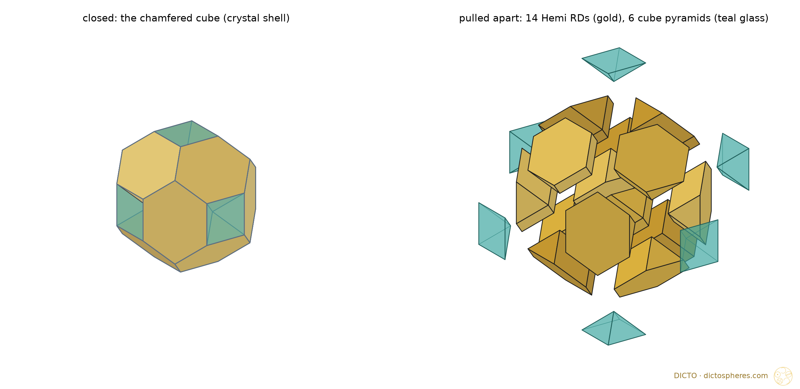
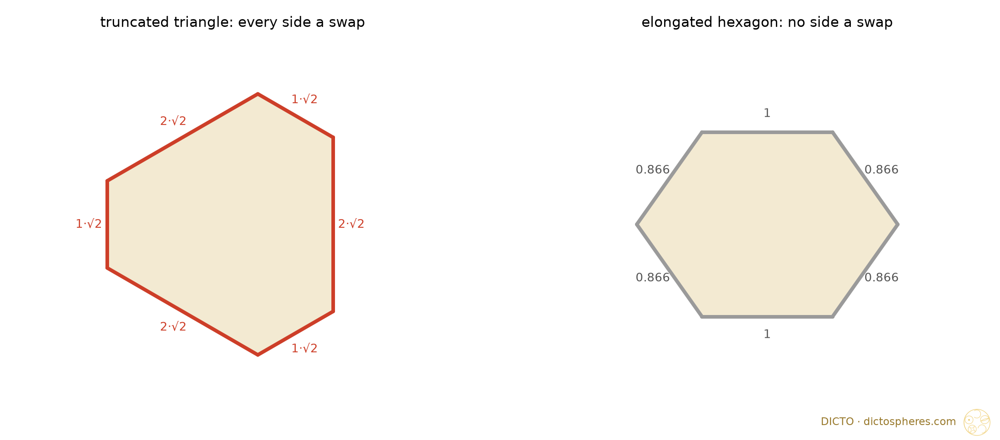
No: the chamfered cube's edges run along directions that swap no two values, and the paradigm stops there. But the swap itself does not stop: inside cells it becomes a trade of neighbours.
DICTO: the Hemi RD build in Polyhedraverse (11 November 2026; the world export with exact transforms is in the study); #105 DICTO 1:2 Truncated Octahedron: The 4D Vacuus of the Permutohedron (the 4D permutohedron's prisms); Chapter 1 (the face lemma). B. A. Venkov, On a class of Euclidean polyhedra, Vestnik Leningrad. Univ. Ser. Mat. Fiz. Him. 9 (1954) 11–31; P. McMullen, Convex bodies which tile space by translation, Mathematika 27 (1980) 113–121, doi:10.1112/S0025579300010007.
The centre of the book. In a slice a swap is a scutoid; one dimension up the permutohedron of five values is the web of swaps; swept, it and every simple 4-polytope are tissues of swaps, counted and balanced; crowded swaps make rosettes, and the walls of close packing are 4D scutoids.
The swap of neighbours in living tissue: flat-faced scutoid shells, their polar flip and the cycle that fills space
Re-edited from the draft Scutoids: Layers, Shells and Cycles (10 November 2026, not published) and #104 (DICTO DOI: 10.5281/zenodo.24111864).
In 2018 Gómez-Gálvez and colleagues found that cells lining curved living tissue take a shape nobody had named, the scutoid: five neighbours at the top, six at the bottom, and in between, two neighbours swap contact. It is the swap of this book seen inside a tissue: not two values changing places in an order, but two cells trading one neighbour for another as a slice moves through them.
Chapter 5 found where the permutohedron stops. This chapter returns to its edges, the exchanges of neighbours, and follows them into the cells of living tissue. A scutoid is a cell whose outline changes on the way through: two cells that touched stop touching, and two others start (Gómez-Gálvez et al. 2018). In this book's language it is an exchange of neighbours, the move that joins two orderings on an edge of the permutohedron, seen in a slice.
Take four cells round a short wall in a flat tissue: A and B share the wall, C sits above it and D below. Let A and B draw apart and C and D close in. The wall shrinks to a point where all four cells meet, and then reopens across: now C and D share a wall and A and B no longer touch (Figure 6.1). Foam physicists call it a T1 transition (Weaire and Rivier); biologists see it when tissue reshapes. Stack the frames in height and the cells become columns, and the two that met halfway up have gained a side: that column is a scutoid. One contact lost, one contact made, at one point: this is the swap that the rest of the book follows into four dimensions.
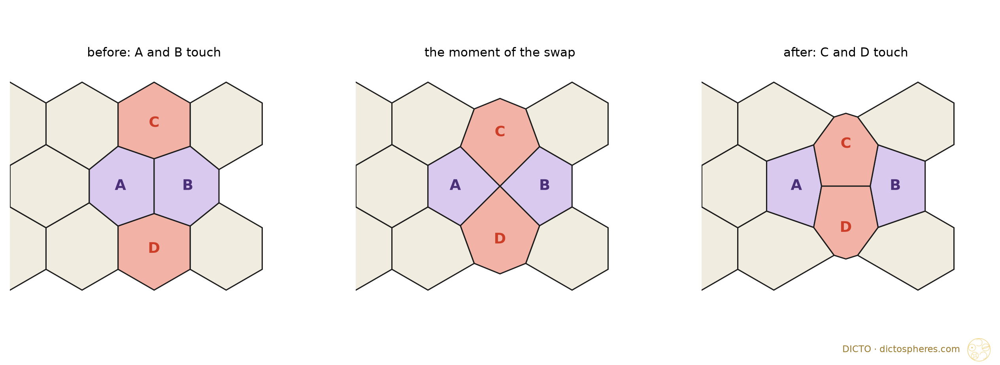
Take the hexagonal tiling, shrink every second vertical edge of every second row to a point and reopen it across: a cell that is a hexagon below and a pentagon above, with the Y-corner halfway and 13 faces, every one of them flat (Figure 6.2).
Why flat. Each core edge and the middle edge above it are perpendicular to the same mirror plane, so they are parallel and the side face between them is a flat trapezoid; a shrinking edge gives a triangle. Checked: every face flat to 10⁻¹³, the 32 volumes add to V(outside) − V(core).
Proof. The polar of a truncated icosahedron is a pentakis dodecahedron, of an icosidodecahedron a rhombic triacontahedron, of a truncated dodecahedron a triakis icosahedron; their corners lie on the 12 five-fold and 20 three-fold axes. A rhombus of the triacontahedron has corners on two five-fold axes a, c and two three-fold axes b, d; over it the pentakis dodecahedron has the triangles abd and bcd (folded along the three-fold diagonal bd, the polar of a 6–6 edge) and the triakis icosahedron the triangles abc and acd (folded along ac): a diagonal flip. The plane through the centre and two neighbouring axes of a rhombus, a and b, is a mirror of the icosahedral group. The cones from the centre over the 30 rhombi fill space; the cell over a rhombus is the part of its cone outside the pentakis dodecahedron and inside the triakis icosahedron. Its four side faces lie in the four mirror planes of the cone, each a quadrilateral with two corners of each solid on the axes a and b, so every side face is flat; its bottom and top are two triangles each. The cells fill the shell exactly once, because the cones do, and they are congruent, because the symmetry group takes any rhombus to any other and fixes both solids. ∎ Exact certificate (scutoid_exact.py, in ℚ(√5)): the three polars computed exactly, the folds as stated, every side plane a mirror (it maps the 32 axes to themselves), the 120 side faces coplanar with the centre, and at five-fold radii 1 and 1.55 the 30 cell volumes equal and adding to V(triakis icosahedron) − V(pentakis dodecahedron) exactly (6.4660211935 at these radii).
Proof. The scutoid move shrinks each hexagon–hexagon edge of the truncated icosahedron to a point and reopens it across, between the two pentagons; on the truncated dodecahedron the same move shrinks each decagon–decagon edge and reopens it between the two triangles, which gives back the truncated icosahedron: the move undoes itself, and so does the flip of Theorem 6.2. The polar of the truncated dodecahedron is the triakis icosahedron, the flip takes it to the pentakis dodecahedron, and the polar of that is the truncated icosahedron again: the square closes. For the onions, take nested solids K0 ⊂ K1 ⊂ λK0 with the centre inside K0: the shells λk(K1 ∖ K0) and λk(λK0 ∖ K1), k = …, −1, 0, 1, …, fill all of space but the centre, each point once. Through the polar, K0 is the pentakis dodecahedron and K1 the triakis icosahedron, and Theorem 6.2 cuts each shell into 30 congruent cells, one shape for the forward flip and one for the flip back. For the scutoid onion the shells are the scutoid shell S of Theorem 6.1 (truncated icosahedron → icosidodecahedron → truncated dodecahedron) and the reverse shell A (truncated dodecahedron → icosidodecahedron → truncated icosahedron × λ), which share the truncated dodecahedron corner for corner; each has two cell shapes, one per kind of face, since the symmetry group acts on each kind transitively. ∎ Exact certificate (scutoid_exact.py, in ℚ(√5)) at circumradii 1, 1.18, 1.42 for S and 1.42, 1.499, 71/45 for A: every half-cell (core face to middle face, middle face to outer face) is the convex hull of its two end faces, and its faces are exactly the faces of the construction, so every face is flat; each shrunk edge reopens across; in each shell the 64 half-cells have pairwise disjoint interiors (2016 pairs, each separated by an exact plane), lie between the core and the outer solid, and their volumes add exactly to the shell; the nesting K0 ⊂ K1 ⊂ λK0 holds strictly for both onions (λ = 71/45 and 155/86). The filling of the scutoid shells is certified at these radii; the flatness of Theorem 6.1 holds at any radii by its mirror argument.


A block of eight. Eight convex scutoids, every one exchanging pentagon and hexagon between its ends, fill one flat layer, and the layers stack straight up; the pieces are chunky (sphericity 0.825–0.835, about that of a cube). Turned on its side the same group builds a wall whose face is a mosaic of pentagon and hexagon ends, sloped back like an ishigaki castle wall (Figures 6.6, 6.7).


Back to the book. In the 4D permutohedron the exchanges of neighbours come one at a time, 66 of them, each at an ordering (Proposition 8.1); round the truncated icosahedron they come all at once, 30 in one shell, held flat by its mirrors (Theorem 6.1). Chapters 8 and 9 count them in four dimensions for every simple polytope.
A scutoid is a cell through which two neighbours swap contact. Layers of scutoids are slices of a solid one dimension up. What does the permutohedron of five values look like, and what does it do when a slice moves through it?
P. Gómez-Gálvez, P. Vicente-Munuera, A. Tagua, C. Forja, A. M. Castro, M. Letrán, A. Valencia-Expósito, C. Grima, M. Bermúdez-Gallardo, Ó. Serrano-Pérez-Higueras, F. Cavodeassi, S. Sotillos, M. D. Martín-Bermudo, A. Márquez, J. Buceta and L. M. Escudero, Scutoids are a geometrical solution to three-dimensional packing of epithelia, Nature Communications 9 (2018) 2960, doi:10.1038/s41467-018-05376-1. DICTO: Scutoids: Layers, Shells and Cycles (draft of 10 November 2026; studies of 17 October, 6–7 and 10 November); #104 Scutoid Tissues in Four Dimensions (Theorem 1 and the Eulerian counts of Theorem 1′).
The 120 orderings of five values, the rules among their swaps, the 65 central slices of the 4D permutohedron with five DICTO 1:2 Truncated Octahedra at its heart, and the Mirror Law
Re-edited from #105 (DICTO DOI: 10.5281/zenodo.24121177), Sections 1–3, and #107 (DICTO DOI: 10.5281/zenodo.24126800), Sections 1–5, with #108 (DICTO DOI: 10.5281/zenodo.24126802), #87 (DICTO DOI: 10.5281/zenodo.23896015) and #91 (DICTO DOI: 10.5281/zenodo.23931389).
Five values give 120 orders, the corners of a solid in four dimensions. Joined by swaps they make a web with four swaps at every knot; its squares and hexagons are the rules the swaps obey. Cut through its centre, the solid shows a Vacuus of 65 slices, walls through its centre, and at its heart five DICTO 1:2 Truncated Octahedra (truncated octahedra whose hexagons have sides 1 and 2 in turn) slot together. Which faces lie on mirrors is told by one law, read off a chain of numbers.
Chapter 6 met the exchange of neighbours one ordering at a time. Here all 120 orderings of five values are taken together: as the corners of the 4D permutohedron, joined by the exchanges, and cut through the centre.
The 4D permutohedron is the convex hull of the 120 points (p₁, …, p₅) whose coordinates are 1, …, 5 in some order; it lies in the 4-space p₁ + … + p₅ = 15, centred at (3, 3, 3, 3, 3). It is simple (four edges at each corner) and has 240 edges, 150 two-dimensional faces (60 hexagons, 90 squares) and 30 cells: 10 three-dimensional permutohedra of four consecutive values (one coordinate fixed at 1 or at 5; classically the truncated octahedron) and 20 hexagonal prisms. Its edges join orders that differ by swapping two neighbouring values, so its skeleton is the web above: four exchanges at every knot, in ten directions. The following facts are classical and were recounted exactly (web_of_bonds.py): the number of exchanges between two orders is the number of pairs they put in opposite order; 54321 is farthest from 12345, ten exchanges away, along 768 shortest routes (Stanley's count of reduced words of the longest permutation); the 2-faces are the web's rings, a square for two swaps of disjoint value pairs and a hexagon for the braid ring sksk+1sk = sk+1sksk+1. In #104 the same solid was swept by a moving 3-space: 26 cells are born, 66 pairs swap and 26 cells die, and these are the numbers of orders with one, two and three descents (1, 26, 66, 26, 1): the h-vector of the permutohedron is the Eulerian numbers (Postnikov, Reiner and Williams 2008).
The rules among swaps. Two swaps can meet on the solid in only two ways (Corollary 1.2). If they move values far apart in size, such as 1, 2 and 4, 5, they commute: either order gives the same result, and the four orders form a square. If they share a value, such as 1, 2 and 2, 3, they braid: three swaps each way round give the same result, and the six orders form a hexagon (Figure 7.1). The 90 squares and 60 hexagons of the 4D permutohedron are all the rules there are: the classical presentation of the group of orders by neighbour swaps (Coxeter; Humphreys), drawn as faces.
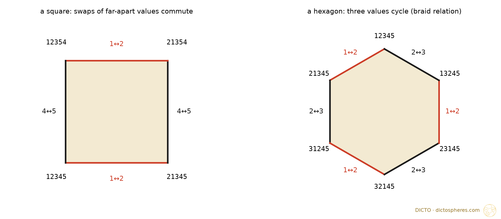
The Vacuus of a centrally symmetric polytope is the set of hyperplanes through its centre spanned by its ridges (the faces one dimension below the cells), each ridge lying in exactly one; a slice is the polytope cut by one of them. The Vacuus solids of #87 are built from such central slices (there as fins, one per edge, which for these solids fill central discs): the octahedron from three squares through its centre that carry all its edges, the cuboctahedron from four hexagons. One dimension up the slices are 3D and carry the 2-faces. A 2-face of the 4D permutohedron does not pass through the centre, so together with the centre it spans exactly one 3-space through the centre: its central slice. The 4D Vacuus is the set of these slices.
A 2-face is an ordered split of the positions {1, …, 5} into three blocks B₁, B₂, B₃ of sizes (a, b, c): the positions in B₁ hold the a smallest values in any order, those in B₂ the next b, those in B₃ the largest c. Its central slice has the normal vector that takes the value c₁ = bc(b + c) on B₁, c₂ = −ac(a + 2b + c) on B₂ and c₃ = ab(a + b) on B₃ (it is orthogonal to (1, …, 1), constant on each block, and orthogonal to the vector of centred block sums S₁ = −a(b + c)/2, S₂ = b(a − c)/2, S₃ = c(a + b)/2, so its hyperplane passes through the face; checked against exact elimination for every 2-face).
| slices | split (a, b, c) | normal (values on B₁ | B₂ | B₃) | slice shape | edge lengths² | faces of the 4D solid carried |
|---|---|---|---|---|---|
| 30 | (1, 2, 2) | (8 | −7 −7 | 3 3) | 32 corners, 52 edges; 14 four-sided faces (2 of them squares) + 8 hexagons | eight values, 13/18 to 8 | 2 squares |
| 20 | (1, 1, 3) | (6 | −9 | 1 1 1) | truncated-octahedron type: 6 rectangles + 8 hexagons (2 regular) | 2 and 56/9 | 2 hexagons |
| 10 | (1, 3, 1) | (3 | −2 −2 −2 | 3) | 24 corners, 42 edges; 18 four-sided faces (6 squares, 12 trapezoids) + 2 regular hexagons | 2, 4, 8 | 2 hexagons |
| 5 | (2, 1, 2) | (1 1 | −4 | 1 1) | the 1:2 Truncated Octahedron (permutohedron of 1, 2, 4, 5): 6 squares + 8 hexagons | 2 and 8 | 6 squares |
Proof. The normal formula shows that a slice depends only on the blocks and the values (c₁, c₂, c₃); since c₁ > 0 > c₂, for five values two splits give the same slice only if they are reverses of each other (B₃, B₂, B₁), or, when a = c, have the same middle block (for an even number of values there is one more coincidence, Theorem 12.1). Counting: splits (1, 1, 3) and (1, 2, 2) give 5!/(1!1!3!) = 20 and 5!/(1!2!2!) = 30 slices; (1, 3, 1) and (2, 1, 2) give C(5, 3) = 10 and C(5, 1) = 5; in all 65, and 30·2 + 5·6 = 90 squares, 20·2 + 10·2 = 60 hexagons. Slices with the same split are images of one another under a permutation of the coordinates, so they are congruent. The shapes were computed in exact rational arithmetic: corners are the solid's corners on the slice and the points where edges cross it; every face proposed by a hull routine was confirmed exactly (all its corners on one plane, every other corner strictly on one side), and every shape has Euler number 2. ∎
An earlier floating-point count split the 30 congruent slices of the first row into several apparent types; the exact computation above supersedes it.
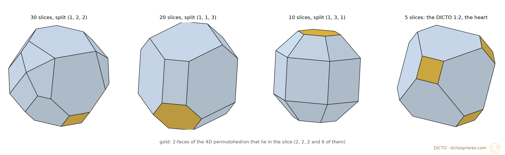
The five slices of the last row are the slices pi = 3: the middle value held in one place while the other four take 1, 2, 4, 5 in every order. Each is the 3D permutohedron of the values 1, 2, 4, 5: the 1:2 Truncated Octahedron, a truncated octahedron in shape (the same faces meeting in the same way as Archimedes', but not his equal-edged solid) with squares of side 1 and hexagons whose sides are 1 and 2 in turn (√2 and 2√2 in these coordinates), and it carries the six squares of the 4D solid in which the middle value stays put. These five are the heart of the Vacuus (Figure 7.4; the orderings of 1, 2, 4, 5 on the solid are drawn in Figure 1.2). Sweeps of sections parallel to a cell, which pass through such a slice, are known (J. Bowers; Galoomba, Polytope Wiki); we found none that names the central one as the permutohedron of 1, 2, 4, 5 or shows the five together.

Proof. A point lies in the permutohedron exactly when its coordinates sum to 15 and its k largest coordinates sum to at most 5 + 4 + … (the k largest values), for every k (majorization; Rado 1952, after Hardy, Littlewood and Pólya). With pi = pj = 3 and the other three q₁, q₂, q₃ summing to 9, these conditions reduce to 1 ≤ qm ≤ 5: a hexagon with corners the orders of (1, 3, 5), each at distance √8 from the centre and from its neighbours. The plane meets no corner or edge of the solid; its six corners are where it pierces 2-faces, which was confirmed exactly by intersecting the plane with all 150 faces. Three conditions pi = pj = pk = 3 leave q₁ + q₂ = 6 with 1 ≤ q ≤ 5, a segment; four leave the centre. ∎

The heart nests the dimensions inside one another: the 4D permutohedron of 1, …, 5 holds at its centre, five times, the 3D permutohedron of the four values that remain when the middle one is taken out; in the same way the hexagon of the orders of 1, 2, 3 holds the segment between the orders of 1 and 3. This works whenever the number of values is odd, so that there is a middle value to hold still. (For any value v the hyperplane pi = v meets no edge inside it, since an edge changes two coordinates from k, k + 1 to k + 1, k through non-integers; so the slice pi = v is the permutohedron of the other n − 1 values, and it passes through the centre exactly when v is the middle value.)
The heart of the 4D Vacuus is the permutohedron's own: none of its slices is a mirror. The rest of this chapter retells #107, which asks the same question of every polytope built from a reflection group, the Queens (the 600-cell and the 120-cell) among them, and answers it by one rule read off the group's chain, the Mirror Law (which faces of a polytope built from a reflection group lie on the group's mirrors). The rule decides which faces lie on mirrors, the fixed places of the group's reflections; Book Eight, The Platonic Solids, applies it to the five solids (its Chapter 4, a retelling), and this chapter is its home.
A finite reflection group in n dimensions is generated by reflections in n mirrors whose unit normals α1, …, αn are its simple roots; the mirrors of the group are the hyperplanes orthogonal to its roots, and every root is a combination of simple roots whose coefficients are all ≥ 0 or all ≤ 0 (Humphreys 1990, §1.3). Its Coxeter diagram joins nodes i, j whose mirrors meet at angle π/m, m ≥ 3, by a bond labelled m. The groups here have diagrams that are chains: B3 4–3 (the cube), H3 5–3 (the icosahedron), A4 3–3–3 (the 5-cell), B4 4–3–3 (the tesseract), F4 3–4–3 (the 24-cell) and H4 5–3–3 (the Queens).
Wythoff's construction places a seed point x with labels λi = αi · x ≥ 0 and takes the hull of its images. The nodes with λi > 0 are the ringed nodes. Its faces are the images of the faces FJ = hull(WJ x), where WJ is generated by the reflections of a node set J whose every connected piece contains a ringed node (Coxeter 1973; Champagne, Kjiri, Patera and Sharp 1995). The orbit study of 11 November read these seeds back from the corners of the solids of the series: the Queens' path is the seed sliding along the H4 chain, from the 120-cell (1, 0, 0, 0) through the truncated 120-cell (1, 1, 0, 0), the bitruncated 600-cell (0, 1, 1, 0) and the truncated 600-cell (0, 0, 1, 1) to the 600-cell (0, 0, 0, 1); the golden loop of DICTONIC (the truncated octahedra T(x) of Chapter 3, which fill space in pairs) is the B3 seed (0, x, 1).
Proof. The face FJ lies in the affine space x + span(αJ), so the hyperplane through the centre that contains it is span(x, αJ), and its other faces of type J are images of FJ, which carry mirrors to mirrors. That hyperplane is a mirror exactly when its normal is a root, that is, when some root r is orthogonal to x and to every αj, j ∈ J. Write r = Σ cl αl, all cl of one sign. Then r · x = Σ cl (αl · x) after expressing x in the basis dual to the simple roots, which is Σ λl cl; with λl > 0 on the ringed nodes and every cl of one sign, this vanishes exactly when cl = 0 on every ringed node, so that r is a root of the unringed nodes. ∎
The law was checked against direct measurement, the normal of span(x, αJ) compared with every root, for every seed of zeros and ones and every face type in A3, B3, H3, A4, B4, F4 and H4: 228 cases, no disagreement (mirror_law.py).
Proof. A regular polytope has one ringed node at an end of the chain, node 1 say, and one face type J = {1, 2} (in four dimensions); node 4 is unringed and α4 is orthogonal to α1 and α2. So every face lies on a mirror. Every mirror carries the same number of faces because the group moves any mirror to any other (its roots form one orbit), so 1200 / 60 = 20 and 720 / 60 = 12; that no other slice carries a face, and that both Queens use all 60 mirrors, was checked by computing the central hyperplane of every face (mirror_check.py). ∎
Proof. The face types are {1, 2}, {2, 3} and {3, 4}; the unringed nodes 1 and 4 are not joined, so their only roots are ±α1 and ±α4. α4 is orthogonal to α1 and α2, and α1 to α3 and α4, so the end faces lie on mirrors (Theorem 7.3); neither is orthogonal to both α2 and α3, since node 1 is joined to 2 and node 4 to 3, so the middle faces lie on none. A middle face lies between a cell of type {1, 2, 3} and one of type {2, 3, 4}; they are congruent when the chain reads the same from both ends (A4 3–3–3, F4 3–4–3) and differ otherwise. ∎

| stage (seed) | 2-faces | on the 60 mirrors, on each | on no mirror |
|---|---|---|---|
| 600-cell (0, 0, 0, 1) | 1200 triangles | 20 triangles | none |
| truncated 600-cell (0, 0, 1, 1) | 2400 triangles, 1200 hexagons | 20 hexagons | the 2400 triangles |
| bitruncated 600-cell (0, 1, 1, 0) | 1200 triangles, 720 pentagons, 2400 hexagons | 20 triangles and 12 pentagons | the 2400 hexagons |
| truncated 120-cell (1, 1, 0, 0) | 2400 triangles, 720 decagons | 12 decagons | the 2400 triangles |
| 120-cell (1, 0, 0, 0) | 720 pentagons | 12 pentagons | none |
Each row follows from Theorem 7.3 (for the truncated 600-cell, the unringed nodes 1 and 2 give the roots of the pentagon group, and α1 is orthogonal to the hexagons' nodes 3, 4 but no root of nodes 1, 2 is orthogonal to the triangles' nodes 2, 3) and was measured face by face (vacuus_queens.py: every face's central hyperplane, grouped and classed under all 14 400 symmetries). The faces on no mirror are scattered: computed, they lie two on each of 1200 central slices. At the bitruncated 600-cell the hexagons on no mirror are the faces where a truncated tetrahedron meets a truncated icosahedron: the faces of the exchanges in #104's scutoid tissue. The faces between like cells stand on the mirrors; the faces of exchange stand off them.
Pointer. The Queens themselves, the 600-cell and the 120-cell and the stages between them, are the subject of Book Ten, Alicia in Wonderland: The Red & White Queens (#63, #65, #76); this section is the home of their shared mirrors, and the balance law between them is in Chapter 9.
| chain | middle (0, 1, 1, 0) | on the mirrors | on no mirror (middle bond) |
|---|---|---|---|
| A4 3–3–3, 10 mirrors | bitruncated 5-cell: 30 corners, 10 truncated tetrahedra | 20 triangles | 20 hexagons |
| B4 4–3–3, 16 mirrors | bitruncated tesseract: 96 corners, 8 truncated octahedra, 16 truncated tetrahedra | 32 triangles (between truncated tetrahedra), 24 squares (between truncated octahedra) | 64 hexagons, between the two kinds |
| F4 3–4–3, 24 mirrors | bitruncated 24-cell: 288 corners, 48 truncated cubes | 192 triangles | 144 octagons |
| H4 5–3–3, 60 mirrors | bitruncated 600-cell: 3600 corners, 120 truncated icosahedra, 600 truncated tetrahedra | 1200 triangles, 720 pentagons | 2400 hexagons, between the two kinds |
Each middle was built from its seed and its faces measured (vacuus_middles.py; the H4 row repeats Section 7.7 as a control). In the self-reading chains A4 and F4 every cell is alike, yet the middle-bond faces still leave the mirrors: the law belongs to the bond, not to the cells.
Proof. Node 1 is the only unringed node; α1 is orthogonal to α3 (nodes 1 and 3 are not joined) but not to α2. ∎ This is the split seen in the 3D Vacuus of the 1:2 Truncated Octahedron (Figure 12.1; #105, Figure 4) and measured on the Icosaxes and the Unborn Axes: three discs of four edges, the other edges each on a central plane of its own with one partner.
None of the 65 slices is a mirror of the permutohedron's symmetry group: its seed (1, 1, 1, 1) rings every node of the chain 3–3–3, so by the Mirror Law (#107, Theorem 1) no 2-dimensional face lies on a mirror. The five heart slices of Theorem 7.2 carry six faces each; every other slice carries one face and its opposite, two. Across all the polytopes of the seven reflection-group chains, slices off the mirrors that carry three or more faces occur in four dimensions only here and in the runcinated 5-cell, which shares these five (#108, Observation 4): the heart of the 4D Vacuus is the permutohedron's own, not its group's.
The Mirror Law accounts for every Vacuus slice that is a mirror. Chapter 7 met the other kind: the 4D permutohedron's seed rings every node, so none of its faces lies on a mirror, yet five slices through its heart carry six faces each. Across all the reflection-group polytopes such slices off the mirrors occur only in the quasi-regular cuboctahedron and icosidodecahedron and, in four dimensions, in the permutohedron and the runcinated 5-cell (#108, Observation 4). In three dimensions the Mirror Law also reads the Dogstar of #42 (Hart's stellation 8 of the dodecahedron): 114 of its 138 edges lie on 15 central discs, the 15 mirrors of the icosahedral group.
Permutohedra inside the Queens' cousins. The permutohedra of four values appear inside other four-dimensional solids too. In the tesseract trimmed by its polar 16-cell, K ∩ μK*, at μ = φ², 8 of the 24 cells are Icosaxes, the permutohedron of four values at the golden stop of Chapter 3, and the other 16 are Lesser Golden Cut Tetrahedra: every cell is a golden cut (#91; home Book Nine, The Golden Ladder, Chapter 8).
The 4D permutohedron is the web of swaps: its squares say that far-apart swaps commute, its hexagons that three values braid, and its Vacuus carries all of them on 65 central slices, five 1:2 Truncated Octahedra at its heart. Now sweep it.
DICTO: #105 DICTO 1:2 Truncated Octahedron: The 4D Vacuus of the Permutohedron (Sections 1–3, Figures 1–4); #107 The Vacuus of the Queens (Theorem 1); #108 The Atlas of the Chains (Observation 4); #87 (the Vacuus). M. Koca, N. O. Koca, M. Al-Mukhaini and A. Al-Qanobi, arXiv:1506.04600 (2015).
DICTO: #107 The Vacuus of the Queens (Sections 1–5, Figure 1); #108 The Atlas of the Chains (Observation 4); #63, #65, #76 (the Queens); #87 (the Vacuus); #42 (Dogstar); #104; #105. H. S. M. Coxeter, Regular Polytopes, 3rd ed., Dover (1973); J. E. Humphreys, Reflection Groups and Coxeter Groups, Cambridge University Press (1990); B. Champagne, M. Kjiri, J. Patera and R. T. Sharp, Description of reflection-generated polytopes using decorated Coxeter diagrams, Can. J. Phys. 73 (1995) 566–584.
Sweep the solid of all orders of five values and its slice is a tissue of cells that are born, swap neighbours and die: 26 births, 66 swaps, 26 deaths, counted by the Eulerian numbers
Re-edited from #104 (DICTO DOI: 10.5281/zenodo.24111864), Section 1 and Theorem 1, with Proposition 8.1 of the draft. The 3D warm-up and the reading of the swap as the one self-reverse event are new in this book.
Pass a flat sheet up through a solid and watch the slice. In three dimensions the slice is a polygon that gains and loses sides. In four dimensions the slice is a whole solid whose faces are pieces of the cells, a tissue, and as the sheet rises cells are born, swap neighbours and die, like the cells of a growing organ. This is the scutoid tissue of #104, the centre of the book: the solid of all orders of five values, swept, is a tissue of 26 births, 66 swaps and 26 deaths.
Take Kelvin's cell, the 24 orders of 1, 2, 3, 4, and a height u · x with u1 < u2 < u3 < u4. Each corner has three edges, and an edge goes down when it swaps a value k standing to the left of k + 1 (the argument of Proposition 8.1 below). So the corners with 0, 1, 2, 3 edges below number 1, 11, 11, 1, the Eulerian numbers of four values. A slice is a polygon whose sides are cut from the faces of the solid. At a corner with one edge below the polygon gains a side and two of its sides stop meeting; at a corner with two below it loses a side and two sides begin to meet (Figure 8.1). In three dimensions the gain and the loss of a contact come at different corners; one dimension up they come together.
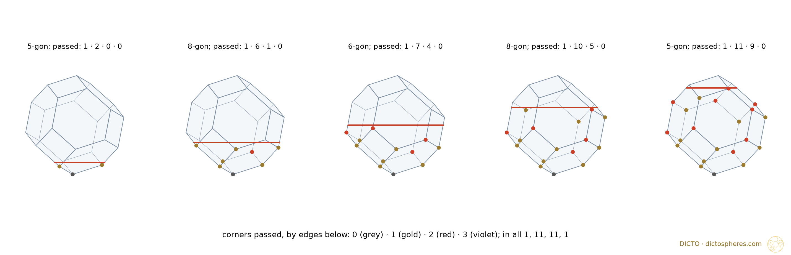
| edges below (values k standing left of k + 1) | corners | the orders |
|---|---|---|
| 0 | 1 | 4321 |
| 1 | 11 | 1432 2143 2413 2431 3214 3241 3421 4132 4213 4231 4312 |
| 2 | 11 | 1243 1324 1342 1423 2134 2314 2341 3124 3142 3412 4123 |
| 3 | 1 | 1234 |
Table 8.1. The 24 orders of Kelvin's cell sorted by their edges below in a sweep with u1 < u2 < u3 < u4. The lowest corner is 4321 and the highest 1234; reading an order backwards moves it between the rows 1 and 2, as running the sweep backwards does.
Proof. Exchanging k (at position p) and k + 1 (at position q) changes f by up − uq, negative exactly when p < q. A corner with two edges below is where the slice makes an exchange of neighbours (#104, Theorem 1); with one, a cell is born; with three, one dies. The counts are the Eulerian numbers, checked by listing all 120 orderings for three directions u (swap_orderings.py). ∎
A 4-polytope is simple if each corner lies in exactly four cells (equivalently, four edges). Take a generic height, a linear function with different values at all corners. Slicing at height t gives a 3-polytope whose faces are the cross-sections of the cells that cross the hyperplane; two cells are neighbours in the slice when their shared 2-face crosses it. At a simple corner the faces through it correspond to the subsets of its four edges, and a face has the corner as its top iff all its edges there go down.
Proof. Between corner heights the slice keeps its combinatorics. At a corner v let e₁, …, e₄ be its edges and Fj the cell not containing ej. Just below v the slice cuts the downward edges, just above the upward ones. i = 1 (e₁ down): above v the slice cuts e₂, e₃, e₄, and the cell containing all three, F₁, appears as a small triangle (v is its lowest corner). i = 2 (e₁, e₂ down): below v the slice's local edge joins the crossings of e₁ and e₂ and lies in F₃ ∩ F₄, the 2-face spanned by e₁ and e₂; v is its top, so above v the two cells no longer share a face crossing the hyperplane (two cells of a polytope share at most one 2-face); symmetrically F₁ ∩ F₂, spanned by e₃, e₄, has v as its bottom and F₁, F₂ begin to touch. No other face through v has v as top or bottom, so nothing else changes. i = 3 is i = 1 upside down. The number of corners with i downward edges is hi, independent of the generic height (the Morse-type count of the h-vector, with hi = h4−i; McMullen; Ziegler, Lectures on Polytopes, Lecture 8; Buchstaber–Panov, Toric Topology, ch. 1). ∎ In the dual triangulation of the slice's boundary (one vertex per cell) the three events are the bistellar flips 1-3, 2-2 and 3-1 (Pachner; Lickorish); the theorem is classical in that language.
Classical and new. Classical: that the number of corners of index k is hk for every generic linear function (McMullen 1970; the line shellings of Bruggesser and Mani 1971; Ziegler, Lecture 8), the Dehn–Sommerville relations, and the bistellar moves. New here: the reading of the three indices as the birth, scutoid swap and death of the cells of a tissue, with h₂ counting the swaps; the counts of Theorem 9.1; the balance law, Theorem 9.3; and the walls of Chapter 11.
What is new. In the sources checked (listed in #104: MathWorld and Wolfram on the scutoid, the Buchstaber invariant of simple polytopes, The Best Ways to Slice a Polytope, Izmestiev, Klee and Novik on simplicial moves of balanced complexes, and web searches of 10 and 11 November 2026 for scutoids in four and higher dimensions and for sweeps of simple polytopes by bistellar flips), no earlier work reads the sweep of a polytope as a scutoid tissue or links scutoids to the h-vector. The counting of corners by the h-vector is classical (McMullen; Bruggesser and Mani); the reading as births, swaps and deaths is #104's.
For the 4D permutohedron Theorem 8.2's three moves fall on the orderings (Proposition 8.1): a corner with one edge below, where one value k stands to the left of k + 1, gives a birth (26 of them); two, an exchange of neighbours (66); three, a death (26); with the first and last corner, the Eulerian numbers 1, 26, 66, 26, 1 are its h-vector. Its 30 cells are of two types, ten permutohedra and twenty hexagonal prisms, and every corner sees one cell of each of the four node types of the chain, two permutohedra and two hexagonal prisms (#108, Section 4: the omnitruncated 5-cell), so the balance law below (Theorem 9.3: each kind of swap is matched by its reverse) applies to it as well: its three kinds of exchange are each matched by their reverses, 6, 16 and 11 each way.
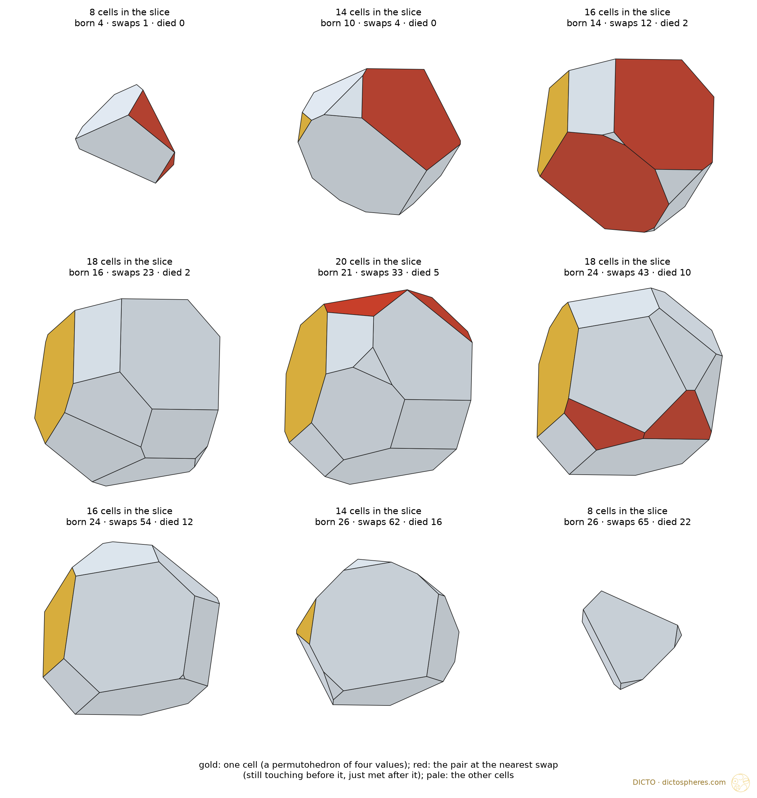
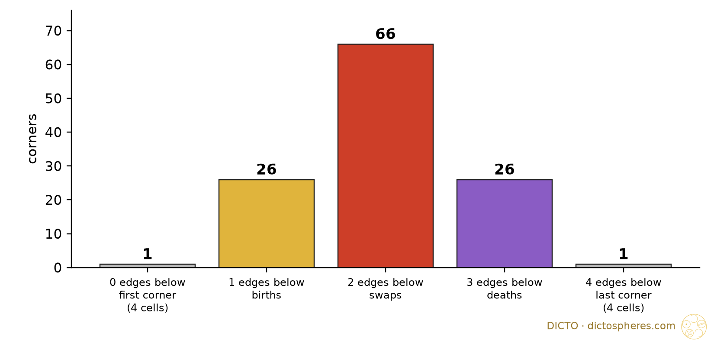
Run the sweep backwards, by the height −u. Every edge that went down now goes up, so a corner with i edges below becomes one with 4 − i below: every birth becomes a death and every death a birth. A swap stays a swap: the pair of cells that let go now meets, and the pair that met now lets go. Among the moves of a four-dimensional tissue the scutoid swap is the one event that is its own reverse, and Theorem 8.2 counts it by h2, the middle of the h-vector, in every direction. This is a law at the fixed point of a swap, the reversal of the sweep, and it holds for a stated reason: the reversal fixes only the middle index (studies/2026-11-13-swaps-and-fixed-points, row 4, checked exactly for d = 2 to 7).
The self-reverse class exists only in even dimension, where the middle index i = d/2 is a whole number; and only in dimension four is it the pure swap, one contact lost and one made at a single corner. In three dimensions the contact lost and the contact gained come at different corners (the warm-up above); in five they come at the two indices 2 and 3, which are each other's reverse; in six and above the middle corners touch only lower faces (Theorem 8.2′ in Chapter 9). The scutoid swap of a tissue is a four-dimensional event.
The 30 cells of the 4D permutohedron, sliced, are a tissue: 26 births, 66 swaps, 26 deaths, the swaps the one move that is its own reverse. Is this special to the permutohedron?
DICTO: #104 Scutoid Tissues in Four Dimensions (Section 1, Theorems 1, 1′, 2, 4, Lemma 5, Figures 1–3); #108 The Atlas of the Chains (Theorems 1 and 3, Section 4); Proposition 8.1 (from the draft's Chapter 5). P. McMullen, The maximum numbers of faces of a convex polytope, Mathematika 17 (1970) 179–184; H. Bruggesser and P. Mani, Shellable decompositions of cells and spheres, Math. Scand. 29 (1971) 197–205; P. Gómez-Gálvez et al., Nature Communications 9 (2018) 2960, doi:10.1038/s41467-018-05376-1.
Every simple 4-polytope, swept, is a scutoid tissue counted by its h-vector; between the Queens the swaps balance, 601 each way
Re-edited from #104 (DICTO DOI: 10.5281/zenodo.24111864), Section 1, Theorems 1′, 2, 4 and Lemma 5, and #108 (DICTO DOI: 10.5281/zenodo.24126802), Theorems 1 and 3, with #63, #65 and #76.
The permutohedron is not special. Every solid in four dimensions with four cells at each corner, swept by a moving slice, is a tissue of births, swaps and deaths, and the numbers are the solid's h-vector, the same in every direction. Between the two Queens, the 600-cell and the 120-cell, the swaps balance exactly: as many trade a contact of one kind for the other as the other way round, 601 each way.
Theorem 8.2 of Chapter 8 was stated for every simple 4-polytope, and its proof used nothing of the permutohedron but its four cells at a corner. This chapter carries it through every dimension and along the road between the Queens.
Remark (the g-theorem in tissue terms). For a simple 4-polytope the g-theorem (McMullen's conditions, proved by Stanley 1980 and Billera and Lee 1981) gives g₂ = h₂ − h₁ ≥ 0 and g₂ ≤ C(h₁, 2). So every generic sweep of a simple 4-polytope has at least as many swaps as births, and at most births + C(births, 2): for the three polytopes of Theorem 9.1, 366 ≥ 116, 966 ≥ 716 and 2166 ≥ 716.
Proof. A ridge Fa ∩ Fb through v is spanned by the d − 2 edges other than ea, eb; it has v as its top iff they all go down (so i = d − 2 and {a, b} are the up edges), as its bottom iff they all go up (i = 2); otherwise it crosses on both sides. ∎ Confirmation (floating point, predictions first, three random directions each): the 5-cube, h = (1, 5, 10, 10, 5, 1): 5 births, 10 contacts gained, 10 lost, 5 deaths; the 5D permutohedron (the 720 orderings of 1, …, 6), h = the Eulerian numbers (1, 57, 302, 302, 57, 1): 57, 302, 302, 57; the 4D permutohedron, (1, 26, 66, 26, 1): 26 births, 66 swaps, 26 deaths. No regularity is needed: three random simple 4-polytopes (polars of hulls of 24, 36, 54 random points near the 3-sphere, no symmetry) gave exactly the predicted (20, 57, 20), (32, 103, 32), (50, 142, 50). Remark. At a corner of a non-simple polytope the moves clump; a generic small shift of the facet hyperplanes makes any polytope simple and splits each clump into births, swaps and deaths.
Remark (the indices). In a simple d-polytope: index 1, a facet is born; index 2, a contact is gained; index d − 2, a contact is lost; index d − 1, a facet dies. Only for d = 4 do the gain and the loss share an index, and make the swap; for d = 5 they separate (2 and 3); for d ≥ 6 the indices 3, …, d − 3 touch only lower faces. For d = 3 two of them coincide the other way: index 1 is both a birth and a contact lost, and index 2 both a contact gained and a death (the slice polygon gains a side where two sides stopped meeting, and loses one where two begin to meet).
Proof. Their vertex figures are tetrahedra; h₁ = f₃ − 4 and h₂ = f₀ − 2 − 2h₁ follow from the Dehn–Sommerville relations; then Theorem 8.2. Confirmation: computer sweeps along generic directions give the predicted counts (the bitruncated 600-cell along nine directions). The four cells at the lowest corner are in the slice from the start and four remain at the top corner, so births + 4 = deaths + 4 = cells (120 = 116 + 4; 720 = 716 + 4). ∎
Proof. Six cells meet at each corner (one icosahedron and five truncated tetrahedra); the vertex figure is a pentagonal pyramid, whose graph is the wheel W₅ with 10 edges. A pure swap needs the down/up split of the vertex figure's vertices to leave exactly one edge inside each side; but the largest cut of W₅ has 7 edges (the hub with two non-adjacent rim vertices), so at least three edges lie inside the two sides, each a contact that is lost or gained. ∎ In five computer sweeps the moves were 1 ↔ 3, 2 ↔ 0 and 1 ↔ 0 clumps.
Interpretation. Biologists know the same contrast in living tissue: a T1 transition involves four cells at a point, while a rosette, five or more cells meeting at one point and resolving together, reshuffles several neighbours at once (Blankenship, Backovic, Sanny, Weitz and Zallen 2006). In that language the truncated 600-cell, with its groups of five truncated tetrahedra round each icosahedron's corner, is a rosette tissue, and the bitruncated 600-cell, one stage on, a T1 tissue.
| polytope | corners | cells | cells per corner | births | scutoid swaps | deaths |
|---|---|---|---|---|---|---|
| 120-cell (Red Queen) | 600 | 120 dodecahedra | 4 | 116 | 366 | 116 |
| truncated 120-cell | 2400 | 120 truncated dodecahedra + 600 tetrahedra | 4 | 716 | 966 | 716 |
| bitruncated 600-cell (the midpoint) | 3600 | 120 truncated icosahedra + 600 truncated tetrahedra | 4 | 716 | 2166 | 716 |
| truncated 600-cell | 1440 | 120 icosahedra + 600 truncated tetrahedra | 6 | rosette moves only: ≥ 3 contacts change at every corner (Lemma 9.2) | ||

In symmetric directions many corners share a height and the events come in batches; along cell-first the bitruncated 600-cell's pairs that let go and pairs that meet are equal in total (1782 each) and at every height where no cell appears or disappears.
Proof. With 2 W and 2 R at a corner, the pair that lets go and the pair that meets are complementary: W–W ↔ R–R or W–R ↔ W–R. Every R–R contact appears exactly once in a sweep: at the first corner (one), at the birth of an R cell after the start (one each, R cells − 2 of them) or by a W–W → R–R swap; so these swaps number (R–R faces) − (R cells − 2) − 1; by deaths the same count goes the other way. Bitruncated 600-cell: 720 − 118 − 1 = 601; the triangles check it, 1200 = 601 + 598 + 1, and 2166 − 1202 = 964. Confirmed in nine directions. ∎
Interpretation. The Queens are the two ends of a channel and this layer, where their cells meet, is where they communicate, equally in both directions.
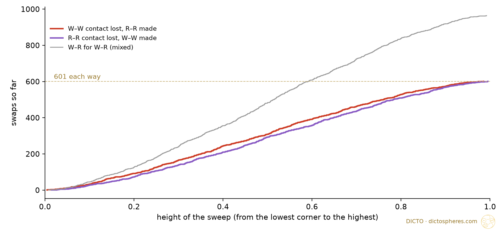


Theorem 9.3 is one case of a law for every simple 4-polytope whose corners all see the same cell types (#108, Theorem 1): every kind of exchange X → Y is matched by Y → X, in every sweep direction, with the count in(X) = NX − Σ cX + pX. At the middle of each four-node chain the balanced count is the number of independent loops of the chain's regular polytope, E − V + 1 (#108, Theorem 3): 6 for the 5-cell, 17 for the tesseract, 73 for the 24-cell and 601 for the 600-cell, the 601 of Theorem 9.3.
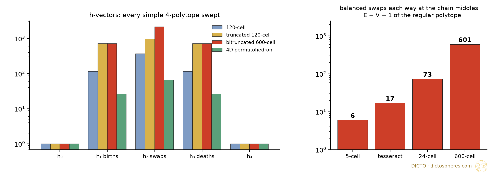
Every simple 4-polytope sweeps as a scutoid tissue counted by its h-vector, and between the Queens its swaps balance. In a simple polytope the swaps come one at a time. What happens when many crowd into one corner?
DICTO: #104 Scutoid Tissues in Four Dimensions (Section 1, Theorems 1, 1′, 2, 4, Lemma 5, Figures 1–3); #108 The Atlas of the Chains (Theorems 1 and 3, Section 4); Chapter 8 (Proposition 8.1, Theorem 8.2). P. McMullen, The maximum numbers of faces of a convex polytope, Mathematika 17 (1970) 179–184; H. Bruggesser and P. Mani, Shellable decompositions of cells and spheres, Math. Scand. 29 (1971) 197–205; P. Gómez-Gálvez et al., Nature Communications 9 (2018) 2960, doi:10.1038/s41467-018-05376-1.
Which uniform 4-polytopes sweep as clean scutoid tissues and which only in rosettes, read from the Coxeter chain; the rosettes balance by symmetry, and without symmetry they do not
New in this book, from #104 (DICTO DOI: 10.5281/zenodo.24111864), Lemma 5, and the Atlas of #108 (DICTO DOI: 10.5281/zenodo.24126802); Section 10.2 from the study of 13 November 2026.
In living tissue five or more cells sometimes meet at one point, a rosette, and then many neighbours trade at once. Solids do the same where more edges crowd into a corner than the dimension. Which solids sweep cleanly, one swap at a time, and which only in rosettes can be read straight from a short chain of numbers, the Coxeter diagram of the solid's symmetry.
In a simple 4-polytope four cells meet at every corner, and a sweeping hyperplane changes the tissue one move at a time (Chapter 8): a birth, a death, or one exchange of neighbours. Where more than four cells meet at a corner, several contacts change at once; living tissue has the same event, a rosette, where five or more cells meet at a point (Blankenship et al. 2006). Which uniform polytopes give clean tissues and which give rosettes can be read straight from the Coxeter chain.
Proof. The stabiliser of the corner x is WU. The edges at x of type i ∈ S go from x to its mirror image across node i's mirror, and their directions form the WU-orbit of the root αi; the stabiliser of αi in WU is generated by the unringed nodes orthogonal to it, U ∖ N(i). Summing the orbit sizes gives e. ∎ The count agrees with the measured number of edges at a corner for all 81 polytopes of the Atlas (all seeds of zeros and ones of A3, B3, H3, A4, B4, F4, H4).
Example. For a regular polytope only an end node is ringed, so e = |WU| / |WU ∖ N|: the 600-cell has e = 120/10 = 12 (its corner figure is the icosahedron), the 120-cell e = 24/6 = 4 (simple). For the seed (0, 1, 0, 0) node 2 has unringed neighbours on both sides and e = 2 · 6 / 2 = 6 in B4, F4 and H4: not simple, although each unringed piece alone looks harmless.
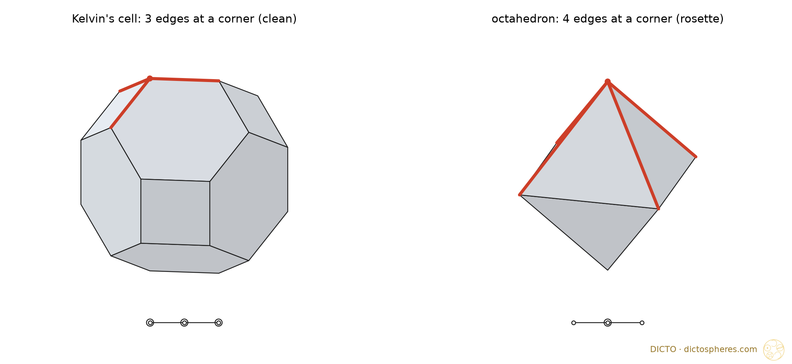
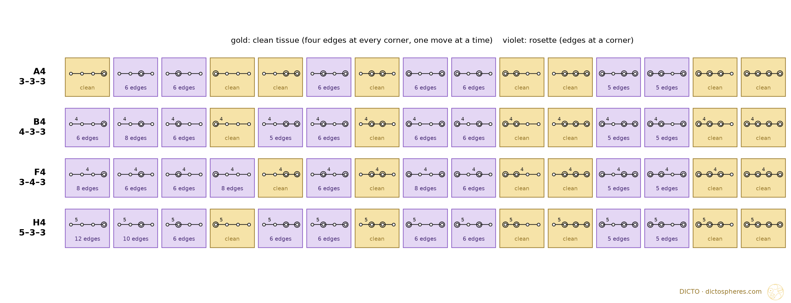
| group | clean (simple): seeds | rosettes: seeds (edges at a corner) |
|---|---|---|
| A4 | 5-cell, truncated, bitruncated, cantitruncated, omnitruncated (the 4D permutohedron) | rectified (6), cantellated (6), runcinated (6), runcitruncated (5) |
| B4 | tesseract, truncated tesseract, bitruncated tesseract, cantitruncated tesseract and 16-cell, omnitruncated | 16-cell (6), rectified tesseract (6), 24-cell as rectified 16-cell (8), truncated 16-cell (5), cantellated (6), runcinated (6), runcitruncated (5) |
| F4 | truncated, bitruncated, cantitruncated, omnitruncated 24-cell | 24-cell (8), rectified (6), cantellated (6), runcinated (8), runcitruncated (5) |
| H4 | 120-cell, truncated 120-cell, bitruncated 600-cell, cantitruncated 120- and 600-cell, omnitruncated | 600-cell (12), rectified 600-cell (10), truncated 600-cell (6), rectified 120-cell (6), cantellated (6), runcinated (6), runcitruncated (5) |
Read from Theorem 10.1 and the Atlas of the Chains (#108, Section 4: the 81 polytopes of the reflection-group chains). Every clean tissue obeys the balance law of Chapter 9 (each kind of swap matched by its reverse; #108, Theorem 1). The truncated 600-cell, a rosette tissue with six edges at a corner, has no pure swap: at every corner at least three contacts change at once (#104, Lemma 5).
Every edge of a Wythoff polytope points along a root, so the height that sweeps it matters only through its chamber, and every sweep has the same ledger of corner events (Lemma 10.2). Reversing the height reverses every event; hence (Theorem 10.3) in every rosette tissue of the Atlas each rosette move is matched by its reverse, class by class, in every direction: the truncated 600-cell trades one contact between truncated tetrahedra for three truncated-tetrahedron–icosahedron contacts at 118 corners and back at 118. The law needs the symmetry: a 16-cell with its corners moved slightly has a sweep with two corners where four cells are born at once and only one where four die. Its face lattice, toric h-vector and cd-index are those of the regular 16-cell, so no combinatorial invariant decides the balance; what every rosette tissue keeps is conservation: each contact is made once and lost once, each cell born once and dies once, and the corner-by-corner sum of these is the toric h-vector of the dual (Stanley; Lee 2011).
Words. At a corner of a generic sweep let D be its edges going down and U those going up. A contact (2-face) at the corner is lost there when both its edges at the corner go down and made when both go up; a cell dies when all its edges at the corner go down and is born when all go up. The event at the corner records |D|, the kinds of contacts lost and made and the types of cells dying and born (kinds and types as in #108); its reverse swaps D and U. The ledger of a sweep is the multiset of its events.
Proof. The edges at the corner wx are images of the segments from x to six for ringed nodes i, and six − x is a multiple of the root αi. Two heights in one chamber give every edge the same sign. For g in W the event at gv for the height gu is the image under g of the event at v for u, and g keeps cell types and contact kinds, which are W-orbits; W is transitive on chambers. ∎
Proof. Sweeping by −u turns the down edges into up edges at every corner, so the ledger of −u is the reverse of the ledger of u; by Lemma 10.2 the two ledgers are equal. ∎ For the simple rows this is a second proof of the balance law of Chapter 9 for the Wythoff polytopes (the flow argument of #108 is still needed for simple polytopes without symmetry). Lemma 10.2 and Theorem 10.3 were found stated nowhere in the sources checked; they are elementary, likely folklore for the permutohedron, and new only in the reading as tissues. Checked exactly on all 34 rosette rows of A4, B4, F4 and H4.
| corner | (10, 2, −1, 0) | (−10, 1, 0, 1) | (1, 8, −2, 0) | (1, −10, 1, −1) | (0, −2, 10, 2) | (−1, 2, −9, −2) | (−1, −2, 1, 9) | (−2, −1, 1, −8) |
|---|---|---|---|---|---|---|---|---|
| height | −30 | 31 | −3 | −4 | 2 | 1 | 12 | −2 |
| down edges | contacts lost | made | cells die | born | corners | corners with the reverse |
|---|---|---|---|---|---|---|
| 0 | 0 | 12 | 0 | 8 | 1 | 1 (6 down) |
| 1 | 0 | 8 | 0 | 4 | 2 (at −4, −3) | 1 (5 down, at 12) |
| 2 | 1 | 5 | 0 | 2 | 0 | 2 (4 down, at 1, 2) |
| 3, a path | 2 | 2 | 0 | 0 | 1 | 1 (itself) |
Same face lattice means the same toric h-vector (1, 12, 14, 12, 1), flag vector and cd-index (Bayer and Klapper) as the regular 16-cell, which balances in every direction; so balance is geometric, not combinatorial. For every polytope with the face lattice of the 16-cell the counts of the eight kinds of corner obey N1 + N5 = NQ + 2 (corners where four cells are born or die = pure double exchanges + 2), and the sweep balances exactly when N1 = N5 (studies/2026-11-13-rosette-balance, Proposition 6).
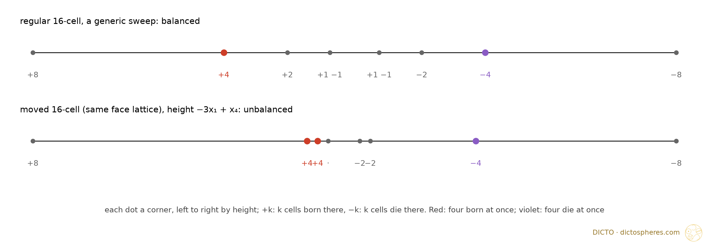
The Coxeter chain tells clean tissues from rosettes; every rosette move is matched by its reverse when the solid has its symmetry, and without symmetry the balance fails. In crystals, the trades of neighbours become walls.
DICTO: #104 Scutoid Tissues in Four Dimensions (Lemma 5); #108 The Atlas of the Chains (Theorem 1, Section 4); Chapter 9. Section 10.2: studies/2026-11-13-rosette-balance (commit d8331af2); R. P. Stanley, Generalized h-vectors, intersection cohomology of toric varieties, and related results (1987); C. W. Lee, Sweeping the cd-index and the toric h-vector, Electron. J. Combin. 18 (2011) P66; M. M. Bayer and A. Klapper, A new index for polytopes, Discrete Comput. Geom. 6 (1991) 33–47. J. T. Blankenship, S. T. Backovic, J. S. P. Sanny, O. Weitz and J. A. Zallen, Multicellular rosette formation links planar cell polarity to tissue morphogenesis, Developmental Cell 11 (2006) 459–470, doi:10.1016/j.devcel.2006.09.007. H. S. M. Coxeter, Regular Polytopes, 3rd ed., Dover (1973); J. E. Humphreys, Reflection Groups and Coxeter Groups, Cambridge University Press (1990).
The Swap Rule of close packing below s = 1/4, proved stacking by stacking, and its walls as swaps of neighbours one dimension up
Re-edited from #104 (DICTO DOI: 10.5281/zenodo.24111864), Sections 2 and 3, which prove below s = 1/4 the Swap Rule of #61 (DICTO DOI: 10.5281/zenodo.23682596); Section on cones of heights from the draft The Permutohedron Family, Section 9.
Stack layers of balls as greengrocers stack oranges. Each layer sits in the hollows of the one below, in one of three positions, A, B or C, and a layer is c if its two neighbours differ and h if they are alike. The holes between the balls divide space into pieces, and the Swap Rule of #61 (a law on the volumes of the pieces, V(c|h) + V(h|c) = V(c|c) + V(h|h)) says how those pieces add up. Where the pieces change, a single cell in four dimensions trades its neighbours: a 4D scutoid.
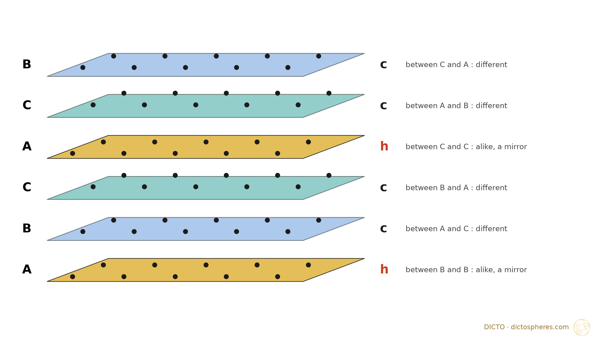
The swaps of neighbours of Chapters 6, 8 and 9 have a physical home: the close packing of spheres, where #61's Swap Rule says which pieces each layer holds. This chapter gives #104's proof of the rule below s = 1/4 and reads its walls as exchanges of neighbours one dimension up.
Setup (#61, The Swap Rule). Layers of balls (spacing 1 in a layer) are stacked in a word in A, B, C with layer distance d, d² = (2/3)s (s = 1: close packing). Between two layers lie octahedral and tetrahedral holes; space is divided among the holes by power distance |x − p|² − w, w = 0 for an octahedral hole and w = λ for a tetrahedral one, with λ in #61's range −1/4 − s/8 ≤ λ ≤ 3s/8 (for s ≤ 1/4). A layer is c if its two neighbours differ, h if they are equal. A hole's piece in the gap between layers k and k + 1 is keyed by its role (octahedral, or one of the two tetrahedral kinds) and the types of the four layers k − 1, k, k + 1, k + 2; the types of the two inner layers are (t | t′), the two outer ones the context. V(t | t′) is the piece's volume with the context held fixed. #61 proved V(c|h) + V(h|c) = V(c|c) + V(h|h) when s ≥ 1/4.
The four-layer condition. A piece's context is its role (octahedral, or one of the two tetrahedral kinds) together with the types, c or h, of the four layers k − 1, k, k + 1, k + 2 round its gap. A stacking satisfies the four-layer condition at (s, λ) when each of its pieces is determined, up to a motion, by its context. The six stackings below contain all sixteen contexts, and their pieces are computed directly; for any other stacking Theorem 11.1 assumes the condition. Below λ = −9s/8 it fails: a piece reaches two gaps.
Proof (exact, computer-assisted). s enters only the vertical metric, so every power-diagram plane has a normal linear in s and an offset linear in s and λ; for fixed s only the right-hand sides carry λ, so corners and slacks are affine in λ, and a slack is non-negative on a cell of the map iff it is on the cell's two bounding walls: one-variable rational functions of s. On each cell of the map, built at one sample point for the six words, every corner was re-solved symbolically over Q(s) and every plane's slack proved non-negative on the whole cell (Bernstein sign tests over the s-interval, exact root counting otherwise; 35,561,184 exact sign checks); the volumes and D(s, λ) agree with the closed forms as rational identities. Neighbourhood. The cells were built from all sites within squared distance 24 (every plane's slack proved non-negative on the whole cell). No farther site can cut a cell: for any point x of a hole's cell, the octahedral holes of the nearest gap form a triangular lattice of spacing 1 at vertical offset ≤ d/2, so the nearest of them, pk, has |x − pk|² ≤ 1/3 + 1/24 = 3/8, and hence |x − pi|² ≤ 3/8 + |λ| < 0.67: every cell lies within ρ < 0.82 of its site, and (√24 − 0.82)² − 0.82² > 15.9 exceeds every weight difference |λ| ≤ 0.29. The walls were first found exactly along λ (the Hopscotch walk: each wall is a root where a corner meets a plane) at six spacings. ∎
Domain. s in [1/8, 1/4], λ from −9s/8 to 3s/8 (from −(4 − s)/24 when s ≤ 1/7), the six stackings ABC, AC, ACBC, ACABC, ACBCAC, ACBABC, every site within squared distance 24; open: λ below −9s/8 and s below 1/8. Exact and floating-point steps. Floating point is used only to propose each cell's structure at one sample point; every corner is then re-solved over Q(s), every slack is a rational function, and every sign is decided exactly (Bernstein bounds over the s-interval, exact root counting otherwise). No floating-point step decides a sign; the closed forms are checked as rational identities. Environment. Python 3.14.4 with SymPy 1.14.0 (DomainMatrix over Q(s)), Ubuntu 26.04 Linux. Certificates. The five cell logs data/cells2-D24/{b, c1, c2, d1, d2}.txt in studies/2026-11-09-b1-walls (MD5 f08927c4…, f3bbe3cf…, be695d8f…, 2b7beddb…, 9b1832d0…), each ending "FINAL ok (cell X proved for all s in …, neighbourhood D² = 24)". Re-run. From a clean checkout: cd studies/2026-11-09-b1-walls/scripts && D2=24 python -u cells61.py; about 45 minutes with the five cells in parallel; it ends "FINAL ok". This was done on 11 November 2026 from a clean copy of the repository, and every cell log came out identical to the original apart from timings.

What happens at the walls. The λ-stack of the 3D power diagrams is a 4D cell complex; in a generic weight walk its 3D slices change by the 3D T1 moves of Chapter 8, Theorem 8.2′ for d = 5, one contact gained or one lost at a time. At #61's walls the lattice's central symmetry forces a loss and a gain onto one point: six cells meet there and the four exchanging holes lie in one plane with a common midpoint (a degenerate 4-4 flip, the rosette kind of event, not Chapter 8, Theorem 8.2's pure swap); in that plane the exchange is a 2D scutoid swap. At s = 1/5, summed over the six words' unit cells, the faces exchanged are: at −(4 − s)/24, 57 between octahedral holes in one layer for 57 between tetrahedral holes in one layer; at −5s/8, 21 between octahedral holes two layers apart for 21 tetrahedral; at −s/8, 126 for 126 between neighbouring layers; at −9s/8, 31 long octahedral contacts lost and 173 gained. The Swap Rule switches on at the moment the last octahedral contact across a whole layer lets go.
Each hole's power cell, stacked over λ in an interval [λa, λb], is a convex 4-polytope {(x, λ) : n·x ≤ b₀ + b₁λ, λa ≤ λ ≤ λb} whose 3D slices are the cells. Such a 4-cell, whose 3D slices change neighbours at a wall where cells stop touching and others start, is a 4D scutoid (#104). At s = 1/5, across the wall λ = −1/8, 25 holes (of the six words) have 4D cells with faces that end or begin exactly at the wall: the octahedral cells' faces towards octahedral holes two layers away end there, the tetrahedral cells' new faces begin there (Figure 11.3).


Theorem 11.1 is one stone of a larger study that the gap triage of the series called a boulder: walls along the sliders, exactly. Each slider of an earlier paper whose events had been located in floating point is made a symbol, and its walls are read as exact roots: the method called Hopscotch (the slider's parameter a symbol, every wall an exact root), used in Section 11.1. Four sliders were read; where each stands (studies/2026-11-09-b1-walls, exact runs ending FINAL ok, logs kept; the cube and dodecahedron runs in studies/2026-11-13-paradigm-exact, data/b1-logs):
| slider | result | status |
|---|---|---|
| #86, the tower move along the weight walk | for both towers every combinatorial type is fixed between exact walls on each chamber of the walk (walls −7/24, 1/24, 1/8 for the first; twelve walls from −5/72 to 19/72 for the second), and the check of #86 holds at every wall and on every hop (15 + 47 exact checks) | exact |
| #61, the Swap Rule below s = 1/4 | Theorem 11.1 | computer-assisted exact proof; open below λ = −9s/8 and below s = 1/8 |
| #80, the cube chain of the growth rule of #80, depth s | closes with period 4 entered at step 3 for every s in (1/2, 3/5), and entered at step 1 for every s in (3/4, 1), each an identity in s; between 3/5 and 3/4 no closure was found in twelve steps | exact on the two intervals; the window between them numerical |
| #81, the dodecahedron chain | period 4 from step 0, gain (35 − 15√5)² per cycle, for every s in [2/5, 1]; period 2 from step 0 for every s in [3 − φ, 3/2]; on (5/4, 3 − φ) the hop is exact but the closure (period 4 from step 1) only numerical; the chain stops closing above s* = 1.08734394 ± 4·10−8 and grows without bound up to about 5/4 | exact on the two intervals; s* and the window numerical, the exact form of s* open |
So the boulder is moved but not cleared: every slider has exact walls on the stretches that were read, and what is left is the same kind of stretch in each, where pieces or steps reach further than the method in use can follow (the clash zone of Theorem 11.1, the windows of #80 and #81).
Why are the walls of Figure 11.2 straight lines? Because the weight walk is a walk in a cone of heights, the same kind of space as the permutohedron's family of Chapter 14. A power diagram of sites pi with weights wi is the projection of the lower hull of the lifted points (pi, |pi|² − wi); its dual is the regular subdivision of the sites with those heights, and the heights giving one subdivision form a cone of the secondary fan (Gelfand, Kapranov and Zelevinsky; for periodic sites, Voronoi's L-type domains and their generalisation by Dutour Sikirić, Schürmann and Vallentin).
Proof. Write each site as p = (a, b, k), k its height in layer units; in true coordinates it is (a, b, dk). The power distance is Qs(x − p) − w(p) with the positive definite form Qs(v) = va² + vb² + (2s/3)vk². Expanding, Qs(x − p) − w(p) = Qs(x) − 2Bs(x, p) + (Qs(p) − w(p)), and the first term is common to all sites, so the power diagram is dual to the regular subdivision of the sites with heights h(p) = a² + b² + (2s/3)k² − λ·[p tetrahedral]. This is affine in (s, λ), so the preimage of each secondary cone is convex and each wall is the preimage of a hyperplane: a line. ∎ The walls of Theorem 11.1, λ = −(4 − s)/24, −5s/8, −s/8, −9s/8 and 3s/8, are indeed straight.
The switch theorem. #53 proves that every flip of a two-kind weight walk sits at the one root λ* = S0/SA of an affine lifted determinant, and that at a switch point every dual cell trades the edges of the hull of one kind for those of the other, so a switch is always single; in the language of regular subdivisions each switch point is a wall where two regular subdivisions of one non-simplicial cell meet. Read here, the weight walk of Chapter 4 is a line in a secondary fan, its flips are wall crossings, and the cells it passes are members of the permutohedron's family; the line of Chapter 14 is a line in the permutohedron's own cone of heights. The two are walls in cones of heights, related through Gale duality and McMullen's type cones; we claim only the reading.
Pointer. Book Six, HexOct: The Hexagonality Law, Chapter 3, is the home of the Swap Rule above s = 1/4 (#61); this chapter is the home of its reach below s = 1/4 and of its walls as swaps one dimension up. Each points to the other.
Below s = 1/4 the Swap Rule of close packing holds, and each wall is a single 4D cell whose slices trade neighbours: a 4D scutoid, a swap one dimension up. Does all this hold for any number of values?
DICTO: #61 (the Swap Rule above s = 1/4); #104 Scutoid Tissues in Four Dimensions (Sections 2 and 3, Theorem 3, Figures 4–6); the B1 walls study (clean rerun of 11 November 2026). F. Aurenhammer, Power diagrams: properties, algorithms and applications, SIAM J. Comput. 16 (1987) 78–96, doi:10.1137/0216006.
The Vacuus and the sweep counted for every number of values, and the golden slice of the 4D filling.
The permutohedron of n values in every dimension: its central slices counted, and its sweep counted by the Eulerian numbers
Re-edited from #105 (DICTO DOI: 10.5281/zenodo.24121177), Section 4, and #104 (DICTO DOI: 10.5281/zenodo.24111864), Theorem 1′. Proposition 12.2 for every n is new in this book.
Six values, seven, a hundred: the orders of n values are the corners of a permutohedron in n − 1 dimensions, and its swaps and its central slices are counted by formulas that hold for every n. The swap that reverses to itself comes back in every even dimension, but only in four is it a trade of neighbours.
The permutohedron of five values carried this book's two four-dimensional stories, its Vacuus (the central slices spanned by its ridges) and its sweep. Both continue in every dimension.
The construction works for the permutohedron of 1, …, n in dimension n − 1: its ridges (faces one dimension below the cells) are the ordered splits into three blocks, and each spans one central slice with the centre.
| n (dimension) | 3 (2) | 4 (3) | 5 (4) | 6 (5) | 7 (6) | 8 (7) | 9 (8) |
|---|---|---|---|---|---|---|---|
| ridges | 6 | 36 | 150 | 540 | 1806 | 5796 | 18150 |
| Vacuus slices N(n) | 3 | 15 | 65 | 225 | 770 | 2443 | 7761 |
Proof. By the normal formula, a split with a ≠ c gives a slice whose normal takes three different values; the normal is unique up to scale, its level sets are the blocks, its one negative level is B₂, and the two positive levels are B₁ and B₃ in either order, so only the split and its reverse give the slice, and no two-valued slice can equal it: the first sum. A split with a = c gives a normal with two values, c₁ on S = B₁ ∪ B₃ (of even size 2a) and c₂ on the middle block T; the ratio c₁ : c₂ = −b : 2a depends only on the sizes of S and T, so the slice is fixed by the unordered pair {S, T}, and every pair with |S| even and at least 2 occurs. When n is odd exactly one of S, T has even size: 2n−1 − 1 pairs. When n is even, |S| = 2a is even so |T| is even too, and the split (a, b, a) gives the same slice as (b/2, 2a, b/2) with S and T exchanged: the pairs with both parts even, (2n−1 − 2)/2 = 2n−2 − 1. The two-valued slices are the hyperplanes Σi∈S xi = 0 through the centre (centred coordinates), parallel to facets: members of the resonance (all-subsets) arrangement (Kamiya, Takemura and Terao 2011; Billera et al. 2012; Kühne 2023). The three-valued slices are not of that kind. In closed form, with cn the central trinomial coefficient (1, 1, 3, 7, 19, 51, …; OEIS A002426), the splits with a = c number An = cn − 1 − [n even]·C(n, n/2), and N(n) = (3n − 3·2n + 3 − An)/2 + T(n). Brute force over every ridge for n = 3, …, 9, with each slice found by exact elimination, gives the same numbers (vacuus_general.py). ∎
In two dimensions the Vacuus of the hexagon is its three long diagonals; in three, the 3D permutohedron's 36 edges lie on 15 planes through its centre. So do the 36 edges of the DICTO 1:2 Truncated Octahedron (the permutohedron of 1, 2, 4, 5): its 15 cards are three octagons in the three coordinate planes, slotted at right angles like the three squares of the octahedron Vacuus, each carrying 4 edges, and twelve hexagons carrying 2 each (Figure 12.1; vacuus3d_12.py, exact). Neither N(n) nor its three-valued part (0, 12, 50, 210, 707, 2380, 7506) is in the On-Line Encyclopedia of Integer Sequences (searched 11 November 2026 for 3, 15, 65, 225, 770, 2443 and for 12, 50, 210, 707, 2380); we make no stronger claim of novelty.

Proof. As for Proposition 8.1: exchanging k (at position p) and k + 1 (at q) changes f by up − uq, negative exactly when p < q; the orderings counted by how many k precede k + 1 are counted by the Eulerian numbers (Petersen 2015). Listed directly for n = 3 to 7 (sweep_all_n.py). ∎
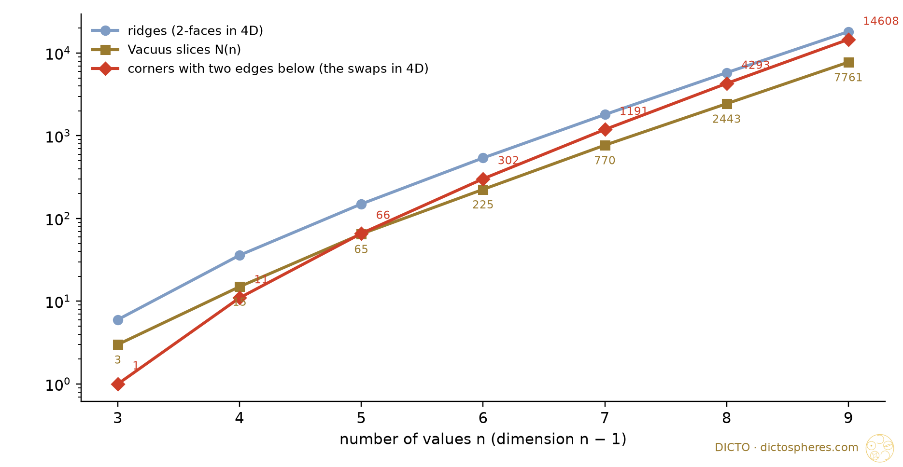
The swap in higher dimensions. In the permutohedron of n values every reversal of the sweep exchanges the corners with i and n − 1 − i edges below; the Eulerian numbers are symmetric, A(n, i) = A(n, n − 1 − i), and a self-reverse class exists exactly when the dimension n − 1 is even (for n = 7, the 2416 corners with three edges below). By Theorem 8.2′ those corners trade lower faces, not contacts of cells; the pure scutoid swap of Chapter 8 stays four-dimensional.
The Vacuus and the sweep are counted for every n, and every simple d-polytope sweeps by its h-vector. The fillings by permutohedra repeat; cut at a golden tilt, they do not.
DICTO: #105 DICTO 1:2 Truncated Octahedron: The 4D Vacuus of the Permutohedron (Section 4, Theorem 3, Figure 4); #104 Scutoid Tissues in Four Dimensions (Theorem 1′); Chapters 7 and 8. T. K. Petersen, Eulerian Numbers, Birkhäuser (2015), doi:10.1007/978-1-4939-3091-3.
Cutting the 4D permutohedron filling in the golden direction gives a non-periodic filling of space (it repeats along a plane, never in a third direction) by cells of exactly 35 kinds, in endlessly many shapes
New in this book. It answers the second lead of #105 (DICTO DOI: 10.5281/zenodo.24121177).
Tilt a knife at a golden angle through a stack of identical boxes and the cut faces never repeat across the stack. The 4D permutohedra fill four-dimensional space as boxes fill ours, and the golden cut through their filling does the same in one direction: it is a filling of our space by cells of exactly 35 kinds, in endlessly many shapes, repeating along a plane and never across it.
Chapter 12 followed the permutohedron into every dimension. This chapter cuts its four-dimensional filling. The 4D permutohedra fill four-dimensional space, every one a translate of the same cell. Cut that filling by a three-dimensional slice and the cells it crosses fill the slice. In a rational direction the cut repeats; #105 left the golden direction u = (1, φ, φ², φ³, φ⁴) as its second lead.
Proof. A cell's section is P ∩ {u · x = c − u · λ}, λ in the lattice; since u · λ runs over a set containing integers and integer multiples of φ, the offsets are dense; that the slice repeats along a plane and in no third direction, and that the shapes are infinitely many, is Theorem 13.2 (iii) and (i). The combinatorial type of a section is the set of faces of P that straddle the level, with their containments; it is constant between consecutive corner heights. The heights u · σ over the 120 orderings σ of −2, …, 2 were computed exactly in ℤ[φ] (φi = Fi−1 + Fiφ): 70 distinct values, 69 open bands; their straddling-face graphs fall into 35 isomorphism classes, and density puts cells in every band. ∎ (golden_types.py)
| direction | distinct corner heights | bands | combinatorial types |
|---|---|---|---|
| rational (1, −1, 0, 0, 0) | 8 | 7 | 3 possible; at one offset a single one, the repeating one-piece filling |
| generic | 120 | 119 | 60 (bands pair up under the central symmetry) |
| golden (1, φ, φ², φ³, φ⁴) | 70 (50 ties) | 69 | 35 |
The golden direction sits between the two: it does not repeat in every direction, as a rational cut does, yet it has far fewer kinds than a generic cut, because the golden ratio makes corners meet at the same height. This is the permutohedron's own version of the passage from crystal to quasicrystal, in one direction only: a finite set of kinds, repeating along a plane and never across it. The projection (window) method that gives Penrose-type tilings answers whether the 35 kinds can be cut down to finitely many shapes (studies/2026-11-13-golden-slice-window, slice_window.py, exact in ℚ(φ), 40 checks, FINAL ok):
Proof. Here l(x) = u · x, P is the permutohedron of −2, …, 2 and L its lattice. (i) By Lawrence's volume formula the section volume in each band is a cubic (a quadratic in the middle band) in the height h with a nonzero coefficient of h³ or h², checked exactly; dense heights then give infinitely many volumes. (ii) For a point x of the slice, |x − λ|² = |x − π(λ)|² + dλ², so the slice is the power diagram of the projected lattice points with weights −dλ², and its dual is the regular triangulation by the projected Delaunay tetrahedra (Aurenhammer); this is the dualisation scheme of Oguey, Duneau and Katz and of Kramer and Schlottmann. The projection is one-to-one on L, so the tile shapes are the 240/4 = 60 translation classes of Delaunay tetrahedra; the tiles at a corner depend only on the band of its height, giving 69 configurations, all distinct, which pair under point reflection into the 35 kinds. Certificates on a patch of radius 50 (11 438 corners, 76 907 tiles): every inner face shared by exactly two tiles, covering number 1 at random points, exact volume balance. (iii) l(λ) = 0 for λ in L exactly on 5ℤ(1,0,−2,1,0) + 5ℤ(0,1,0,−2,1) (since φi = Fi−1 + Fiφ); these vectors map the filling and the slice to themselves. A third independent period of the window tiling would need W − l(μ) = W, so l(μ) = 0; three periods of the slice would leave finitely many shapes, against (i). Over ℚ(φ), l(L) has rank at most 2, so the periods have rank at least 2 in every golden direction. ∎
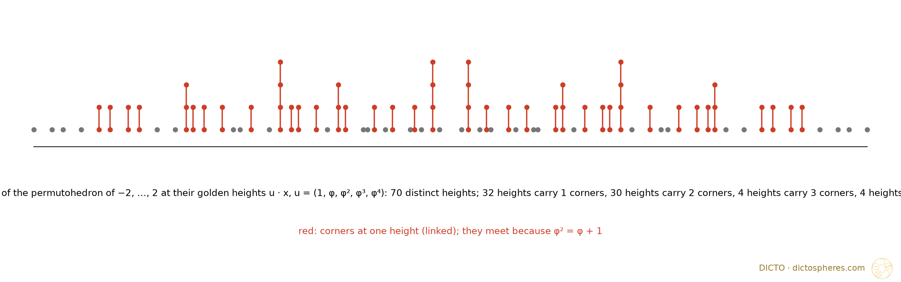
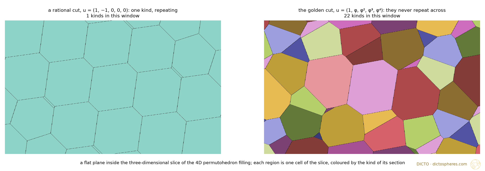
A slice by cells of 35 kinds, repeating along a plane and never across it. So far the book moved the values and the cut. Now it moves the walls.
DICTO: #105 (lead 2; the permutohedron filling); the slice test of 10 November 2026. J. H. Conway and N. J. A. Sloane, Sphere Packings, Lattices and Groups, 3rd ed., Springer (1999) (the lattice A4* and its Voronoi cell); M.-C. Brandenburg, J. A. De Loera and C. Meroni, The best ways to slice a polytope, Math. Comp. 94 (2025) 1003–1042, doi:10.1090/mcom/4006. Theorem 13.2: studies/2026-11-13-golden-slice-window; bibliographic records only, not read: C. Oguey, M. Duneau and A. Katz, A geometrical approach of quasiperiodic tilings, Commun. Math. Phys. 118 (1988) 99–118; P. Kramer and M. Schlottmann, Dualization of Voronoi domains and klotz construction, J. Phys. A 22 (1989); F. Aurenhammer, Power diagrams: properties, algorithms and applications, SIAM J. Comput. 16 (1987) 78–96; J. Lawrence, Polytope volume computation, Math. Comp. 57 (1991) 259–271.
Slide the walls instead of the values: every solid of the climb lies in one family, every edge a swap.
Slide the walls of the permutohedron without turning them and every edge stays a swap: one cone of shapes from Kelvin's cell, which fills space, to the associahedron, whose canonical form is a scattering amplitude
New in this book, retold from the draft paper The Permutohedron Family (12–13 November 2026, held as a paper, not published), with #49 (DICTO DOI: 10.5281/zenodo.23566671), #50 (DICTO DOI: 10.5281/zenodo.23606894), #89 (DICTO DOI: 10.5281/zenodo.23917931) and #87.
Keep every wall of Kelvin's cell facing the same way but slide it in or out: edges may shrink away but never turn, so every edge stays parallel to a swap. Everything that can be made this way is one family, and every solid of the climb is in it: the hexagon, Kelvin's cell, the slider, the bonds, the DICTO 1:2 and 2:1 Truncated Octahedra (its stops x = 1/2 and x = 2), Fedorov's five space-fillers, and, deep inside, the associahedron, whose canonical form hands out a law of particle physics.
Chapters 1 to 13 kept the walls of the permutohedron where they are and moved its values. This chapter moves the walls. Keep every wall facing the same way and slide it in or out: some edges shrink and vanish, but no edge ever turns. Everything that can be made this way is the permutohedron's family, the generalized permutohedra of Postnikov. The family is large: the simplex, the octahedron, the parallelepipeds, the matroid polytopes and the associahedron, the solid whose corners are the ways to bracket a product, all belong to it. At its top sits Kelvin's cell, which fills space; deep inside sits the associahedron, which in the work of Arkani-Hamed, Bai, He and Yan hands out a law of particle physics. This chapter walks the road between them.
View in app: Generalized Permutohedra
For values x1 < … < xn the permutohedron Π(x) is the convex hull of the n! orderings of (x1, …, xn) in ℝn; it has one facet for each nonempty proper subset S of [n] = {1, …, n}, and its edges are parallel to the roots ei − ej. A generalized permutohedron is a polytope obtained from it by moving facets parallel to themselves, edges allowed to shrink to points but never to turn (Postnikov). Equivalently (Postnikov, Reiner and Williams), every member is
P(z) = {y : Σi∈[n] yi = z[n], Σi∈S yi ≥ zS for every S},
with heights z in a polyhedral cone, the deformation cone, whose points are the submodular functions (the link to polymatroids goes back to Edmonds). Modulo translations the cone has dimension 2n − n − 1, eleven for the truncated octahedron. Writing z through the simplices ΔI = conv{ei : i ∈ I} gives every member as a signed Minkowski sum Σ yIΔI: the permutohedron is the sum of the segments Δ{i,j}, Loday's associahedron the sum over the intervals Δ[i,j]. Replacing the braid fan by the mirrors of another reflection group gives the Coxeter permutohedra and their cones (Ardila, Castillo, Eur and Postnikov): in three dimensions the B3 permutohedron is the truncated cuboctahedron and the H3 one the truncated icosidodecahedron.
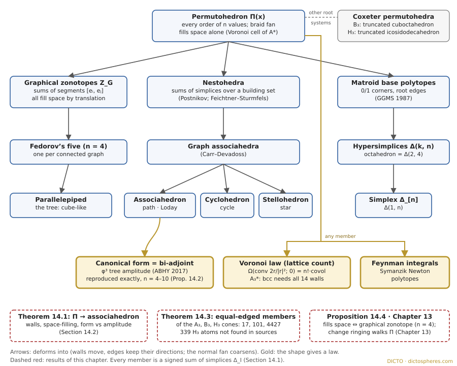
Two ends of the family carry laws. At the top the permutohedron is the Voronoi cell of the lattice An−1* (Conway and Sloane), so it fills space and counts the points of its lattice. Inside, the kinematic associahedron of Arkani-Hamed, Bai, He and Yan has as canonical form (the rational function with simple poles on its facet planes, Arkani-Hamed, Bai and Lam) the tree amplitude mn of the bi-adjoint scalar theory. The amplituhedron is in general not a polytope and is not a member; it is named so that the family is not over-read.
In ℝn let Π have heights zΠ(S) = C(|S| + 1, 2) (the values 1, …, n) and let L be Loday's associahedron, zL(S) = the number of intervals inside S. The Postnikov line is P(t) = (1 − t)Π + tL, t ∈ [0, 1]: the interval facets stay put and every other facet moves outward at its own speed DS = zΠ(S) − zL(S). The equal-speed line moves every non-interval facet at the same speed s.
| n | Ω(P(t); Y) | t = 0 | t = 1 |
|---|---|---|---|
| 4 (3D) | 8(8t² + 33t + 36) / (9(t + 2)(4t + 3)) | 16/3 | 88/27 = m6 |
| 5 (4D) | 2(8t⁵ + 74t⁴ + 264t³ + 447t² + 342t + 90) / (3(t + 1)(t + 3)(2t + 1)(2t + 3)(3t + 2)) | 10/3 | 49/36 = m7 |
Proof of (i). The normal fan of a Minkowski sum is the common refinement of the summands' fans, and the braid fan refines the fan of every member (Postnikov, Reiner and Williams), in particular L's; so for 0 < t < 1 the fan of P(t) is the braid fan. At t = 1 it is L's, whose facets are the interval facets. The ABHY associahedron has the same fan as L. ∎
Proof of (ii). P(z) is centrally symmetric about c exactly when zS + z[n] − z[n]∖S = 2Σi∈S ci for every S, a system linear in (z, c). Since z(t) is affine in t, the t at which it can be solved form an affine subset of [0, 1]; it contains 0 (Π is symmetric) and not 1 (L has pentagonal 2-faces, or is a pentagon for n = 3). So it is {0}, and a polytope that fills space by translations is centrally symmetric (Venkov; McMullen). ∎
Proof of (iii). zΠ(S) = C(K + 1, 2) with K = Σ kb, and zL(S) = Σ C(kb + 1, 2), since every interval inside S lies in one block; the difference is Σb<b′ kbkb′. At s = DS the inequality of S is the sum of the block inequalities, interval facets that never move, so it is tight only on a face of lower dimension and S is gone; for s > DS its plane misses the solid. For s < DS: let ε(s) be the largest ε for which a point of the plane of S satisfies every other inequality with slack ε; the conditions are linear in (s, x, ε), so ε is concave in s, and ε(0) > 0. It is enough to give a point of the solid at s = DS on the plane of S. Give the block bp the values 1, …, kp, the complement G of S the values K + 1, …, n, and add Ep = kp(kp+1 + … + km) to the first element of the gap after bp. For any U, bounding the values block by block gives ΣU x − C(|U| + 1, 2) ≥ −DS, and for an interval U the extras in the gaps it contains cover the cross terms, so every interval inequality holds as well. ∎ The point was checked for every non-interval S, n = 3 to 13 (15 914 facets), and the whole proof read line by line by an independent reader.
Proof of (iv). Π is simple and the n − 1 facets at a corner are those of a chain T1 ⊂ … ⊂ Tn−1, with a unimodular basis of normals; so Ω(Π; Y) is the sum over the n! chains of ∏ 1/XTk(Y). At the centre XT = |T|(n − |T|)/2 depends only on |T|, every chain gives 2n−1/((n − 1)!)², and the sum is 2n−1n/(n − 1)!. For L, in X[a,b] + X[a+1,b+1] − X[a,b+1] − X[a+1,b] the variables cancel and the constants give 1: Loday's heights are the ABHY slice with every constant 1, and Arkani-Hamed, Bai, He and Yan give Ω(L) = mn+2. ∎ The table is computed in rational arithmetic by two formulas (a pulling triangulation and Warren's vertex formula).
Proposition 14.2 (the test case; the theorem is Arkani-Hamed, Bai, He and Yan's, the check is ours; exact). For n = 4 to 10 the kinematic associahedron cut out by the ABHY slice with random positive rational constants has Catalan(n − 2) corners, all simple and unimodular, and its canonical form equals mn exactly at three random rational points (identically for n ≤ 6). A tilted slice still cuts a simple polytope with Catalan(n − 2) corners, but some corners get determinant 2 and the form is no longer mn (n = 6, 7). The law belongs to a particular member of the associahedron's type cone, not to its combinatorics alone.
Read as a road: on the straight line the solid keeps the permutohedron's shape until the last moment, when all its extra faces go at once; it stops filling space at its first step; and its form slides down to the amplitude. On the equal-speed line the extra faces leave in stages, each exactly when its own gap DS has closed. The combinatorial passage from the permutohedron to the associahedron by deleting facets is known (removahedra and permutreehedra: Hohlweg and Lange; Pilaud and Pons), and so is the permutohedron's canonical form as a sum over orders (Arkani-Hamed, Bai and Lam); no source checked follows this line in the deformation cone and records its walls, its loss of tiling or its form. The app world Generalized Permutohedra takes a staged route through the same cone, as DICTO designed it: its slider removes the non-interval faces one at a time.
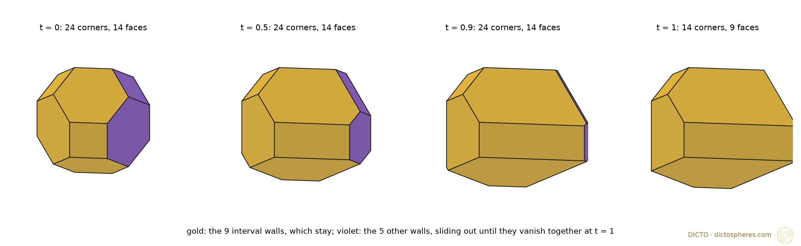
Inside the families of the truncated octahedron, the truncated cuboctahedron and the truncated icosidodecahedron (the A3, B3 and H3 permutohedra), which members have all edges of one length? #49 proved that sliding an equal-edged solid by one edge length along an edge direction keeps it equal-edged, and left open which stretches of the Archimedean solids exist; every stretch along a root direction lies in these cones.
| A3 | B3 | H3 | |
|---|---|---|---|
| cone dimension (modulo translation) | 11 | 23 | 59 |
| equal-edged solids up to symmetry | 17 | 101 | 4427 |
| regular-faced | 7 | 18 | 23 |
| zonohedra | 5 | 43 | 675 |
| stretches of a Platonic or Archimedean solid | 0 | 8 | 0 |
| atoms (no equal-edged summand, not regular-faced) | 2 | 2 (the same two) | 367 |
Proof of (i) and (iv). The face of a member in a direction inside a wall w is an edge parallel to w's root, or a point; its length ℓw is linear in the support function, and faces of Minkowski sums are sums of faces, so ℓw(P ⊕ P′) = ℓw(P) + ℓw(P′). If P and P′ are equal-edged each ℓw is 0 or 1, and the sum is 0 or 1 on every wall exactly when no wall has 1 in both (the hypothesis is needed: Q = ½Q ⊕ ½Q). The list (ii) is a complete search of the closed 0/1 labellings, one representative per orbit under the 48 or 120 symmetries, each rebuilt exactly over ℚ(√2) or ℚ(√5) with every edge of squared length exactly 1 and Euler's formula checked; all seven Wythoff solids of each group are found, and the cube in A3, the rhombic dodecahedron in B3 and #49's five-fold dodecahedron stretch in H3 fail the cone inequalities, as they must. (iii) is read off the complete list: every other Platonic or Archimedean solid of these groups has an edge along every root direction of its cone, so any stretch doubles an edge. ∎
The atoms and the 13-COA. The two atoms of A3 (and of B3) are known solids. One is the augmented octahedron (a 60° rhombohedron with one corner cut; P3,33 in Timofeenko's list). The other is the augmented cuboctahedron (Stewart 1970), which DICTO named the 13-Corner Octet Atom (DICTO 13-COA) for its role as an atom of the permutohedron family: a cuboctahedron with a square pyramid on one square, whose four pyramid triangles lie in the planes of the neighbouring triangles and merge with them into 60° rhombi (13 corners, 24 edges; 4 triangles, 5 squares, 4 rhombi; Figure 14.3). It is P3,35 in the list of 78 convex polyhedra with regular and composite faces of Gurin and Zalgaller, proved complete by Timofeenko, and it is in the list of Doskey, Kaufman and Waterman (2006), which credits it to Stewart. What the sources checked do not discuss is its role here: the 13-COA is indecomposable, an equal-edged member of the A3 cone with no equal-edged summand. It sits on the octet lattice and is not centrally symmetric (6 of its 13 faces come in parallel pairs).
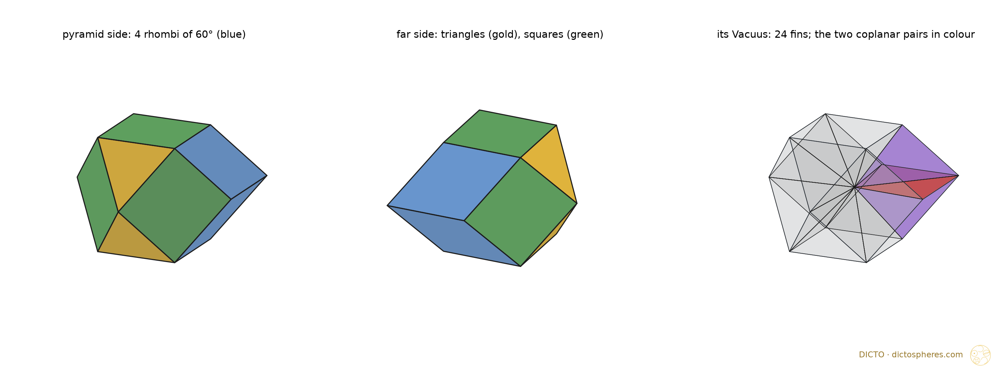
Its Vacuus. In the sense of #87 (one fin from the centre to every edge, one strut to every corner) the 13-COA has a Vacuus: its corner centroid lies strictly inside all 13 face planes. Its 24 fins lie in 22 planes; only two pairs of fins are coplanar and merge into flat plates (Figure 14.3, right). This was checked in floating point (vacuus_a316.py), not exactly.
In H3 the 367 atoms have regular triangles and pentagons together with rhombi of 36°/144°, 60°/120° and 72°/108° and hexagons of 72°/144° and 108°/144°. Of them 13 (regular faces and 60° rhombi only) are in Timofeenko's complete list of 78, 14 (regular faces and 72°/108° rhombi) match entries of Kaufman's list of 108° rhombic polyhedra by their face counts, and one, H3-16, is Subbotin's five-rhombic pyramid (2022). The other 339 were not found in any source checked (PRIOR-ART.md lists them); as far as those sources show they are new, and so is the role of all 369 as atoms of these cones.
Proof. (i) A zonotope is centrally symmetric with centrally symmetric faces; its belts correspond to the rank-2 contractions of its generator directions, and for graph directions these are graphic of rank 2, with at most three parallel classes (a triangle). So every belt has 4 or 6 facets, and Venkov and McMullen give a translation tiling; only directions enter, so the lengths are free. (ii) A 3-polytope that tiles by translations has centrally symmetric faces, so it is a zonohedron (Coxeter); a zonotope member is a graphical zonotope (Postnikov, Reiner and Williams), and full dimension needs G connected. The five connected graphs on four vertices have 3, 4, 4, 5 and 6 edges, and their zonotopes have the face counts of Fedorov's five. ∎ The graph-by-graph match with Fedorov's five was not found stated in the sources checked; it is claimed here only as this short proof from classical facts.
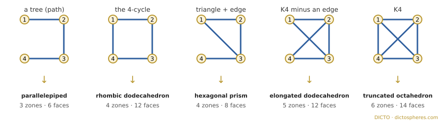
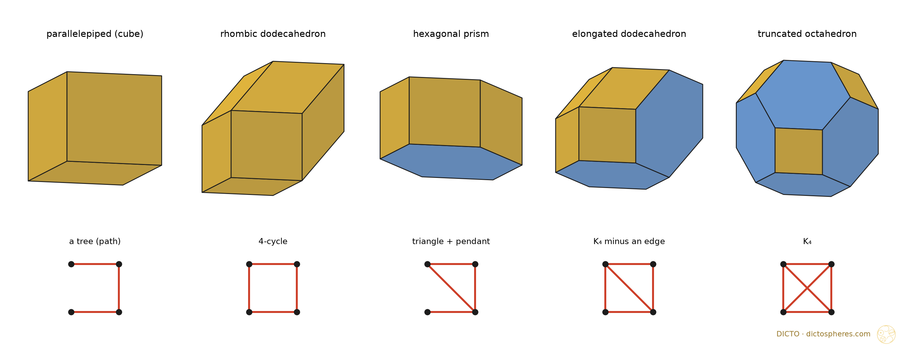
By Theorem 14.1 (ii) every member on the open line to the associahedron fails, and so does the 1:2 Truncated Octahedron of Chapters 1 and 7 on its own (its hexagons are truncated triangles, not centrally symmetric), although it fills space together with its partner, the 2:1. Chapter 5's chamfered cube is not a member at all: it has seven edge directions, and a member of this family at most the six root directions.
The thread that joins the climb is the one this book began with: every edge of every member of the family is parallel to a swap direction ei − ej. Moving the values (Chapters 1 to 4) moves along one line of the cone; repeating a value lets some edges shrink to nothing; moving the walls (this chapter) goes everywhere else.
| solid | how it sits in the family | chapter |
|---|---|---|
| truncated triangle | the permutohedron of three values, any gaps | 1 |
| Kelvin's cell | the top: the values 1, 2, 3, 4 | 2 |
| the slider: octahedron … Icosaxes (the golden stop) … cuboctahedron | symmetric values, gaps x : 1 : x; the ends are limits with a zero gap (the octahedron is the values 0, 0, 1, 1) | 3 |
| the 1:2 and 2:1, the golden bond | values 1, 2, 4, 5; −5, −1, 1, 5; −τ³, −1, 1, τ³ | 4 |
| the chamfered cube | not a member: seven edge directions, a member has at most the six swap directions | 5 |
| truncated tetrahedron, golden cut tetrahedra, tetrahedron, octahedron | repeated values: the sections of the tesseract (#89, below) | 14 |
| Fedorov's five | walls moved: the graphical zonotopes of the connected graphs on four dots | 14 |
| the 13-COA and the other equal-edged atoms | walls moved, all edges of one length | 14 |
| Loday's associahedron | walls moved: only the 9 interval walls kept | 14 |
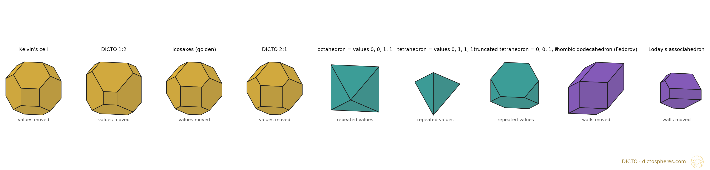
Repeated values: the tesseract's sections (#89). #89 slices the tesseract with corners (±1, ±1, ±1, ±1) by the hyperplanes x1 + x2 + x3 + x4 = 2h across a long diagonal, and finds for 0 < h < 1 the tetrahedra cut at x = (1 − h)/(2 − h): the Greater Golden Cut Tetrahedron at h = 1/φ², the Archimedean truncated tetrahedron at h = 1/2, the Lesser Golden Cut Tetrahedron at h = 1/φ (#89, Main Theorem (a); home Book Nine, The Golden Ladder, Chapter 6). Read through this book, each of these sections is a permutohedron of four values with one value repeated: its corners are exactly the orders of (−1, 2h − 1, 1, 1), that is, after x ↦ (x + 1)/2, of the values 0, h, 1, 1, with gaps h and 1 − h, so its hexagons have sides in the ratio of the gaps (Chapter 1). At h = 1/2 these are 0, 1/2, 1, 1, the classical truncated tetrahedron as the permutohedron of 0, 1, 2, 2; at the golden heights the gaps are in the ratio φ. The section through the centre (h = 0) is the octahedron, the values −1, −1, 1, 1, and beyond the corner layer (1 < h < 2) the sections are tetrahedra, the values 2h − 3, 1, 1, 1. We checked this reading against #89's own construction and data, at its three stored heights and at four controls, in exact arithmetic (check89.py, FINAL ok). All of these are members of the family with repeated values.
#49 (the Polyhedral Stretching Theorem) proved that a dodecahedron slid one edge length in a straight line sweeps a solid whose edges are all equal, in every direction except along an edge, and that the same holds for every solid whose edges are all equal. The swept solid is the Minkowski sum of the solid and a segment, and the family of this chapter is closed under adding segments along swap directions: slide a member along a root and it stays a member, its new edges parallel to the slide. That is why every stretch of Theorem 14.3 (iii) lies in the cones, and why the stretches of the Archimedean solids that #49 left open could be settled there: within these cones only five solids can be stretched along a cone direction. #49's own five-fold stretch of the dodecahedron is not in the H3 cone (it fails the cone's inequalities), as Theorem 14.3 records.
One move each (#50). #50 obtains five classical space-fillers that the literature makes by cutting or gluing, among them the regular-hexagon and the classical elongated dodecahedron, the Bain rhombic dodecahedron, the Bilinski dodecahedron and the 60° rhombohedron, each by one setting of three lattice moves (Fedorov's moves). Each tiles space by translations, so each is, up to its proportions, one of Fedorov's five of Proposition 14.4. The table that matches the two lists name by name is not made here; it is an open item of the series (home of #50: Book Two, Space-Fillers and Lattice Moves, Chapter 3).
The climb began with the permutohedron's values and reaches its summit with its walls. Moving the values gave the solids of the first chapters (Chapters 1 to 4); moving the walls gives the whole family, with Kelvin's cell at the top and the amplitude at the associahedron, and in three dimensions the members that fill space by sliding are exactly the five classical space-fillers, one for each connected network of four dots.
Pointer. The canonical form of the associahedron and the physics it carries are told in Book Eleven, A Brief Geometry of Space, Chapter 13; this chapter keeps Proposition 14.2 as the far end of the family, a check of the theorem of Arkani-Hamed, Bai, He and Yan.
All the solids of the climb are one cone, from Kelvin's cell, which fills space, to the associahedron, which hands out a law, and every edge in it is a swap. The oldest rule of order is the ringers': only neighbours may swap.
DICTO: The Permutohedron Family (draft, 12–13 November 2026); #49 The Polyhedral Stretching Theorem; #87 (the Vacuus); #105 (the DICTO 1:2 and 2:1 Truncated Octahedra). A. Postnikov, Permutohedra, associahedra, and beyond, Int. Math. Res. Not. 2009, 1026–1106, doi:10.1093/imrn/rnn153; A. Postnikov, V. Reiner and L. Williams, Faces of generalized permutohedra, Doc. Math. 13 (2008) 207–273, doi:10.4171/dm/248; J.-L. Loday, Realization of the Stasheff polytope, Arch. Math. 83 (2004) 267–278; F. Ardila, F. Castillo, C. Eur and A. Postnikov, Coxeter submodular functions and deformations of Coxeter permutahedra, Adv. Math. 365 (2020) 107039, doi:10.1016/j.aim.2020.107039; N. Arkani-Hamed, Y. Bai, S. He and G. Yan, Scattering forms and the positive geometry of kinematics, color and the worldsheet, JHEP 05 (2018) 096, arXiv:1711.09102; N. Arkani-Hamed, Y. Bai and T. Lam, Positive geometries and canonical forms, JHEP 11 (2017) 039, arXiv:1703.04541; B. A. Venkov (1954) and P. McMullen (1980) as in Chapter 5; E. S. Fedorov, Nachala ucheniya o figurakh (1885); B. M. Stewart, Adventures Among the Toroids (1970; 2nd ed. 1980); A. M. Gurin and V. A. Zalgaller, On the history of the study of convex polyhedra with regular faces and faces composed of regular ones, AMS Transl. (2) 228 (2009) 169–229; A. V. Timofeenko, Junction of noncomposite polygons, St. Petersburg Math. J. 21 (2010) 483–512, doi:10.1090/S1061-0022-10-01105-2; A. Doskey, R. Kaufman and S. Waterman, Convex Diamond-Regular Polyhedra and Convex 108 Degree Rhombi Regular Polyhedra (web lists, 2006–2024); V. I. Subbotin, On composite RR-polyhedra of the second type, Vladikavkaz Math. J. 24:1 (2022) 100–108, doi:10.46698/w8842-6654-4046-v.
Ringers may only swap neighbours: the first hexagon heard.
Ringers may only swap neighbours: every extent is a tour of a permutohedron, three bells ring the hexagon of the first page, and the three principles of Kyushindo can be read off the tours exactly
New in this book. It reads the three principles of Kyushindo, as #43 (DICTO DOI: 10.5281/zenodo.23532013) gives them, in English change ringing.
English ringers have rung every order of their bells since the 1600s, swapping only neighbours from row to row, because a swinging bell can be moved one place and no more. Every such piece walks a permutohedron. Three bells ring the hexagon of the first page; four ring Kelvin's cell, the solid on the cover; five ring the 4D permutohedron at the centre of the book.
The book ends where it began, with bells. In English change ringing a band rings a set of tower bells round and round, each bell once in every row. Between one row and the next the bells may only change places with a neighbour, because a heavy bell swinging full circle can be held back or hurried by one place but no more. A complete piece that rings every possible order of the bells once, and comes back to the start, is called an extent. Write each order as a point, as this book does: the 24 orders of four bells are the 24 corners of the truncated octahedron. Then every change is a step from a corner to a neighbouring corner, and an extent is a tour that visits every corner once and comes home. This chapter makes that picture exact, counts every tour of four bells, finds the ringers' standard methods among them, and reads the three principles of Kyushindo in them: the change is the step, the rhythm is the pattern of steps, and the harmony is the symmetry of the tour and the shortest way across.
Kyushindo is the martial art of Kenshiro Abbe. Its three principles, as #43 (DICTO Kyushindo Cores) gives them, are Change 万物流転, Rhythm 律動 and Harmony 調和; #43 read them in shells of towers, with rhythm as Fibonacci beats and harmony as exact golden fits. Here they are read in the permutohedron. The reading is an interpretation; every statement of fact below is exact and checked.
A row is an order of the bells 1, …, n (1 the lightest); rounds is 12…n and backrounds n…21. A change exchanges the bells in one or more disjoint pairs of neighbouring places. Ringers write a change by the places in which bells stay put (its place notation): on four bells, 12 swaps the bells in places 3 and 4, 14 swaps places 2 and 3, 34 swaps places 1 and 2, and x (a cross) swaps both outer pairs at once. As in Chapter 1, the row r is the point x(r) in which coordinate b is the place of bell b; the rows of n bells are the corners of the permutohedron of 1, …, n.
Each swap moves two coordinates by one each, and the swaps of one change are independent, so they can be made one at a time in any order. Proof. The faces of the permutohedron correspond to ordered partitions of the places into blocks of consecutive places: the face is the set of rows that agree with r outside the blocks and only permute bells within each block (G. M. Ziegler, Lectures on Polytopes, Example 0.10). The face of a change with swaps at k disjoint pairs is the one whose blocks are those k pairs and single places otherwise: it is a product of k segments, a k-cube, with 2k corners (the rows given by any subset of the swaps), and the change joins the corner r to the corner where all k swaps are made, which is opposite; the squared distance is 2k. A hexagon is a block of three consecutive places, and taking a row to the opposite corner of a hexagon reverses three bells, which no set of disjoint neighbouring swaps does. ∎ (Checked for every row and every change on 4, 5 and 6 bells.)
A change is a choice of neighbouring pairs that do not overlap. Proof. There are n − 1 neighbouring pairs in a line, and a change is a nonempty set of them with no two sharing a place. Sets of non-overlapping pairs among m pairs in a line number Fm+2 (the last pair is either unused, leaving m − 1 pairs, or used, leaving m − 2): with m = n − 1 that is Fn+1, less the empty set. ∎ (Checked for n = 2, …, 12.) The count is elementary and we claim no priority for it; we note only that the Fibonacci numbers of #43's beats appear again here, as the number of strokes open to a band at every row.
So the graph that ringing moves on is more than the permutohedron's edges. Call it the change graph Rn: its corners are the n! rows and its links are all the changes. It contains the edge graph Pn of the permutohedron (the one-swap changes) and adds the diagonals of the cube faces. On four bells, R4 is the truncated octahedron with both diagonals of each of its 6 square faces drawn in: 36 edges and 12 diagonals, four links at every corner. The two kinds of 2-face of the permutohedron are the two kinds of relation between swaps: a square is two swaps far apart, which can be made in either order (sisj = sjsi); a hexagon is two swaps that share a bell, where the two ways round, three swaps each, agree (sisi+1si = si+1sisi+1, the braid relation). Ringing takes the square in one stroke, as a cross change; it can never take a hexagon in one stroke.
| bells | rows (corners) | edges | squares | hexagons | changes at each row | links of Rn |
|---|---|---|---|---|---|---|
| 3 | 6 | 6 | 0 | 1 | 2 | 6 (the hexagon) |
| 4 | 24 | 36 | 6 | 8 | 4 | 48 |
| 5 | 120 | 240 | 90 | 60 | 7 | 420 |
| 6 | 720 | 1800 | 1080 | 480 | 12 | 4320 |
Table 15.1. The permutohedra of 3 to 6 values and their change graphs (counts checked by enumeration).
An extent rings every row once and returns to rounds; read as a closed path, it is a Hamiltonian cycle of Rn, and every Hamiltonian cycle passes through rounds, so the extents of n bells (as cycles of rows, either way round) are exactly the Hamiltonian cycles of Rn. On four bells all of them can be listed.
Since there are only 24 corners, every closed tour can be found by trying every path from rounds. Proof. Exhaustive enumeration of the Hamiltonian cycles through rounds by two independent programs (a depth-first search in C and one in Python) that agree; each was first run on graphs whose counts are known (hexagon 1, K4 3, cube 6, dodecahedron 30, Petersen graph 0). Classes by a canonical form under the 48 symmetries; the automorphism groups by backtracking. (iv): a tour of R4 has 24 steps, an even permutation overall, and each one-swap change is odd and each cross even, so the one-swap changes are even in number, and with them the crosses. ∎ (ring.py, hamcount.c)
This corrects a common picture: that an extent is a Hamiltonian cycle on the permutohedron. It is so only when the extent uses no cross change. On four bells that is 44 tours out of 5396; the other 5352 cut across square faces. Plain Bob Minimus is one of these.
The tour is fixed by the method, so these facts are read off it. Proof. The plain course is 24 distinct rows returning to rounds; every other change is the cross x, whose links form a perfect matching of R4's 24 corners, the 12 diagonals; the symmetry group is the stabiliser of the tour among the 48 symmetries, computed element by element (3 rotations of orders 1, 3, 3 and 3 improper elements of order 2, none the central inversion). ∎ (ring.py)

The rhythm of an extent is its sequence of changes, a word read round a circle. Ringers build most extents from a lead, a short word repeated with the bells renamed each time; such a word repeats exactly. Many tours have no repeat at all.
The words were read off the 5396 listed tours. Proof. Period by direct comparison of each cyclic word with its shifts. If the word has period p, rows t and t + p differ by one and the same renaming L (since changes act on places and renamings act on bells, and the two commute), so L maps the tour to itself, shifted by p. The collection (Central Council of Church Bell Ringers, XML of 10 November 2026; 1491 four-bell entries, of which 76 contain a change in which no pair swaps, so repeat a row and are left out) was parsed and every method's lead head checked against the collection's own; the plain courses that are extents were matched to the 162 classes by canonical form. ∎ (extract_cccbr.py, ring.py)
The four classes of tours that keep to the edges of the truncated octahedron are rung as Double Court Place, Double Canterbury Place, Lyndon (and Baines Johnson) and Landbeach Treble Place Minimus. Across the stages the collection gives: 2 of 85 three-bell methods (both along edges: the hexagon), 139 of 1415 four-bell, 184 of 1226 five-bell (2 along edges: Crambo Doubles and Historic Imber Treble Place Doubles) and 1 of 6331 six-bell methods (I Can't Believe It's Not Plain Bob Treble Place Minor) whose plain course is already an extent. Every other method needs calls.

Each class was tested against all 48 symmetries. Proof. In the class listing of Theorem 15.3 the symmetry order of a class is 48 divided by its size; the largest is 12 (three classes of 4 tours each), with 2, 4, 11, 67 and 75 classes of orders 8, 6, 4, 2 and 1 below. The elements of each group of order 12 were classified (proper of orders 1, 2, 3; improper of orders 2 and 6, among them the central inversion): that is D3d. The names come from the matching of Theorem 15.5; the plain changes were generated directly and matched in the same way. ∎ (ring.py)
Ringers call these three methods "double", and the Central Council classes the symmetry of each as palindromic, double and rotational. On the solid, each has the central inversion among its symmetries: the most symmetric tours of the truncated octahedron are exactly these three double methods.

The second harmony is the shortest way between rounds and backrounds, the two orders farthest apart.
Every bell must travel to the opposite end; plain hunt moves every bell one place at every change, and that cannot be beaten. Proof. Along edges: each step undoes one inverted pair and backrounds has all C(n, 2) pairs inverted; the shortest paths are the reduced words of the longest permutation, counted by Stanley (1984) as C(n,2)! / ∏ (2i − 1)n−i, and reproduced here by counting shortest paths for n ≤ 6. With changes, at most n: in plain hunt each bell moves one place at each change, turning at the ends, and after n changes it stands where it began counted from the other end: a bell that starts upward from place b reaches place n after n − b changes, keeps it once and comes down b − 1 places, and a bell that starts downward reaches place 1 after b − 1 changes, keeps it once and climbs n − b places, so either way it ends at place n + 1 − b (this is the ringers' halfway point of the plain hunt). At least n, for n ≥ 3: suppose n − 1 changes suffice. Bell 1 must climb n − 1 places, so it rises at every change; at the first change it changes places with bell 2, which drops to the front and then has n − 2 changes to climb n − 2 places to place n − 1, so it too rises at every change, including the second; but at the second change the place above bell 2 is held by bell 1, which must also rise, a contradiction. Both halves of the plain hunt circle are therefore shortest. Only these two. Take a way of L changes from rounds to backrounds. Let rb be the number of changes at which bell b keeps its place, S the number of swaps, and u the number of swaps that put a pair back in order (swap two bells that are already inverted). A change that swaps k pairs keeps n − 2k places, so 2S = nL − Σ rb; every swap changes the number of inverted pairs by one, and backrounds has all C(n, 2) pairs inverted, so S = C(n, 2) + 2u. Together, Σb rb + 4u = n(L − n + 1). Now let L = n. Bell b moves n − rb times by one place and ends |n + 1 − 2b| places from where it began, so n − rb has the parity of n + 1 and rb is odd, at least 1. The identity, Σ rb + 4u = n, then forces rb = 1 for every bell and u = 0. With u = 0 two consecutive changes swap no common pair, since the same two bells would swap back. Let Ft be the set of places kept at change t; Σt |Ft| = n, and |Ft| has the parity of n. If n is odd, every |Ft| is odd and so exactly 1: change t keeps one place pt and swaps every pair on both sides of it. If pt < pt+1, both changes swap the pairs left of pt and the pairs right of pt+1; as they share none, pt = 1 and pt+1 = n. In the same way pt > pt+1 forces pt = n and pt+1 = 1, and pt = pt+1 is impossible. So the kept places alternate 1, n, 1, … or n, 1, n, …. If n is even, the changes with |Ft| = 0 are x, and no two of them are consecutive, so there are at most n/2; each remaining change keeps at least two places, and the sum n forces exactly n/2 changes x and exactly two kept places at each of the rest. Placing n/2 non-consecutive x among n changes leaves only one change to spare, so no run of the other changes is longer than two, and none at either end is longer than one: each of them stands next to an x. It shares no pair with that x, so it swaps (n − 2)/2 pairs among 23, 45, …, (n − 2)(n − 1), that is, all of them: it is 1n. Two changes 1n cannot be consecutive, since they share the pair 23, so x and 1n alternate. In both cases the way is one of the two halves of the plain hunt. ∎ Breadth-first search confirms the distance, the two shortest ways and the farthest rows for n = 3, …, 8 (5040 rows for n = 7, 40 320 for n = 8), with the identity checked on every shortest way (ring.py, geodesics.py).

On five bells the rows are the 120 corners of the four-dimensional permutohedron of Chapter 7, and on six the 720 corners of its five-dimensional sister. Most methods ring only part of the rows in a plain course; the conductor's calls (bobs and singles), which alter one change at chosen lead ends, make up the extent. The searches below try every calling.
A lead is a fixed block of changes; a calling picks one of a few blocks at each lead end, and the search tries every choice, stopping a branch as soon as a row repeats. Proof. Depth-first search over callings of 12 leads (10 for Stedman, with the single possible at each of the 20 six ends), exhaustive and finished well within its time cap; each extent rechecked row by row. The leads were expanded from the collection's notation and agree with its lead heads; the calls are the standard ones (sources below), and Wenham's Grandsire extent P B P B P S, P B P B P S is found among the ten. ∎ (ring.py)
| extent | rows | changes: edges + square diagonals (+ cube diagonals) | word: period (parts) | symmetry order | backrounds at row |
|---|---|---|---|---|---|
| plain changes on four | 24 | 24 + 0 | 8 (3) | 12 (D3d) | 13 (halfway) |
| Plain Bob Minimus | 24 | 12 + 12 | 8 (3) | 6 (C3v) | 5 |
| Double Bob Minimus | 24 | 12 + 12 | 8 (3) | 12 (D3d) | 13 (halfway) |
| Double Court Place Minimus | 24 | 24 + 0 | 8 (3) | 12 (D3d) | 13 (halfway) |
| Plain Bob Doubles, B P P P three times | 120 | 12 + 108 | 40 (3) | 6 | 6 |
| Grandsire Doubles, B P B P S P twice | 120 | 2 + 118 | 60 (2) | 2 | 116 |
| Stedman Doubles, singles at leads 5 and 10 | 120 | 2 + 118 | 60 (2) | 2 | 12 |
| plain changes on five | 120 | 120 + 0 | 40 (3) | 6 | 65 |
| plain changes on six | 720 | 720 + 0 | 240 (3) | not computed | 390 |
| Plain Bob Minor, the calling found (bobs and singles) | 720 | 10 + 350 (+ 360) | 720 (1, no repeat) | not computed | 7 |
Table 15.2. The extents of this chapter (rows counted from rounds as row 1). Symmetry is the stabiliser of the tour among the 2·n! symmetries of the permutohedron of n values (renamings of the bells, with or without reading rows backwards). The Grandsire calling is Wenham's P B P B P S begun one lead later; the Stedman calling has a single at the first six end of the 5th and the 10th lead. The Plain Bob Minor calling, at the 60 lead ends: PPPPBPPPPBPPPPSPPPPBPPPPBPPPBPPPPBPPSPPPSSPPPPSPPSPPPPSSSPBS.
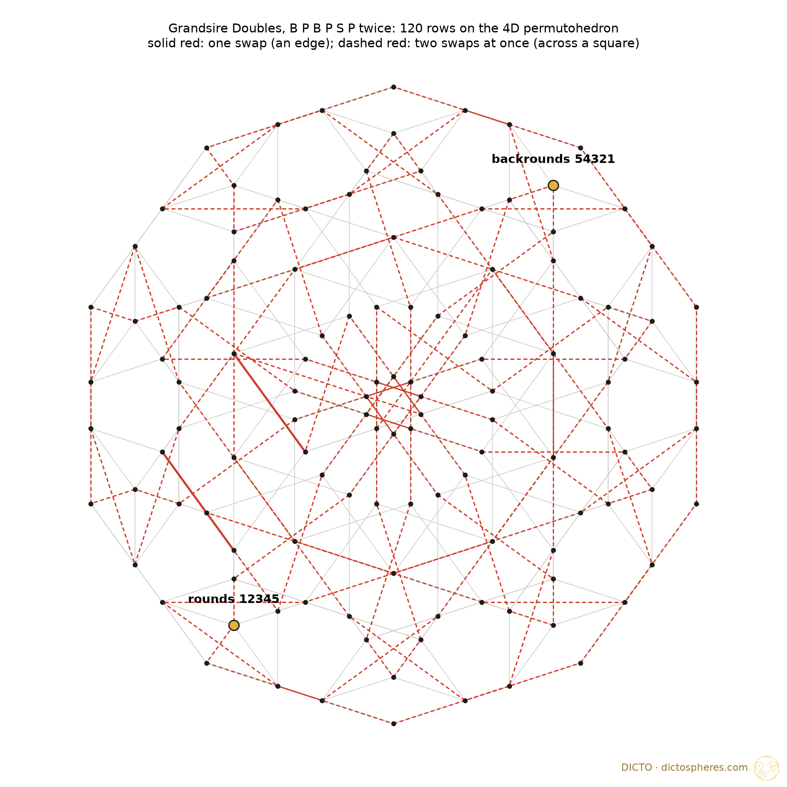
Every second change of Plain Bob Minor is a cross, and the crosses pair the 720 rows off. Proof. (i) Exhaustive search over bob-or-plain at each of 60 lead ends (58 379 branches, finished, none comes round true at 720); with singles the first extent found is that of Table 15.2. We have not found this statement in the sources we checked. (ii) Lemma 15.1 for k = 3; the x-links form a perfect matching of the 720 rows (360 links); a cube face of type (2, 2, 2) is an ordered choice of three pairs of bells, 6!/23 = 90 of them, each with 4 long diagonals. (iii) Generated and checked: 24, 120 and 720 rows, all distinct, each step one swap, the last step back to rounds one swap. ∎ (ring.py)
A band ringing an extent walks once round every corner of a permutohedron and comes home. Each stroke is a step to a neighbouring corner or straight across a square or cube face, never across a hexagon; the number of strokes open at every row is a Fibonacci number less one. On four bells there are exactly 5396 such walks (44 of them along the edges alone), in 162 kinds; the ringers' named methods already cover 43 kinds, including every walk with a repeating rhythm and every walk that keeps to the edges. The most symmetric walks, with rounds and backrounds opposite each other, are exactly the three "double" methods, one of them in the class of the old plain changes; and the shortest way from rounds to backrounds is the plain hunt, n strokes each way round its circle. Change, rhythm and harmony are, in this reading, the step, the repeat and the symmetry of the walk.
Claimed here: Lemma 15.1 as stated for ringing (the face correspondence itself is classical); Theorem 15.3 (the counts 44 and 5396, the classes, the automorphism group of R4, the cross counts); Proposition 15.4; Theorem 15.5 (rhythm classes and the census of the collection against them); Theorem 15.6; the ringing half of Theorem 15.7 (distance n and the two shortest ways for every n ≥ 3, with proofs; the farthest rows for n ≤ 8); Theorem 15.8 (the complete lists of extent callings with the standard calls); Proposition 15.9. Known and used: the faces of the permutohedron (Ziegler); the Fibonacci count of Lemma 15.2 (elementary); Stanley's count of reduced words (reproduced); the Steinhaus–Johnson–Trotter order as a Hamiltonian cycle of the permutohedron (reproduced for n = 4, 5, 6); the method notations, lead heads and calls of the Central Council and of the ringing sources below.
Popular claims checked. "An extent is a Hamiltonian cycle on the permutohedron": true only for extents without cross changes (44 of 5396 on four bells); in general it is a Hamiltonian cycle of the change graph Rn (Theorem 15.3). "The plain changes give a Hamiltonian cycle of the permutohedron" (Wikipedia, Steinhaus–Johnson–Trotter algorithm): confirmed for 4, 5 and 6 bells. "To ring the extent of Grandsire Doubles we need singles as well as bobs" (Wenham): confirmed, all 10 extent callings use both. Plain Bob Minimus has a plain course of 24 rows and lead head 1342 (Central Council): confirmed. "An extent is n! rows" (Wikipedia, Change ringing): the definition used here.
Every extent that ringers have rung since Tintinnalogia (Duckworth and Stedman, 1668) is a walk along the edges and squares of a permutohedron, one swap of neighbours at a time or two far apart at once, and that single move is all this book has used. It drew the truncated triangle and built Kelvin's cell; it slid the golden pairs and drove the bonds; in a slice it became the scutoid, and one dimension up the scutoid tissues of #104, whose swaps the h-vector counts and the Queens (the 600-cell and the 120-cell) balance; crowded into one corner it made rosettes, and at the walls of close packing 4D scutoids. At the summit it joined every solid of the book into one family. Change, rhythm and harmony, the three principles of Kyushindo (#43), are in the tours: each stroke a change, each method a rhythm, the most symmetric extents a harmony. Ring 1, 2, 3; then 2, 1, 3; then 2, 3, 1, and on round the six rows: the hexagon of the first page is in the air.
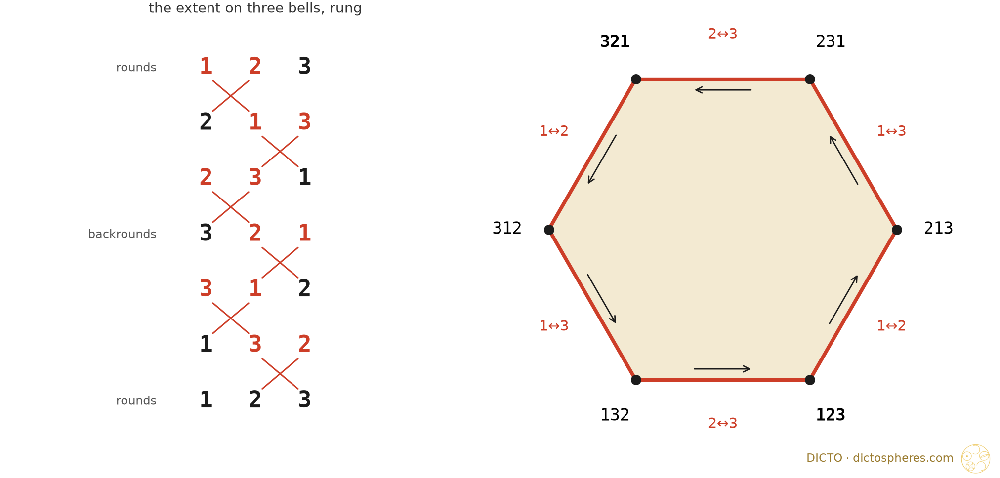
Pointer. Book Eleven, A Brief Geometry of Space, Chapter 7 (the Hopscotch) reads the same three principles of Kyushindo as moves of a walk: change the step, rhythm the hop, harmony the jump. The change of this chapter is that step, a single stroke. Rhythm and harmony are read differently here, as the repeat of a lead and the symmetry of a tour; and the series also uses "hop" for a move that does not undo itself. The two readings are laid side by side in Book Eleven; this chapter keeps its own.
Other swaps wait beyond this book, of faces with corners, of a number with its Galois twin, of a solid with its turn; they are the subject of Book Eleven, A Brief Geometry of Space.
DICTO: #43 DICTO Kyushindo Cores (the three principles, the Fibonacci beats); Chapter 1 (the permutohedron of three values), Chapter 3 (orderings of four), Chapter 7 (the 120 orders of five) of this book. Kyūshindō and Kenshiro Abbe: Wikipedia, as cited in #43.
Ringing data and calls. Central Council of Church Bell Ringers, Methods Library, https://methods.cccbr.org.uk/ : the Central Council Collection of Methods, XML (all classes, collection date 10 November 2026) and the text lists of Plain, Principle and Treble Place Minimus, Plain and Principle Doubles and Plain Minor (downloaded 12 November 2026); Composition Library page of Plain Bob Minimus (complib.org/method/10460: plain course 24, lead head 1342). P. D. Wenham, Bell Ringing by Instalments 05, Grandsire and Stedman (2021), www.pdg.org.uk (Grandsire Doubles single as 3.123 rows, the extent P B P B P S repeated, Stedman Doubles single). Ringing-theory mailing list, "Calls in Doubles", August 2010, lists.ringingworld.co.uk (Plain Bob Doubles: 145 bob, 123 single, 125 lead end).
Mathematics. R. P. Stanley, On the number of reduced decompositions of elements of Coxeter groups, European J. Combin. 5 (1984) 359–372, doi:10.1016/S0195-6698(84)80039-6. G. M. Ziegler, Lectures on Polytopes, Springer (1995), doi:10.1007/978-1-4613-8431-1. Wikipedia, Steinhaus–Johnson–Trotter algorithm and Change ringing (read 12 November 2026).
Change ringing and group theory, checked by bibliographic record only (each record checked on Crossref on 12 November 2026; the texts were not available to us, and no statement of this chapter rests on them): T. J. Fletcher, Campanological groups, Amer. Math. Monthly 63 (1956) 619–626, doi:10.1080/00029890.1956.11988879; R. A. Rankin, A campanological problem in group theory, Proc. Cambridge Philos. Soc. 44 (1948) 17–25, doi:10.1017/S030500410002394X, and II, 62 (1966) 11–18, doi:10.1017/S0305004100039451; A. T. White, Ringing the changes, Math. Proc. Cambridge Philos. Soc. 94 (1983) 203–215, doi:10.1017/S0305004100061053; A. T. White, Fabian Stedman: the first group theorist?, Amer. Math. Monthly 103 (1996) 771–778, doi:10.1080/00029890.1996.12004816; B. Polster, The Mathematics of Juggling, Springer (2003), chapter 6, "Jingling, or ringing the changes", 141–176, doi:10.1007/0-387-22748-2_6; F. J. Budden, The Fascination of Groups, Cambridge University Press (1972) (record of its review in the Mathematical Gazette, doi:10.1017/S0025557200132978).
The reference library was searched for campanology, change ringing, bell ringing, Stedman, permutohedron and plain changes: no change-ringing source; two permutohedron entries (Koca et al. on the Voronoi cell of A4*, and a paper on deformation cones of the braid arrangement), neither on ringing.
The book followed one move, two neighbouring values changing places, from a hexagon to a family and back to the bells. At the beginning the swap built solids: the truncated triangle is the permutohedron of three values and every face of every permutohedron is a truncated triangle or a rectangle (Chapter 1); Kelvin's cell is the 24 orders of four values, its 36 edges the swaps of three pairs, and it fills space alone at the fixed point of its line's pair swap (Chapter 2); the golden loop of DICTONIC (the truncated octahedra T(x), filling space in pairs) is exactly the set of four-value permutohedra with the cube's full symmetry, each filling space with its reciprocal in one way only, and its golden stop alone is silent in the fourth harmonic (Chapter 3); the weight that drives the web of bonds is the spacing of the four values, d = (g − m)/(g + m) (Chapter 4). The paradigm also showed where it stops: fourteen halves of the rhombic dodecahedron close into the chamfered cube, whose edges are no swaps (Chapter 5).
At the centre the swap moved inside cells. Scutoids are swaps seen in a slice (Chapter 6). The permutohedron of five values is the web of swaps; its Vacuus has 65 central slices of four kinds, with five DICTO 1:2 Truncated Octahedra at its heart, and the Mirror Law, read off the Coxeter diagram, tells which faces lie on mirrors (Chapter 7). Swept, it is a scutoid tissue of 26 births, 66 swaps and 26 deaths, the swaps the one event that is its own reverse (Chapter 8); every simple 4-polytope sweeps the same way, by its h-vector, and between the Queens, the 600-cell and the 120-cell, the swaps balance, 601 each way (Chapter 9). The Coxeter chain tells clean tissues from rosettes, which balance with symmetry and fail without it (Chapter 10), and the walls of the Swap Rule of close packing (#61's law on the volumes of the pieces between layers) are swaps one dimension up (Chapter 11). Part Three carried the counts into every dimension (Chapter 12) and cut the 4D filling in the golden direction into a filling of 35 kinds of cell, non-periodic in one direction only (Chapter 13). At the summit the walls moved instead of the values: the permutohedron's family runs from Kelvin's cell to the associahedron, every edge a swap, and in three dimensions its members that fill space by sliding are exactly Fedorov's five (Chapter 14). The return found the permutohedron in the oldest walk through all the orders of a set, English change ringing, where the plain hunt is the only shortest way from rounds to backrounds for every number of bells (Chapter 15).
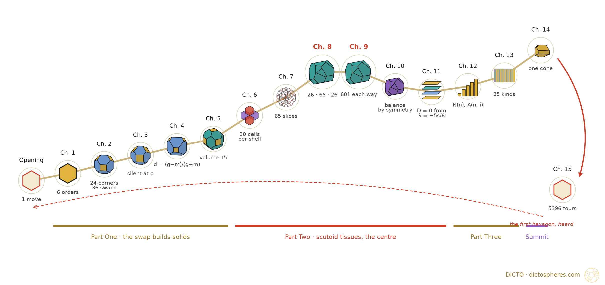
Where the swap carries a law. The study of swaps across the series (studies/2026-11-13-swaps-and-fixed-points) found that a law sits at the fixed point of a swap only where the swap forces it, and kept its classes exact; this book uses them as found. The scutoid swap is the self-reverse event of a sweep, counted by h2: a law at a fixed point (Chapter 8). Kelvin's cell is the fixed point of its line's pair swap, where an odd quantity, the Dehn coefficient, must vanish (Chapter 2). The balance law is an invariance, not a fixed point: the same count each way, and false without symmetry (Chapters 9 and 10). The Mirror Law sits on the mirrors, the fixed places of the reflections (Chapter 7). The two halves of the plain hunt are a swapped pair (Chapter 15). The Vacuus counts and the family theorem involve no swap at a fixed point, and the silent golden station is not at one (Chapter 3).
Onward. The swaps of this book are swaps of neighbours: values, cells, layers. The series follows the others in their home books. Faces with corners, the polar swap behind the faces-not-corners view, and the canonical form of the associahedron belong to Book Eleven, A Brief Geometry of Space; the Galois swap √5 ↔ −√5 to Book Eleven; the turn μ ↔ c/μ, which folds every polar line about the solid whose faces all touch one sphere, to Book Eleven; the layers c ↔ h to Book Six, HexOct; the mirrors of the five solids to Book Eight, The Platonic Solids. The question of the series stays open, and this book hands it on: what stays in place when the parts of space change places?
(1) Which rosette tissues without symmetry balance, beyond the 16-cell law N1 + N5 = NQ + 2 (Chapter 10)? (2) Extend the Swap Rule below λ = −9s/8 and below s = 1/8, where a piece reaches two gaps, and close the windows of the Boulder (#80, #81) and the exact form of s* (Chapter 11). (3) Is there a golden filling that repeats in no direction at all? Theorem 13.2 shows that no cut of codimension one in a golden direction gives one (Chapter 13). (4) Among the polytopes of the seven reflection chains, Vacuus slices off the mirrors that carry three or more faces occur in four dimensions only in the permutohedron and the runcinated 5-cell (#108, Observation 4); which polytopes outside the chains have them (Chapter 7)? (5) Does the 13-COA fill space with octahedra and tetrahedra, and which equal-edged members do the A4, B4, F4 and H4 cones hold? For n ≥ 5, which members of the family are parallelohedra (Chapter 14)? (6) The 4D Vacuus of the hop, the move that does not undo itself, has no sophisticated centre (studies/2026-11-12-hop-4d-vacuus, a negative answer); does any other move of the lines of the series give the 4D permutohedron's kind of heart? (7) Match #50's five space-fillers with Fedorov's five of Proposition 14.4, name by name.
Proved: proof in the chapter or in the paper named. Exact: computed in exact arithmetic (study and commit in the appendix Checks and data). Computer-assisted: an exact proof whose cases were decided by a program. Numerical: floating point only. Open: not proved.
| ch. | claim | status |
|---|---|---|
| 1 | Lemma 1.1: the six orders of a < b < c span a truncated triangle with sides √2(b − a), √2(c − b), and every truncated triangle arises so; Corollary 1.2: every 2-face of a permutohedron is a truncated triangle or a rectangle | proved (and checked exactly) |
| 2 | Proposition 2.1: the 36 edges of Kelvin's cell are 12 swaps of each pair; its squares and hexagons are the two rules among swaps | proved (classical, read as swaps) |
| 2 | Kelvin's cell is the only lone tiler of the cube–octahedron sweep besides the cube (#100); it is the fixed point of the pair swap μ ↔ 3 − μ, where the Dehn coefficient, odd under the swap, vanishes and the wall area is largest | proved (#100; swaps study K3, K4, exact) |
| 3 | Proposition 3.1: 48 symmetries exactly for values symmetric about their mean; Theorem 3.2: T(x) and T(1/x) fill space, in one way only | proved (3.2 in #48, #105, #93) |
| 3 | Theorem 3.3: on the slider the fourth harmonic vanishes only at the golden stop, Icosaxes, which is silent in degrees 2, 4, 8, 14 (#94) | proved (#94) |
| 4 | Theorem 4.1: the power-diagram cell at weight d is the permutohedron with gaps g, m, g, d = (g − m)/(g + m) | proved (with #90, #105); checked exactly |
| 5 | Theorem 5.1: the chamfered cube Z, volume 15, and the build of 14 Hemi RDs as Z less six cube pyramids | exact (the build read in rational coordinates) |
| 5 | Corollary 5.2: Z is not a permutohedron; Theorem 5.3: Z and unit cubes fill space | proved; 5.3 exact |
| 6 | Theorem 6.1: the flat-faced scutoid shell of the truncated icosahedron | flatness proved (mirror argument); the filling certified exactly at the radii of the figures (scutoid_exact.py), numerical at other radii |
| 6 | Theorems 6.2 and 6.3: the polar flip and the cycle of four shells | proved; certified exactly in ℚ(√5) (the scutoid shells at the radii of the figures) |
| 6 | Proposition 6.4: layer spacing h of the crystal of truncated icosahedra, algebraic of degree 8 | exact (closed form in ℚ(2 cos 6°)) |
| 7 | Theorem 7.1: 65 central slices of four kinds; Theorem 7.2: the heart, five permutohedra of 1, 2, 4, 5 along ten regular hexagons | proved (#105), exact |
| 7 | Theorem 7.3 (the Mirror Law) and Corollaries 7.4–7.6 | proved (#107); checked in 228 cases |
| 8 | Proposition 8.1: the exchanges of the 4D sweep at the 66 orderings with two ascents | proved |
| 8 | Theorem 8.2: a generic sweep of a simple 4-polytope is a scutoid tissue, births, swaps and deaths counted by h1, h2, h3; for the 4D permutohedron 26, 66, 26 | proved (#104) |
| 8 | The scutoid swap is the one self-reverse event of a 4D sweep; a self-reverse class exists only in even dimension, and the pure swap (one contact lost, one made at a corner) only in four | proved (from Theorems 8.2, 8.2′; swaps study K8, exact for d ≤ 7) |
| 9 | Theorem 8.2′: sweeps in every dimension counted by the h-vector; Theorem 9.1, Lemma 9.2; Theorem 9.3: the balance law | proved (#104); 9.2 and 9.3 confirmed by sweeps |
| 10 | Theorem 10.1: edges at a corner read from the chain; the list of clean tissues and rosettes | proved; checked on all 81 Atlas polytopes |
| 10 | Lemma 10.2: one ledger per Wythoff polytope; Theorem 10.3: every rosette tissue of the Atlas balances, class by class, in every direction | proved; checked exactly on all 34 rosette rows |
| 10 | Without symmetry the balance law fails (a moved 16-cell, same face lattice); conservation kept | exact counterexample; conservation proved |
| 11 | Theorem 11.1: the Swap defect below s = 1/4 for s in [1/8, 1/4], and the Swap Rule from λ = −5s/8 to 3s/8 | computer-assisted exact proof (#104), rerun from a clean checkout |
| 11 | Section 11.3, the Boulder: walls along the sliders of #86, #80 and #81 | #86 exact; #80, #81 exact on the closing intervals, the windows and s* numerical |
| 11 | λ below −9s/8; s below 1/8 | open |
| 11 | Proposition 11.2: the chamber map of the Swap Rule is an affine section of a secondary fan, so its walls are straight | proved (a reading) |
| 12 | Theorem 12.1: the Vacuus count N(n); Proposition 12.2: the sweep by Eulerian numbers in every dimension | proved (12.1 in #105); checked n ≤ 9 and n ≤ 7 |
| 13 | Theorem 13.1: the golden slice is non-periodic in one direction only (it repeats along a plane, never in a third direction), with exactly 35 combinatorial types; 70 golden corner heights | proved, heights exact in ℤ[φ]; (i) corrected 13 November |
| 13 | Theorem 13.2: infinitely many shapes in every kind; the window version has 60 tile shapes and 69 corner configurations (35 up to point reflection); both repeat along a plane only | proved; exact in ℚ(φ) (40 checks) |
| 14 | Theorem 14.1 (i)–(iii): the line from the permutohedron to the associahedron keeps the face lattice to the end, fills space only at the start; the equal-speed walls DS; Ω(Π) = 2n−1n/(n − 1)! and Ω(L) = mn+2 | proved for every n; the forms along the line exact for n = 4, 5; the n = 6 exit from the family exact |
| 14 | Proposition 14.2: the ABHY associahedron gives mn (the theorem of Arkani-Hamed, Bai, He and Yan) | reproduced exactly, n = 4 to 10 |
| 14 | Theorem 14.3: the equal-edged members of the A3, B3, H3 cones (17, 101, 4427), the five stretchable solids, the sum criterion | exact (complete search); (i), (iv) proved |
| 14 | The atoms: the 13-COA is the augmented cuboctahedron (Stewart 1970), the A3 atoms are known; 339 of the 367 H3 atoms not found in the sources checked; the 13-COA's Vacuus | prior art checked (13 November); the Vacuus numerical |
| 14 | Proposition 14.4: members that fill space by translations; Fedorov's five as the graphical zonotopes of four vertices | proved (from classical facts) |
| 14 | The sections of the tesseract across a long diagonal (#89) are permutohedra of four values with a repeated value, (0, h, 1, 1) for 0 < h < 1 | exact (checked against #89's data: check89.py) |
| 14 | Sliding a member along a swap direction keeps it in the family (#49 read as a Minkowski sum); #50's five are parallelohedra, hence of Fedorov's five types; the name-by-name match is open | proved (classical); match open |
| 15 | Lemmas 15.1, 15.2; Theorem 15.3 (44 and 5396 tours); Proposition 15.4; Theorems 15.5, 15.6; Theorem 15.8; Proposition 15.9 | exact (exhaustive, two independent counters) |
| 15 | Theorem 15.7: plain hunt, n changes, the only two shortest ways, for every n ≥ 3 | proved for every n; farthest row checked n ≤ 8 |
The study behind each chapter's checks, in the folder studies/ of the research branch of https://github.com/DICTOR-Master/kaleidohedra (branch research-fig3), with the commit at which it was last changed. FINAL ok marks a script whose log ends with every check passed.
No new checks: the Opening retells the chapters. Figures 0.1 and 0.2: figs_book.py (studies/2026-11-13-paradigm-expansion), drawn from the six orders of 1, 2, 3.
studies/2026-11-11-paradigm-ch1: key_lemma.py (exact, symbolic; the faces of the solids of Section 1.3 computed from their hulls; log kept; FINAL ok), fig_three.py (Figure 1.1). Commit d79c1d1f; checked independently on 11 November 2026, all findings fixed. Figure 1.3: studies/2026-11-13-paradigm-expansion (figs_book.py; side lengths computed from the values).
studies/2026-11-13-paradigm-expansion: figs_book.py (Figure 2.1: the 24 orders of 1, 2, 3, 4 and the 36 edges, each edge classed by the pair of values it swaps, 12 per pair; Euler 24 − 36 + 14 = 2 checked). The Dehn test and the TO-13 block: #100 and #26, with their own studies.
studies/2026-11-11-paradigm-ch2: symmetry.py (the full symmetry group of the corners for four symmetric and three non-symmetric spacings; exact; FINAL ok). Commit becdcba3. The identification of T(x): #105, Theorem 4 (dictonic_family.py in studies/2026-11-10-permutohedron). The silent station: #94 (studies/2026-11-04-harmonic-fingerprint); Figure 3.4 recomputes Q₄ along the slider from the closed form of #94 (figs_book.py), with the zero at a = 1/φ.
studies/2026-11-11-paradigm-ch3: weight_map.py (exact, corner by corner, at d = −1/3, 0, 1/τ³, 1/3, 2/7, and every site within ±8 at six weights; FINAL ok), fig_slider.py (Figure 4.1). Commit d79c1d1f; checked independently on 11 November 2026, all findings fixed. Figure 4.2: figs_book.py (the two cells as half-space intersections at d = −1/3, 0, 1/3; their volumes add to the lattice cell).
studies/2026-11-11-hemi-rd-build: analyse_build.py (DICTO's world export; float geometry, the first reading of the build), fill_test.py (a numerical first test), exact_fill.py (Theorem 5.3 in rational arithmetic: 487 pairs separated by exact planes, densities 15 + 1 = 16; FINAL ok). Commit 52b55686. studies/2026-11-13-paradigm-exact: hemi_exact.py (Theorem 5.1 in rational arithmetic: the stored transforms read as exact rotations and tenths, 91 + 99 pairs separated by exact planes, hull = Z + c exactly, 14 + 6 · ⅙ = 15; FINAL ok; log data/hemi-exact.log). studies/2026-11-11-paradigm-ch4: fig_ch4.py (Figure 5.1; Figure 5.2: figs_book.py; FINAL ok), commit 7f2c451e.
Theorem 6.1: the draft Scutoids: Layers, Shells and Cycles (commit e932cb55) and its studies of 17 October and 6–10 November 2026 (faces flat to 10−13, volumes adding up). Theorems 6.2 and 6.3: studies/2026-11-13-paradigm-exact, scutoid_exact.py (exact in ℚ(√5): polars, folds, mirror planes, the flip shells at five-fold radii 1, 1.55 and 155/86, the scutoid shells at circumradii 1, 1.18, 1.42, 1.499, 71/45 with 2 × 2016 pairs of half-cells separated by exact planes and volumes adding exactly; FINAL ok; log data/scutoid-exact.log). Proposition 6.4: the study of 6–7 November 2026 (layer spacing solved from exact contact planes, corners to 400 digits; h written exactly in ℚ(2 cos 6°), FINAL ok).
studies/2026-11-10-permutohedron (the study of #105; commit 3f41e5b3): the 65 slices and their shapes in exact rational arithmetic, every face confirmed exactly, Euler number 2 for every shape; web_of_bonds.py (the classical facts of Section 7.1 recounted exactly); the six corners of Theorem 7.2 confirmed against all 150 faces. The Mirror Law sections: studies/2026-11-11-orbit-polytopes (commit c5fb794d): mirror_law.py (228 cases, no disagreement), mirror_check.py (Corollary 7.4), vacuus_queens.py (under all 14 400 symmetries), vacuus_middles.py. Figures 7.1 and 7.2: figs_book.py (studies/2026-11-13-paradigm-expansion), the slices recomputed from their normals.
Proposition 8.1: studies/2026-11-11-paradigm-ch5, swap_orderings.py (all 120 orderings for three directions; exact; FINAL ok), commit bc0c7781. Theorem 8.2: #104 and its studies. The warm-up and Figures 8.1, 8.2 and 8.3: figs_book.py (studies/2026-11-13-paradigm-expansion): the events of each frame counted from the corners, 1, 11, 11, 1 for Kelvin's cell and 1, 26, 66, 26, 1 for the 4D permutohedron in the direction drawn. The self-reverse event: studies/2026-11-13-swaps-and-fixed-points, check K8 (exact, d = 2 to 7).
The studies named in #104 (sweeps of the 120-cell, the truncated 120-cell and the bitruncated 600-cell in nine generic directions; the 5-cube, the 5D permutohedron and three random simple 4-polytopes, predictions first). The balance law in every chain: #108. Figures 9.2 and 9.5: figs_book.py (the bitruncated 600-cell built as a Wythoff orbit of H4, its 2166 swaps classed in one generic direction: 601, 601 and 964); the h-vectors from the f-vectors by the Dehn–Sommerville relations.
studies/2026-11-11-paradigm-ch8: simple_rule.py (the edge count of Theorem 10.1 against the measured degree of all 81 polytopes of the Atlas; FINAL ok), commit c5fb794d; the Atlas data of #108 (studies/2026-11-11-orbit-polytopes). Section 10.2: studies/2026-11-13-rosette-balance, rosette_balance.py and invariants.py (exact: rationals, ℚ(√5) for H4; the ledgers of all 34 rosette rows, the moved 16-cell, 8000 + 60 moved sweeps; FINAL ok), commit d8331af2. Figures 10.1, 10.2 and 10.3: figs_book.py; the edge counts of Figure 10.2 recomputed from Theorem 10.1.
studies/2026-11-09-b1-walls: cells61.py with the five cell logs data/cells2-D24/ (35,561,184 exact sign checks, each ending FINAL ok); rerun from a clean checkout on 11 November 2026 with identical logs, commit 2467d60f. Re-run: cd studies/2026-11-09-b1-walls/scripts && D2=24 python -u cells61.py (about 45 minutes, five cells in parallel). The Boulder: the B1 logs of studies/2026-11-09-b1-walls (tower-c.log, tower-h.log) and studies/2026-11-13-paradigm-exact/data/b1-logs (the cube and dodecahedron chains, each exact run ending FINAL ok). Cones of heights: the proof in the text (no computation).
studies/2026-11-10-permutohedron: vacuus_general.py (Theorem 12.1 by brute force over every ridge, n = 3 to 9, exact elimination), vacuus3d_12.py (the 15 cards of Figure 12.1, exact). studies/2026-11-11-paradigm-ch11: sweep_all_n.py (Proposition 12.2, n = 3 to 7; FINAL ok), commit 2ec0ae43. Figure 12.2: figs_book.py (ridges, slices and Eulerian numbers from their formulas, checked against the table).
studies/2026-11-11-paradigm-ch12: golden_types.py (corner heights exact in ℤ[φ]; types by graph isomorphism; FINAL ok), commit 9ecafe40. The float slice test of 10 November 2026 is superseded. Theorem 13.2 and the correction to Theorem 13.1 (i): studies/2026-11-13-golden-slice-window, slice_window.py (exact in ℚ(φ): Lawrence volumes per band, the window tiling on a patch of radius 50, the period plane; 40 checks, FINAL ok), commit 6ba577f5. Figures 13.1 and 13.2: figs_book.py (heights exact in ℤ[φ]; the plane sections of the slices in floating point, for the picture only).
studies/2026-11-12-permutohedron-associahedron-line: gp_line.py (Theorem 14.1, the table, n = 4, 5, exact), gp_enum.c and gp_line_b.py (the equal-speed line, n = 4, 5, 6), conj1_witness.py (the point of the proof of (iii), n = 3 to 13) and reader_check.py (an independent recheck); commits ee6fd4e7, b7c4891a. studies/2026-11-12-abhy-associahedron: abhy.py (Proposition 14.2, 48 checks). studies/2026-11-12-permutohedron-equal-edges: coxeter.py, gp_setup.py, gp_enum.c, gp_analyse.py, gp_tables.py (Theorem 14.3, exact over ℚ(√2) and ℚ(√5)); render_a316.py and vacuus_a316.py (the 13-COA and its Vacuus; the Vacuus in floating point); PRIOR-ART.md (13 November 2026, commit 7f9b1dd5: the sources checked for the atoms). The road, the one-cone map, Fedorov's five rendered and the 13-COA re-rendered: figs_book.py (studies/2026-11-13-paradigm-expansion). The #89 reading: check89.py there (exact, sympy; FINAL ok).
studies/2026-11-12-change-ringing, commit 52adaaef (Theorem 15.7 proved for every n on 13 November 2026, after an independent reader closed one gap; breadth-first search for n = 7, 8 rerun by the reader with the same result). Figures 15.5 and 15.6: figs_book.py (studies/2026-11-13-paradigm-expansion), the rows generated from the place notation and checked to be 120 distinct rows, each step a change.
DICTO's papers named in this book, with their DICTO DOIs (concept DOIs: they resolve to the latest version) and where they are named.
| # | title | DICTO DOI | named in |
|---|---|---|---|
| #20 | The FUJI Family | 10.5281/zenodo.23357896 | 1, Opening |
| #26 | DICTO ATOM-13×13 | 10.5281/zenodo.23333183 | 2, title page |
| #42 | The DICTO Sunstar | 10.5281/zenodo.23497702 | 7 |
| #43 | DICTO Kyushindo Cores | 10.5281/zenodo.23532013 | 15 |
| #44 | Aristotle's Pyramid | 10.5281/zenodo.23529497 | Opening |
| #48 | The Golden Split: Icosahedra, Unborns and AXE Become Two Convex Space-Fillers | 10.5281/zenodo.23596362 | 1, 2, 3, 4, Epilogue, Opening |
| #49 | The Polyhedral Stretching Theorem | 10.5281/zenodo.23566671 | 14, Epilogue, title page |
| #50 | One Move Each: Classical Cut-and-Glue Space-Fillers Built Exactly | 10.5281/zenodo.23606894 | 14, Epilogue, title page |
| #52 | The Web of Bonds: How the DICTONIC Bonds Hand Over | 10.5281/zenodo.23629252 | 4, Opening |
| #53 | The Global Web of Bonds: How Bonds Hand Over Across Crystal Networks | 10.5281/zenodo.23631140 | 3, 4, 11 |
| #58 | From the Octet to Every Stacking: the Web of Bonds | 10.5281/zenodo.23665944 | 2, 5, Opening |
| #61 | The Swap Rule: Ganesha, the Janus Tetrahedra of Squashed Stackings, and the Border at True Close Packing | 10.5281/zenodo.23682596 | 11, Epilogue, Opening |
| #63 | The White Queen 600-cell | 10.5281/zenodo.23690856 | 7, 9, Opening |
| #65 | The Red Queen 120-cell: Aristotle's five pyramids as the cores of the regular four-dimensional solids | 10.5281/zenodo.23716140 | 7, 9, Opening |
| #76 | Between the Queens | 10.5281/zenodo.23780068 | 7, 9 |
| #80 | The Gains of DICTO's Growth Rule | 10.5281/zenodo.23822907 | 11, Epilogue, title page |
| #81 | Core Cycles | 10.5281/zenodo.23846772 | 11, Epilogue, title page |
| #86 | The HexOct Family: every close-packed stacking from two single solids, at every weight | 10.5281/zenodo.23896076 | 11, Epilogue |
| #87 | DICTO Vacuus Solids | 10.5281/zenodo.23896015 | 5, 7, 14, Opening |
| #88 | Every Platonic Solid Has Exactly Two Golden Cuts: the DICTO-Kepler Golden Truncations and the DICTO-GTT-Solids | 10.5281/zenodo.23896439 | 1, Opening |
| #89 | All Five Golden Pairs Are Slices of Four-Dimensional Solids: Golden Cuts beyond Plato | 10.5281/zenodo.23917931 | 14, Epilogue, Opening, title page |
| #90 | Golden on the Octahedron, Silver on the Cube: Six Dimensions and the Golden Cut Cubes | 10.5281/zenodo.23931136 | 3, 4, Epilogue |
| #91 | Four-Dimensional Solids Whose Every Cell Is a Golden Cut: Dual Pairs through the Dimensions | 10.5281/zenodo.23931389 | 7, title page |
| #93 | One Double Pyramid, Two Splits: Cut Across Its Square It Builds Only Cubes, Cut Along a Diagonal It Builds the Rhombic Dodecahedron's Pyramids Freely | 10.5281/zenodo.23933666 | 1, 3, 4, Epilogue, Opening |
| #94 | The Silent Golden Station: The Harmonic Fingerprint of the Cube–Octahedron Sweep Finds Icosaxes, and Only Icosaxes | 10.5281/zenodo.23934349 | 3, Epilogue, title page |
| #95 | Pentagons for the Kites: How One Idea for the DICTO Ogdoecontahedron Grew | 10.5281/zenodo.23968270 | 1 |
| #100 | The Dehn Test Picks the Lone Tilers: Sweeps and Truncated Tetrahedra That Fill Space | 10.5281/zenodo.24030326 | 2, Epilogue, title page |
| #104 | Scutoid Tissues in Four Dimensions | 10.5281/zenodo.24111864 | 6, 7, 8, 9, 10, 11, 12, 15, Epilogue, Opening |
| #105 | DICTO 1:2 Truncated Octahedron: The 4D Vacuus of the Permutohedron | 10.5281/zenodo.24121177 | 1, 2, 3, 4, 5, 7, 12, 13, 14, Epilogue, Opening |
| #107 | The Vacuus of the Queens | 10.5281/zenodo.24126800 | 7, Epilogue |
| #108 | The Atlas of the Chains | 10.5281/zenodo.24126802 | 7, 8, 9, 10, Epilogue, Opening |
Works by others cited in the chapters, with the chapters that cite them. DICTO's own papers are listed separately, with their DICTO DOIs, in Papers referred to. DOIs were checked against the publishers' records (Crossref) on 11 and 12 November 2026; works marked "record only" were checked as bibliographic records and no statement of this book rests on them.
Figure credits for standard pictures named in captions: permutohedra labelled by orderings, T. Piesk (Wikimedia Commons, 2020) and D. Eppstein (Chapter 1); sections of the 4D permutohedron parallel to a cell, J. Bowers and Galoomba (Polytope Wiki; Chapter 7); views centred on one truncated icosahedron, T. Ruen with R. Webb's Stella4D (2010) and H. S. Teoh (Chapters 8, 9).
Chapters in which each term appears.
| 120-cell | 7, 9, 10, 15, Opening |
| 13-COA | 14, Opening |
| 600-cell | 7, 9, 10, 15, Opening |
| associahedron | 14, Opening |
| Atlas | 7, 8, 9, 10, Opening |
| augmented cuboctahedron | 14, Opening |
| balance law | 7, 8, 9, 10, Opening |
| bitruncated 600-cell | 7, 9, 10 |
| Boulder | 11 |
| braid relation | 15 |
| canonical form | 14, 15, Opening |
| chamber map | 11 |
| chamfered cube | 5, 14, Opening |
| change ringing | 15, Opening |
| Coxeter | 1, 7, 9, 10, 14, 15, Opening |
| cube pyramid | 5, Opening |
| deformation cone | 14, 15 |
| DICTO 1:2 Truncated Octahedron | 1, 3, 4, 5, 7, 12, Opening |
| DICTO 2:1 Truncated Octahedron | 1, 3, 4, Opening |
| DICTONIC | 3, 7, Opening |
| elongated hexagon | 5, Opening |
| Eulerian | 6, 7, 8, 9, 12, Opening |
| extent | 15, Opening |
| Fedorov | 14, Opening |
| Fibonacci | 15 |
| g-theorem | 9 |
| generalized permutohedra | 14 |
| golden bond | 1, 4, 14 |
| golden cut | 1, 7, 13, 14, Opening |
| golden loop | 3, 4, 7, Opening |
| golden slice | 13, Opening |
| Grandsire | 15 |
| graphical zonotope | 14 |
| h-vector | 7, 8, 9, 10, 12, 15, Opening |
| harmonic | 3, Opening |
| Hemi RD | 5, Opening |
| Icosaxes | 1, 3, 4, 7, 14, Opening |
| Kelvin | 1, 2, 3, 4, 5, 8, 10, 12, 14, 15, Opening |
| Kyushindo | 15 |
| majorization | 7 |
| Minkowski sum | 14 |
| Mirror Law | 7, Opening |
| parallelohedra | 14 |
| permutohedron | 1, 2, 3, 4, 5, 6, 7, 8, 9, 10, 11, 12, 13, 14, 15, Opening |
| Plain Bob | 15 |
| plain hunt | 15, Opening |
| power diagram | 11, 13 |
| quasicrystal | 13 |
| Queens | 7, 9, 15, Opening |
| rhombic dodecahedron | 5, 14, Opening |
| rosette | 9, 10, 11, 15, Opening |
| runcinated 5-cell | 7 |
| scutoid | 6, 7, 8, 9, 10, 11, 12, 15, Opening |
| secondary fan | 11 |
| self-reverse | 8, 12 |
| silent station | 3 |
| Stanley | 7, 9, 10, 15 |
| Stedman | 15 |
| Stretching Theorem | 14 |
| swap | 1, 2, 3, 4, 5, 6, 7, 8, 9, 10, 11, 12, 14, 15, Opening |
| Swap Rule | 11, Opening |
| switch theorem | 11 |
| T1 | 6, 9, 11 |
| truncated 600-cell | 7, 9, 10 |
| truncated octahedron | 1, 2, 3, 4, 7, 14, 15, Opening |
| truncated triangle | 1, 4, 5, 14, 15, Opening |
| Unborn Axes | 1, 3, 4, 7, Opening |
| Vacuus | 1, 3, 5, 7, 12, 14, Opening |
| Weaire | 2, 6 |
| web of bonds | 4, Opening |
| Wythoff | 7, 10, 14 |
| zonohedron | 5, 14, Opening |
DICTO is an artist in Osaka, Japan. His background is architectural sculpture, stonecarving and Buddhist statuary. He trained as an architectural stonecarver at the City and Guilds of London Art School (1998–2001), worked at St James's Palace, and recarved the Roman lettering of the Civil Service Rifles War Memorial at Somerset House, London, for its rededication in 2002. Since 2009 he has worked in Japan in the sculpture and restoration of Buddhist statues, among them a statue at Takaosan Jingo-ji, Kyoto, traditionally attributed to Kōbō Daishi Kūkai.
He builds geometric sculpture from recycled PET bottles with two modular systems of his own, B1NR and DICTOspheres, joined without glue. He holds six Japanese design registrations; five rest on spherical projections of the Platonic solids, the five forms behind his name: Dodecahedron, Icosahedron, Cube, Tetrahedron, Octahedron. His sculptures have been shown in Kyoto at the Kyoto Municipal Museum of Art (Interdependent Origination III, 2025), the Insho Domoto Museum of Fine Arts, the Kyoto Botanical Garden, the Kansho Exhibition and the Kyoto Takasegawa Art Festival.
The geometry behind the sculptures led to the papers gathered in DICTO: Collected Geometric Works and to the books HexOct: The Hexagonality Law, The Golden Cycle and Star Cores (Cycles of Growth, Parts I and II), Alicia in Wonderland: The Red & White Queens, Quanta of Space: A Manifesto, DICTONIC Bonds: from the Octet to the Rule of Halves, The Golden Ladder: Golden Cuts from Plato to the Eighth Dimension, and this one (all 2026). Every paper and book is published openly with its own DICTO DOI at Zenodo. More at https://dictospheres.com.
One work by DICTO in eleven books and twelve volumes, in five rings
The work is built after two models, credited as models. From Miyamoto Musashi’s Go Rin no Sho, The Book of Five Rings (五輪書, about 1645), it takes its five rings, Earth, Water, Fire, Wind and the Void. In paraphrase, not quoted from any translation: for Musashi, Earth lays out the way, Water is form and technique, Fire is the encounter, Wind is the knowledge of other schools, and the Void is what lies beyond. From Euclid’s Elements (about 300 BC) it takes its build: the Definitions are the DICTOnary (Book One, II: The DICTOnary of Atoms), the Postulates are Quanta of Space I (Book One, I: the manifesto), and the Propositions, with their proofs, are Books Two to Eleven. Each ring is one of the five Platonic solids, in its element’s colour.
| ring | element | solid | colour | books | |
|---|---|---|---|---|---|
| Earth | 地 | earth | Cube | green | Book One. Quanta of Space I and II (The DICTOnary of Atoms) Book Two. Space-Fillers and Lattice Moves |
| Water | 水 | water | Icosahedron | blue | Book Three. DICTONIC Bonds Book Four. The Golden Cycle Book Five. Star Cores |
| Fire | 火 | fire | Tetrahedron | red | Book Six. HexOct: The Hexagonality Law Book Seven. The Permutohedron Paradigm |
| Wind | 風 | air | Octahedron | yellow | Book Eight. The Platonic Solids |
| Void | 空 | aether | Dodecahedron | violet | Book Nine. The Golden Ladder Book Ten. Alicia in Wonderland: The Red & White Queens Book Eleven. A Brief Geometry of Space |
About 1645 the swordsman Miyamoto Musashi set down his way in five books: Earth, Water, Fire, Wind and the Void. Nineteen centuries before him Euclid had set down geometry as definitions, postulates and propositions, and ended by building the five regular solids and proving that there are no more. This work borrows from both. Its five rings are the five solids of DICTO’s name, each in its element’s colour: the cube for Earth, the icosahedron for Water, the tetrahedron for Fire, the octahedron for Wind, the dodecahedron for the Void. Earth lays out the pieces of space. Water follows them as they flow into one another. Fire is the meeting: two neighbours change places, and a cell of living skin is carried into four dimensions. Wind goes back to the old schools and their five solids. The Void goes beyond them, and comes home. One question runs through all five: what stays in place when the parts of space change places?
One book from each ring, then the rest, with the DICTOnary at hand throughout:
A reader who knows the five solids may start at Book Eight. The Water books and Books Nine and Ten are taken when the main road points to them. The full order is the numbering.
Models: Miyamoto Musashi, Go Rin no Sho (The Book of Five Rings, 五輪書, about 1645); Euclid, Elements (about 300 BC), Book XIII for the five solids. Element colours as in DICTO’s square.